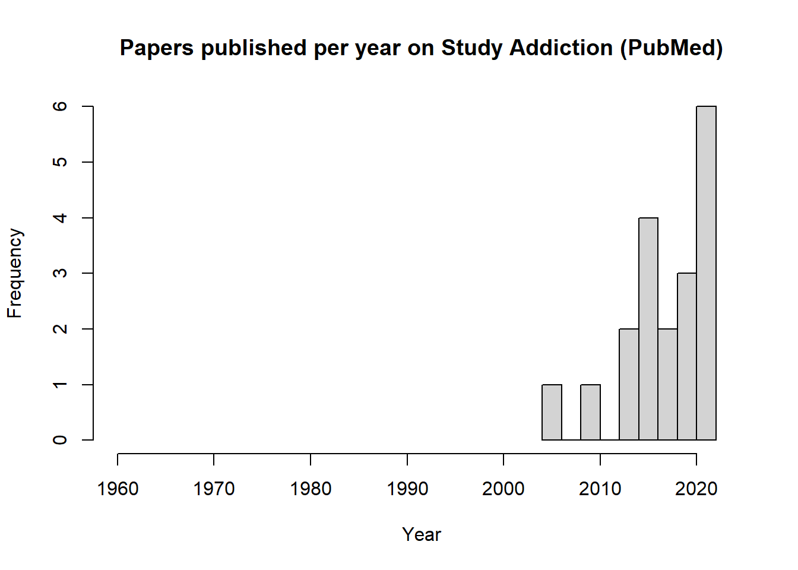
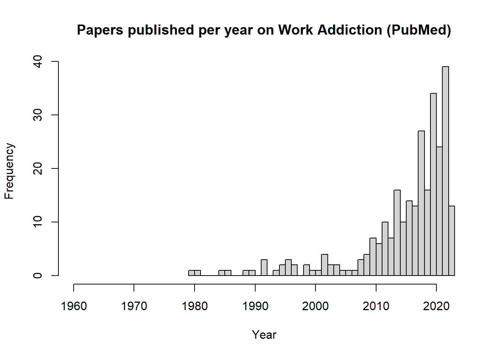

The article must be registered/stored on the PubMed database (a list of journals indexed on PubMed can be found here).
The article must focus on a behaviour which has been studied within the context of addiction (e.g., gambling, exercise, video gaming); the behaviour can be the primary focus or a sub-component of a larger paper (e.g., a study on alcohol use which also measures symptoms of gambling disorder)
The article must use language in the title and/or abstract that indicate that the behaviour is discussed in the context of or as an addiction. This could include, but is not restricted to:
the direct use of the terms “addiction” or “dependence”
the use of accepted (DSM/ICD) or previosuly accepted (e.g., “pathological gambling”) diagnostic terms (e.g., “gambling disorder”)
the use of a term or phrase which is not a clinically/medically accepted diagnostic term (i.e., it is not included in any nosological system), but is used in the research area as such (e.g., “compulsory exercise”, “workaholism”)
the use of measures of “addiction” to the behaviour (e.g., “Exercise Addiction Inventory”) or measures of the symptoms of addiction (e.g., craving, withdrawal) that are then discussed in the context of a disorder or addiction
There are no restrictions on date of publication, study designs, article types (e.g., commentaries, empirical studies etc.)
There are no restrictions on language publication, provided the title and abstract are presented in English as well as the primary language.
The above criteria were used to design of the search terms/strings employed to extract data from the PubMed database (the search string for each behavioural addiction is included before the code used to extract the associated studies). A manual scan of all return studies for relevance according to the above criteria has been made.
https://www.youtube.com/watch?v=yzTuBuRdAyA
Code blocks
Please note that any code chunks presented in this document that, when executed, scrape or pull data from PubMed, are specifically set so that they do not execute when this document renders. Thus, these code chunks, as seen here, simply represent documentation rather than working code. This is because extracting this data (particularly for “addictions” where there are thousands of studies [e.g., gambling]) can take a substantial amount of time and therefore it would take 30-40 minutes every time this document renders if these code chunks executed.
I only note this for anyone wanting to reproduce this analysis who tries to run the entire script by rendering the document. It’s also important as the date at the top of this document may not be the latest date of data extraction (it is only the last date this was rendered).
The latest dates of data extraction for each “behavioural addiction” are below:
# Install and load the groundhog package to ensure consistency of the package versions used here:# install.packages("groundhog") # Installlibrary(groundhog) # Load# List desired packages:packages <-c('rentrez','dplyr','tidyr','purrr','rvest','stringr')# Load desired package with versions specific to project start date:groundhog.library(packages, "2023-06-07")
Behavioural addictions
Extract studies and perform a basic clean of dataset
Notes pre-search: MeSH terms were pretty useless here (unlike the more specific behavioural addiction searches used below) so I relied on my knowledge of the field for terms to use.
Actual search used: ((((“behavioural addiction”[Title/Abstract]) OR (”behavioral addiction”[Title/Abstract])) OR (“non-drug addiction”[Title/Abstract])) OR (”non-substance addiction”[Title/Abstract])) OR (“non-chemical addiction*“[Title/Abstract])
Manual search results:link. PubMed format display can be found here
Notes post-search: I manually scanned the results returned on the PubMed site for relevance and all appeared to meet the inclusion criteria. There will certainly be one of overlap between the studies returned from this search and the search is specific to individual behavioural addictions.
search_term_behav_addictions <- ’((((“behavioural addiction”[Title/Abstract]) OR (”behavioral addiction”[Title/Abstract])) OR (“non-drug addiction”[Title/Abstract])) OR (”non-substance addiction”[Title/Abstract])) OR (“non-chemical addiction*“[Title/Abstract])’
#### Extract full title using `rvest`Okay, so I'm struggling to get the `rentrez` package to extract the full, non-truncated titles of articles. I want to make sure we have these so we can accurately identify duplicates, so we're going to use the `rvest` package to scrape the titles returned from a manual search in PubMed (it uses the URL from this search), then join the two datasets using the PMID, retaining the title from this new dataset.::: {.callout-note appearance="minimal"}## Using the `revest` packageIt's important to note that, unlike using the `rentrez` package X uses data via PubMed's API, using the `rvest` package involves scraping the PubMed website for information, and there are many important ethical and legal considerations surrounding web scraping (some of which vary from country to country) that you may need to consider before proceeding. See, for example, this useful [paper](https://www.researchgate.net/profile/Vlad-Krotov/publication/324907302_Legality_and_Ethics_of_Web_Scraping/links/5aea622345851588dd8287dc/Legality-and-Ethics-of-Web-Scraping.pdf).:::```{r warning=FALSE, message=FALSE}# Add search URL:url_behav_addictions_rvest <-"https://pubmed.ncbi.nlm.nih.gov/?term=%28%28%28%28%22behavioural+addiction*%22%5BTitle%2FAbstract%5D%29+OR+%28%22behavioral+addiction*%22%5BTitle%2FAbstract%5D%29%29+OR+%28%22non-drug+addiction*%22%5BTitle%2FAbstract%5D%29%29+OR+%28%22non-substance+addiction*%22%5BTitle%2FAbstract%5D%29%29+OR+%28%22non-chemical+addiction*%22%5BTitle%2FAbstract%5D%29&sort=pubdate&size=200"# 1455 results on 07/09/2023. # Read and parse the webpage:webpage_behav_addictions_rvest <-read_html(url_behav_addictions_rvest)# Get the total number of search results:results_count_behav_addictions <- webpage_behav_addictions_rvest %>%html_node(".results-amount .value") %>%html_text() %>%str_replace(",", "") %>%as.numeric()# Calculate the number of pages:results_per_page_behav_addictions <-100total_pages_behav_addictions <-ceiling(results_count_behav_addictions[1] / results_per_page_behav_addictions)# Print results_count_behav_addictions and total_pages_behav_addictions:print(results_count_behav_addictions)print(total_pages_behav_addictions)# Initialize an empty data frame:results_behav_addictions_rvest <-data.frame()# Loop through each page and scrape the data:for (page in0:(total_pages_behav_addictions -1)) {# Update the page parameter in the URL for the current page current_url <-paste0(url_behav_addictions_rvest, "&page=", page +1)# Read and parse the current webpage: current_page <-read_html(current_url)# Extract title: Title <-tryCatch({ current_page %>%html_nodes(".docsum-title") %>%html_text(trim =TRUE) }, error =function(e) {print(paste("Error extracting title", page +1))rep(NA, length(Title)) # Return a vector of NAs with the same length as Title })# Extract the PMID: pmid <- current_page %>%html_nodes(".docsum-pmid") %>%html_text(trim =TRUE)# Create a data frame with the extracted data: current_results_behav_addictions <-data.frame(Title = Title,PMID = pmid)# Combine the current results with the previous results: results_behav_addictions_rvest <-rbind(results_behav_addictions_rvest, current_results_behav_addictions)# Introduce a delay to avoid overloading the server: sleep_time <-runif(1, min =5, max =15)Sys.sleep(sleep_time)}# Print the extracted data:print(as_tibble(results_behav_addictions_rvest))# Now save the titles results before proceeding so we can't lose them!write.csv(results_behav_addictions_rvest, "Data extraction/behav_addictions_titles.csv", row.names=FALSE)
Refine dataset
Now we need to identify and remove any duplicates, irrelevant studies, or entries with any other issues (e.g., those that turn out to be books)
# Load in first dataset in case environment clean on knit (above sections not executed for render):results_behav_addictions<-read.csv("Data extraction/behav_addictions_data.csv") %>%as_tibble()# Load in second dataset in case environment clean on knit (above sections not executed for render):results_behav_addictions_rvest<-read.csv("Data extraction/behav_addictions_titles.csv") %>%as_tibble()# Merge our two datasets:results_behav_addictions2 <- results_behav_addictions %>%as_tibble() %>%rename("Title_trunc"="Title") %>%# Designate the truncated title from our primary dataset so we can remove it once we get the full titlefull_join(results_behav_addictions_rvest, by ="PMID") %>%select(-Title_trunc) %>%# Bye truncated titlerelocate(Title) %>%# Place full title first for easeprint()
# A tibble: 1,455 × 13
Title PMID Year Month DOI Abstract Full_Author_Name Author_Address
<chr> <int> <int> <chr> <chr> <chr> <chr> <chr>
1 Systematic… 3.77e7 2023 Sep 10.1… "Playin… Hurel, Elodie; … "CHU Nantes, …
2 Standalone… 3.76e7 2023 Dec S030… "Proble… Hamamura, Toshi… "KDDI Researc…
3 The Role o… 3.76e7 2023 Aug 10.1… "Intern… Demirci, Esra; … "Department o…
4 Addiction … 3.76e7 2023 Aug 10.1… "OBJECT… Kim, Hyoun S; M… "1Department …
5 I feel add… 3.76e7 2023 <NA> 10.7… "BACKGR… Favieri, France… "Department o…
6 Working me… 3.76e7 2023 Jul S001… "BACKGR… Ngetich, Ronald… "Centre of Ex…
7 Abnormal f… 3.76e7 2023 Aug 10.1… "BACKGR… Bellmunt-Gil, A… "1Turku Brain…
8 A Systemat… 3.76e7 2023 Aug 10.3… "OBJECT… Sa, Rafael Rich… "Department o…
9 Self-exclu… 3.76e7 2023 Aug 10.1… "BACKGR… Hakansson, A; K… "Department o…
10 Mapping th… 3.75e7 2023 Sep S016… "Contem… Hunt, Brian; Za… "Institute fo…
# ℹ 1,445 more rows
# ℹ 5 more variables: Language <chr>, Publication_Type <chr>,
# Journal_name_short <chr>, Conflict_of_Interest_Statement <chr>,
# Journal_Title <chr>
# Check results:# View(results_behav_addictions2)# Check dupliactes based on PMIDs:results_behav_addictions2 %>%group_by(PMID) %>%filter(n()>1) %>%print(n =100)
# A tibble: 0 × 13
# Groups: PMID [0]
# ℹ 13 variables: Title <chr>, PMID <int>, Year <int>, Month <chr>, DOI <chr>,
# Abstract <chr>, Full_Author_Name <chr>, Author_Address <chr>,
# Language <chr>, Publication_Type <chr>, Journal_name_short <chr>,
# Conflict_of_Interest_Statement <chr>, Journal_Title <chr>
# There is no evidence of clear PMID duplicates# Show duplicate titles:results_behav_addictions2 %>%group_by(Title) %>%filter(n()>1)
# A tibble: 11 × 13
# Groups: Title [5]
Title PMID Year Month DOI Abstract Full_Author_Name Author_Address
<chr> <int> <int> <chr> <chr> <chr> <chr> <chr>
1 Psychology… 3.06e7 2018 Dec 10.1… "Having… Chung, Tammy "University o…
2 Psychology… 3.05e7 2018 Nov 10.1… "Having… Chung, Tammy "University o…
3 Impulse co… 2.95e7 2018 Aug 10.1… "Impuls… Marques, Ana; D… "EA 7280, Uni…
4 Call for r… 2.95e7 2018 Mar 10.1… <NA> Potenza, Marc N… <NA>
5 Call for r… 3.21e7 2018 Mar 10.1… <NA> Potenza, Marc N… <NA>
6 [Behaviora… 3.05e7 2016 Feb <NA> <NA> Karila, Laurent "Service de p…
7 Commentary… 2.66e7 2015 Sep 10.1… "This c… Blaszczynski, A… "School of Ps…
8 Commentary… 2.66e7 2015 Sep 10.1… "This c… Spada, Marcanto… "Division of …
9 [Behaviora… 2.60e7 2015 May 10.1… <NA> Boning, Jobst "Zentrum fur …
10 [Behaviora… 2.31e7 2012 Dec S075… "Each a… Guillou-Landrea… "Institut fed…
11 Impulse co… 2.22e7 2012 Jan 10.1… "Impuls… Vilas, Dolores;… "Institut Cli…
# ℹ 5 more variables: Language <chr>, Publication_Type <chr>,
# Journal_name_short <chr>, Conflict_of_Interest_Statement <chr>,
# Journal_Title <chr>
# View() # Manually inspect duplicates# **There are quite a few duplicates but most of these are not true duplicates and instead two seperate commentaries on the same article or just articles with the same title published on different years by different people. There is, however, one duplicate that does appear to be genuine with the PMID: 32094908. Let's remove that next:**results_behav_addictions3 <- results_behav_addictions2 %>%filter(PMID !="32094908")# Okay, now we are confident that we have a clean dataset, let's explore!# Summary of the Year variable:summary(results_behav_addictions3$Year)
Min. 1st Qu. Median Mean 3rd Qu. Max.
1990 2015 2018 2018 2021 2023
# Number of publications per year:hist(results_behav_addictions3$Year,xlim =c(1960,2023),breaks =30,main ="Papers published per year on 'Behavioural Addictions' (PubMed)",xlab ="Year") # Even though the earliest year an article was published is 1994, I've set the range to started 1960 as this is where the starting point is across all other behavioural addiction searches.
# Most popular journals:results_behav_addictions3 %>%group_by(Journal_name_short) %>%summarise(n =n() ) %>%arrange(desc(n)) %>%print(n =50)
# A tibble: 378 × 2
Journal_name_short n
<chr> <int>
1 J Behav Addict 184
2 Front Psychiatry 85
3 Int J Environ Res Public Health 61
4 Addict Behav 58
5 Front Psychol 40
6 Addiction 36
7 PLoS One 29
8 J Gambl Stud 28
9 Psychiatry Res 24
10 CNS Spectr 18
11 Addict Biol 17
12 Cyberpsychol Behav Soc Netw 16
13 J Clin Med 15
14 Adv Exp Med Biol 14
15 Compr Psychiatry 13
16 Neurosci Biobehav Rev 11
17 Addict Behav Rep 10
18 J Addict Dis 10
19 Aust N Z J Psychiatry 9
20 Drug Alcohol Depend 9
21 Encephale 9
22 Eur Addict Res 9
23 Eur Neuropsychopharmacol 9
24 Neuropsychopharmacology 9
25 Prog Neuropsychopharmacol Biol Psychiatry 9
26 Adicciones 8
27 Am J Drug Alcohol Abuse 8
28 BMC Psychiatry 8
29 Clin Psychol Rev 8
30 Front Behav Neurosci 8
31 Nervenarzt 8
32 Psychiatr Danub 8
33 Psychiatr Hung 8
34 Psychol Addict Behav 8
35 Psychopharmacology (Berl) 8
36 Subst Use Misuse 8
37 Int J Ment Health Addict 7
38 Transl Psychiatry 7
39 Appetite 6
40 Asian J Psychiatr 6
41 Cureus 6
42 Curr Pharm Des 6
43 J Neurosci 6
44 J Psychiatr Res 6
45 Psychol Med 6
46 Sci Rep 6
47 Zh Nevrol Psikhiatr Im S S Korsakova 6
48 Am J Addict 5
49 Behav Sci (Basel) 5
50 Brain Behav 5
# ℹ 328 more rows
# View(results_behav_addictions_sans_duplicates) # Visually inspect results# Now I need to add a label to all of these studies to signify that they Were returned from the behav_addictions search so that we can distinguish them from other studies when we later joined the datasets together:Label_Behavioural_addictions <-rep("behavioural_addictions", times =count(results_behav_addictions3))results_behav_addictions_final <- results_behav_addictions3 %>%bind_cols(Label_Behavioural_addictions) %>%rename(Label =14)# View(results_behav_addictions_final)# Now save the cleaned results:write.csv(results_behav_addictions_final, "Data extraction/behav_addictions_data_cleaned.csv", row.names=FALSE)
Gambling addiction
Extract studies and perform a basic clean of dataset
Notes pre-search: Mesh terms can be found here. I tried adding “problem gambling” and it adds around 1,200 more studies, but the overall distribution over time remains very similar.
One unavoidable issue with the gambling search is 2 of the 3 gambling-specific journals (International Gambling Studies & Journal of Gambling Issues) are not indexed by PubMed. That said, most behavioural addiction and addiction-focused journals are, fortunately.
Add gambling journals?
A simple reminder to look into this.
Actual search used: (“gambling disorder”[Title/Abstract]) OR (“disordered gambling”[Title/Abstract] OR “gambling addiction”[Title/Abstract]) OR (“addicted gambler*”[Title/Abstract]) OR (“pathological gambl*”[Title/Abstract]) OR (“compulsive gambl*”[Title/Abstract]
Notes post-search: I manually inspected the results directly in the PubMed site. Many duplicates that require removal (performed below), but all studies appeared relevant (July 2023).
search_term_gambling <- ’(“gambling disorder”[Title/Abstract]) OR (“disordered gambling”[Title/Abstract] OR “gambling addiction”[Title/Abstract]) OR (“addicted gambler”[Title/Abstract]) OR (”pathological gambl”[Title/Abstract]) OR (“compulsive gambl*“[Title/Abstract])’
#### Extract full title using rvestAs above, we're going to use the `rvest` package to scrape the titles of gambling papers, then join the two datasets using the PMID, retaining the title from this new dataset.```{r warning=FALSE, message=FALSE}# Add search URL:url_gambling_rvest <-"https://pubmed.ncbi.nlm.nih.gov/?term=%28%22gambling+disorder%22%5BTitle%2FAbstract%5D%29+OR+%28%22disordered+gambling%22%5BTitle%2FAbstract%5D+OR+%22gambling+addiction%22%5BTitle%2FAbstract%5D%29+OR+%28%22addicted+gambler*%22%5BTitle%2FAbstract%5D%29+OR+%28%22pathological+gambl*%22%5BTitle%2FAbstract%5D%29+OR+%28%22compulsive+gambl*%22%5BTitle%2FAbstract%5D%29&size=200"# 3501 results on 10/07/2023# Read and parse the webpage:webpage_gambling_rvest <-read_html(url_gambling_rvest)# Get the total number of search results:results_count_gambling <- webpage_gambling_rvest %>%html_node(".results-amount .value") %>%html_text() %>%str_replace(",", "") %>%as.numeric()# Calculate the number of pages:results_per_page_gambling <-100total_pages_gambling <-ceiling(results_count_gambling[1] / results_per_page_gambling)# Print results_count_gambling and total_pages_gambling:print(results_count_gambling)print(total_pages_gambling)# Initialize an empty data frame:results_gambling_rvest <-data.frame()# Loop through each page and scrape the data:for (page in0:(total_pages_gambling -1)) {# Update the page parameter in the URL for the current page current_url <-paste0(url_gambling_rvest, "&page=", page +1)# Read and parse the current webpage: current_page <-read_html(current_url)# Extract title: Title <-tryCatch({ current_page %>%html_nodes(".docsum-title") %>%html_text(trim =TRUE) }, error =function(e) {print(paste("Error extracting title", page +1))rep(NA, length(Title)) # Return a vector of NAs with the same length as Title })# Extract the PMID: pmid <- current_page %>%html_nodes(".docsum-pmid") %>%html_text(trim =TRUE)# Create a data frame with the extracted data: current_results_gambling <-data.frame(Title = Title,PMID = pmid)# Combine the current results with the previous results: results_gambling_rvest <-rbind(results_gambling_rvest, current_results_gambling)# Introduce a delay to avoid overloading the server: sleep_time <-runif(1, min =5, max =15)Sys.sleep(sleep_time)}# Print the extracted data:print(as_tibble(results_gambling_rvest))# Now save the titles results before proceeding so we can't lose them!write.csv(results_gambling_rvest, "Data extraction/gambling_titles.csv", row.names=FALSE)
Refine dataset
Now we need to identify and remove any duplicates, irrelevant studies, or entries with any other issues (e.g., those that turn out to be books)
# Load in first dataset in case environment clean on knit (above sections not executed for render):results_gambling<-read.csv("Data extraction/gambling_data.csv") %>%as_tibble()# Load in second dataset in case environment clean on knit (above sections not executed for render):results_gambling_rvest<-read.csv("Data extraction/gambling_titles.csv") %>%as_tibble()# Merge our two datasets:results_gambling2 <- results_gambling %>%as_tibble() %>%rename("Title_trunc"="Title") %>%# Designate the truncated title from our primary dataset so we can remove it once we get the full titlefull_join(results_gambling_rvest, by ="PMID") %>%select(-Title_trunc) %>%# Bye truncated titlerelocate(Title) %>%# Place full title first for easeprint()
# A tibble: 4,051 × 13
Title PMID Year Month DOI Abstract Full_Author_Name Author_Address
<chr> <int> <int> <chr> <chr> <chr> <chr> <chr>
1 Developmen… 3.74e7 2023 <NA> 10.3… "The re… Abdul Rahim, Ya… "Helsingborg …
2 Pharmacoth… 3.74e7 2023 Jul 10.1… "BACKGR… Farkouh, Rezkal… "Faculty of P…
3 The Parado… 3.74e7 2023 Jul 10.1… "The co… Tanaka, Masuo; … "Internationa…
4 Using geos… 3.74e7 2023 Jun fdad… "BACKGR… Saunders, Mike;… "Department o…
5 Effect of … 3.74e7 2023 Jun 10.1… "AIMS: … Pfund, Rory A; … "Department o…
6 Gambling a… 3.74e7 2023 May 10.3… "Gambli… Fontaine, Mayli… "Cognition La…
7 Neural fin… 3.74e7 2023 Aug S092… "Gambli… Schmidt, Casper… "Department o…
8 Personal e… 3.74e7 2023 Jun 10.1… "BACKGR… Karlsson, Anna;… "1Department …
9 Temporal o… 3.73e7 2023 Jun 10.1… "INTROD… Girard, Lisa-Ch… "Department o…
10 Chronicall… 3.73e7 2023 Jun S002… "BACKGR… Stefanovics, El… "Department o…
# ℹ 4,041 more rows
# ℹ 5 more variables: Language <chr>, Publication_Type <chr>,
# Journal_name_short <chr>, Conflict_of_Interest_Statement <chr>,
# Journal_Title <chr>
# Check results:# View(results_gambling2)# Check duplicates based on PMIDs:Simple_duplicate_removal_n <- results_gambling2 %>%distinct(PMID) %>%count() %>%print() # there's a lot here
# A tibble: 1,012 × 13
# Groups: PMID [463]
Title PMID Year Month DOI Abstract Full_Author_Name Author_Address
<chr> <int> <int> <chr> <chr> <chr> <chr> <chr>
1 Prevalenc… 3.66e7 2022 Dec 10.1… "Gambli… Gabellini, Elia… "Specific Pre…
2 Prevalenc… 3.66e7 2022 Dec 10.1… "Gambli… Gabellini, Elia… "Specific Pre…
3 Exploring… 3.64e7 2023 Mar 10.1… "INTROD… Fusaroli, Miche… "Pharmacology…
4 Exploring… 3.64e7 2023 Mar 10.1… "INTROD… Fusaroli, Miche… "Pharmacology…
5 Decision … 3.61e7 2022 Aug 10.3… "Tradit… Cabedo-Peris, J… "Departamento…
6 Decision … 3.61e7 2022 Aug 10.3… "Tradit… Cabedo-Peris, J… "Departamento…
7 Prevalenc… 3.60e7 2022 <NA> 10.1… "People… Matheson, Flora… "MAP Centre f…
8 Prevalenc… 3.60e7 2022 <NA> 10.1… "People… Matheson, Flora… "MAP Centre f…
9 The relat… 3.51e7 2022 Oct 10.1… "PURPOS… Celik, Sevim; O… "Nursing Depa…
10 The relat… 3.51e7 2022 Oct 10.1… "PURPOS… Celik, Sevim; O… "Nursing Depa…
11 The Effec… 3.43e7 2022 Sep 10.1… "Previo… de Ridder, Byro… "Monash Healt…
12 The Effec… 3.43e7 2022 Sep 10.1… "Previo… de Ridder, Byro… "Monash Healt…
13 Sign trac… 3.42e7 2021 Sep 10.1… "RATION… Swintosky, Mega… "Department o…
14 Sign trac… 3.42e7 2021 Sep 10.1… "RATION… Swintosky, Mega… "Department o…
15 Addictive… 3.42e7 2021 <NA> 10.1… "The us… Schulz van Ende… "School of Bu…
16 Addictive… 3.42e7 2021 <NA> 10.1… "The us… Schulz van Ende… "School of Bu…
17 Treatment… 3.40e7 2021 Feb 20br… "Pramip… Murphy, Lisa; L… "Sexual Behav…
18 Treatment… 3.40e7 2021 Feb 20br… "Pramip… Murphy, Lisa; L… "Sexual Behav…
19 Impulsivi… 3.40e7 2022 Mar 10.1… "Pathol… Ciobotaru, Came… "Faculty of P…
20 Impulsivi… 3.40e7 2022 Mar 10.1… "Pathol… Ciobotaru, Came… "Faculty of P…
21 Social Ec… 3.38e7 2021 Mar 10.3… "Proble… Oksanen, Atte; … "Faculty of S…
22 Social Ec… 3.38e7 2021 Mar 10.3… "Proble… Oksanen, Atte; … "Faculty of S…
23 Gambling … 3.37e7 2022 Mar 10.1… "Object… Lelonek-Kuleta,… "Institute of…
24 Gambling … 3.37e7 2022 Mar 10.1… "Object… Lelonek-Kuleta,… "Institute of…
25 Review of… 3.36e7 2021 Feb <NA> <NA> Hasanovic, Mevl… "Department o…
26 Review of… 3.36e7 2021 Feb <NA> <NA> Hasanovic, Mevl… "Department o…
27 The neura… 3.36e7 2022 Oct 10.1… "BACKGR… Skandali, Nikol… "Department o…
28 The neura… 3.36e7 2022 Oct 10.1… "BACKGR… Skandali, Nikol… "Department o…
29 Young peo… 3.33e7 2021 Jan-… 10.7… "Gambli… Treglia, E "University o…
30 Young peo… 3.33e7 2021 Jan-… 10.7… "Gambli… Treglia, E "University o…
31 Impulsive… 3.30e7 2020 Jun 1104… "OBJECT… Turek, Aleksand… "Uniwersytet …
32 Impulsive… 3.30e7 2020 Jun 1104… "OBJECT… Turek, Aleksand… "Uniwersytet …
33 Schizophr… 3.28e7 2020 Sep S016… "Indivi… Fortgang, Rebec… "Department o…
34 Schizophr… 3.28e7 2020 Sep S016… "Indivi… Fortgang, Rebec… "Department o…
35 Partial d… 2.87e7 2017 Dec 10.1… "OBJECT… Peterson, Evan;… "Psychiatry R…
36 Partial d… 2.87e7 2017 Dec 10.1… "OBJECT… Peterson, Evan;… "Psychiatry R…
37 Delay dis… 2.87e7 2017 Jul 10.1… "BACKGR… Owens, Max M; A… "Department o…
38 Delay dis… 2.87e7 2017 Jul 10.1… "BACKGR… Owens, Max M; A… "Department o…
39 Striatal … 2.86e7 2017 Oct 10.1… "Impuls… Loiodice, Simon… "1 EA7280 Neu…
40 Striatal … 2.86e7 2017 Oct 10.1… "Impuls… Loiodice, Simon… "1 EA7280 Neu…
41 Gambling … 2.86e7 2018 Mar 10.1… "Gambli… Mathieu, Sasha;… "Laboratory o…
42 Gambling … 2.86e7 2018 Mar 10.1… "Gambli… Mathieu, Sasha;… "Laboratory o…
43 Pathologi… 2.84e7 2017 Apr 10.1… <NA> Bowden-Jones, H… "National Pro…
44 Pathologi… 2.84e7 2017 Apr 10.1… <NA> Bowden-Jones, H… "National Pro…
45 Modulatin… 2.83e7 2017 May 10.1… "BACKGR… Benussi, A; Alb… "Neurology Un…
46 Modulatin… 2.83e7 2017 May 10.1… "BACKGR… Benussi, A; Alb… "Neurology Un…
47 Addiction… 2.83e7 2017 Aug 10.1… "BACKGR… Zink, A; Herrma… "Department o…
48 Addiction… 2.83e7 2017 Aug 10.1… "BACKGR… Zink, A; Herrma… "Department o…
49 Post-trau… 2.83e7 2017 Mar 10.1… "Backgr… Green, Cheryl L… "1 Department…
50 Post-trau… 2.83e7 2017 Mar 10.1… "Backgr… Green, Cheryl L… "1 Department…
51 The relat… 2.82e7 2017 Jun S014… "Impuls… Santangelo, Gab… "Department o…
52 The relat… 2.82e7 2017 Jun S014… "Impuls… Santangelo, Gab… "Department o…
53 Barriers … 2.78e7 2017 Jun 10.1… "A prev… Dabrowska, Kata… "Department o…
54 Barriers … 2.78e7 2017 Jun 10.1… "A prev… Dabrowska, Kata… "Department o…
55 The effec… 2.78e7 2016 Dec S037… "Impuls… Peterson, Jenni… "Kansas State…
56 The effec… 2.78e7 2016 Dec S037… "Impuls… Peterson, Jenni… "Kansas State…
57 Gambling … 2.76e7 2016 Sep 10.1… "Backgr… Assanangkorncha… "1 Epidemiolo…
58 Gambling … 2.76e7 2016 Sep 10.1… "Backgr… Assanangkorncha… "1 Epidemiolo…
59 Trends in… 2.76e7 2015 Oct 10.1… "The pu… Dixon, Mark R; … "Southern Ill…
60 Trends in… 2.76e7 2015 Oct 10.1… "The pu… Dixon, Mark R; … "Southern Ill…
61 Prevalenc… 2.75e7 2016 Oct S016… "We exa… Kim, Byung-Soo;… "Department o…
62 Prevalenc… 2.75e7 2016 Oct S016… "We exa… Kim, Byung-Soo;… "Department o…
63 Relations… 2.74e7 2016 Sep 10.1… "Backgr… Sanacora, Rache… "1 Yale Child…
64 Relations… 2.74e7 2016 Sep 10.1… "Backgr… Sanacora, Rache… "1 Yale Child…
65 Impulse c… 2.74e7 2016 Oct 10.1… "BACKGR… Antonini, A; Ch… "Parkinson Un…
66 Impulse c… 2.74e7 2016 Oct 10.1… "BACKGR… Antonini, A; Ch… "Parkinson Un…
67 Trait Imp… 2.73e7 2016 <NA> 10.3… "Apathy… Houeto, Jean-Lu… "Service de N…
68 Trait Imp… 2.73e7 2016 <NA> 10.3… "Apathy… Houeto, Jean-Lu… "Service de N…
69 Pathologi… 2.73e7 2016 Jul S002… "Impuls… Brusa, L; Pavin… "UOC Neurolog…
70 Pathologi… 2.73e7 2016 Jul S002… "Impuls… Brusa, L; Pavin… "UOC Neurolog…
71 The Exten… 2.72e7 2016 Jun 10.1… "Object… Canale, Natale;… "Department o…
72 The Exten… 2.72e7 2016 Jun 10.1… "Object… Canale, Natale;… "Department o…
73 Treating … 2.70e7 2016 Dec <NA> "The pr… McIntosh, C C; … "St Vincent's…
74 Treating … 2.70e7 2016 Dec <NA> "The pr… McIntosh, C C; … "St Vincent's…
75 Gambling … 2.70e7 2016 May S016… "Previo… Fatseas, Melina… "Laboratoire …
76 Gambling … 2.70e7 2016 May S016… "Previo… Fatseas, Melina… "Laboratoire …
77 Amplified… 2.70e7 2016 Sep 10.1… "Near-m… Sescousse, Guil… "Donders Inst…
78 Amplified… 2.70e7 2016 Sep 10.1… "Near-m… Sescousse, Guil… "Donders Inst…
79 Pathologi… 2.69e7 2017 Jul 10.1… "In lig… Fauth-Buhler, M… "Department o…
80 Pathologi… 2.69e7 2017 Jul 10.1… "In lig… Fauth-Buhler, M… "Department o…
81 Inactivat… 2.69e7 2017 Mar S030… "Cognit… Barrus, M M; Ho… "Department o…
82 Inactivat… 2.69e7 2017 Mar S030… "Cognit… Barrus, M M; Ho… "Department o…
83 Reward Pr… 2.68e7 2016 Dec <NA> "Among … Ciccarelli, Mar… "Department o…
84 Reward Pr… 2.68e7 2016 Dec <NA> "Among … Ciccarelli, Mar… "Department o…
85 Compulsiv… 2.68e7 2016 May S092… "Compul… Figee, Martijn;… "Academic Med…
86 Compulsiv… 2.68e7 2016 May S092… "Compul… Figee, Martijn;… "Academic Med…
87 Frontal c… 2.68e7 2017 May 10.1… "Neuroi… Zois, Evangelos… "Department o…
88 Frontal c… 2.68e7 2017 May 10.1… "Neuroi… Zois, Evangelos… "Department o…
89 [Predicto… 2.86e7 2016 <NA> 10.1… "Impuls… Sapronova, M R;… "Voyno-Yasene…
90 [Predicto… 2.86e7 2016 <NA> 10.1… "Impuls… Sapronova, M R;… "Voyno-Yasene…
91 Heterogen… 2.67e7 2016 Dec <NA> "Pathol… Takeuchi, Hidea… "Department o…
92 Heterogen… 2.67e7 2016 Dec <NA> "Pathol… Takeuchi, Hidea… "Department o…
93 Blunted E… 2.66e7 2016 Jun 10.1… "Pathol… Mick, Inge; Mye… "Centre for N…
94 Blunted E… 2.66e7 2016 Jun 10.1… "Pathol… Mick, Inge; Mye… "Centre for N…
95 Commentar… 2.66e7 2015 Sep 10.1… "This c… Blaszczynski, A… "School of Ps…
96 Commentar… 2.66e7 2015 Sep 10.1… "This c… Blaszczynski, A… "School of Ps…
97 Refining … 2.63e7 2015 Aug 10.3… "Proble… Faust, Kyle; Fa… "Department o…
98 Refining … 2.63e7 2015 Aug 10.3… "Proble… Faust, Kyle; Fa… "Department o…
99 Dopamine … 2.62e7 2015 Nov S016… "Pramip… Newton, Thomas … "Baylor Colle…
100 Dopamine … 2.62e7 2015 Nov S016… "Pramip… Newton, Thomas … "Baylor Colle…
# ℹ 912 more rows
# ℹ 5 more variables: Language <chr>, Publication_Type <chr>,
# Journal_name_short <chr>, Conflict_of_Interest_Statement <chr>,
# Journal_Title <chr>
# Remove these asap as they're clear duplicates:results_gambling_sans_duplicates<- results_gambling2 %>%distinct(PMID, .keep_all =TRUE) %>%print()
# A tibble: 3,502 × 13
Title PMID Year Month DOI Abstract Full_Author_Name Author_Address
<chr> <int> <int> <chr> <chr> <chr> <chr> <chr>
1 Developmen… 3.74e7 2023 <NA> 10.3… "The re… Abdul Rahim, Ya… "Helsingborg …
2 Pharmacoth… 3.74e7 2023 Jul 10.1… "BACKGR… Farkouh, Rezkal… "Faculty of P…
3 The Parado… 3.74e7 2023 Jul 10.1… "The co… Tanaka, Masuo; … "Internationa…
4 Using geos… 3.74e7 2023 Jun fdad… "BACKGR… Saunders, Mike;… "Department o…
5 Effect of … 3.74e7 2023 Jun 10.1… "AIMS: … Pfund, Rory A; … "Department o…
6 Gambling a… 3.74e7 2023 May 10.3… "Gambli… Fontaine, Mayli… "Cognition La…
7 Neural fin… 3.74e7 2023 Aug S092… "Gambli… Schmidt, Casper… "Department o…
8 Personal e… 3.74e7 2023 Jun 10.1… "BACKGR… Karlsson, Anna;… "1Department …
9 Temporal o… 3.73e7 2023 Jun 10.1… "INTROD… Girard, Lisa-Ch… "Department o…
10 Chronicall… 3.73e7 2023 Jun S002… "BACKGR… Stefanovics, El… "Department o…
# ℹ 3,492 more rows
# ℹ 5 more variables: Language <chr>, Publication_Type <chr>,
# Journal_name_short <chr>, Conflict_of_Interest_Statement <chr>,
# Journal_Title <chr>
# Total number with basic duplication removal based on title (there are some distinct papers with the same title like "gambling disorder", so this is too simplified, but it'll do for a quick check):Simple_duplicate_removal_n <- results_gambling2 %>%distinct(Title) %>%count() %>%print()
# A tibble: 1 × 1
n
<int>
1 2932
# How many duplicates (based on title alone) does this remove?count(results_gambling_sans_duplicates) - Simple_duplicate_removal_n
n
1 570
# Have a look at duplicates where the title, year, and authors are all the same:results_gambling_sans_duplicates %>%group_by(Title, Journal_name_short, Full_Author_Name) %>%filter(n()>1) %>%print()
# A tibble: 12 × 13
# Groups: Title, Journal_name_short, Full_Author_Name [6]
Title PMID Year Month DOI Abstract Full_Author_Name Author_Address
<chr> <int> <int> <chr> <chr> <chr> <chr> <chr>
1 <NA> 20517639 2011 Jun 10.100… "This s… Najavits, Lisa M "Harvard Medi…
2 <NA> 20162442 2010 Dec 10.100… "This p… Najavits, Lisa M "Harvard Medi…
3 <NA> 19424515 2008 Nov-Dec <NA> "OBJECT… Abait, Patricia… "Programa de …
4 <NA> 18273417 2007 Sep-Oct <NA> "OBJECT… Abait, Patricia… "Programa de …
5 <NA> 16574335 2006 <NA> <NA> "Intert… Takahashi, Taiki "Department o…
6 <NA> 16516404 2006 <NA> <NA> "Risky … Takahashi, Taiki "Department o…
7 <NA> 7836022 1994 Oct <NA> <NA> Lester, D "Center for t…
8 <NA> 1950067 1991 <NA> <NA> "In an … Meyer, G "Studiengang …
9 <NA> 3788246 1986 <NA> <NA> "The in… Meyer, G <NA>
10 <NA> 7399752 1980 Feb <NA> "The te… Lester, D <NA>
11 <NA> 5646092 1968 Apr <NA> <NA> <NA> <NA>
12 <NA> 20790478 1965 Mar <NA> <NA> <NA> <NA>
# ℹ 5 more variables: Language <chr>, Publication_Type <chr>,
# Journal_name_short <chr>, Conflict_of_Interest_Statement <chr>,
# Journal_Title <chr>
# Have a look at duplicates were just the title, journal and year are the same:results_gambling_sans_duplicates %>%group_by(Title, Journal_name_short, Year) %>%filter(n()>1) %>%# View()print()
# A tibble: 168 × 13
# Groups: Title, Journal_name_short, Year [61]
Title PMID Year Month DOI Abstract Full_Author_Name Author_Address
<chr> <int> <int> <chr> <chr> <chr> <chr> <chr>
1 <NA> 3.64e7 2022 Nov 10.1… "This r… Philander, Kahl… "School of Ho…
2 <NA> 3.60e7 2022 Aug 10.1… "The st… To, Wai Ming; H… "Faculty of B…
3 Gambling d… 3.56e7 2022 Jun S221… <NA> Suanes, Patrici… "College of M…
4 Gambling d… 3.56e7 2022 Jun S221… <NA> van Schalkwyk, … "Faculty of P…
5 <NA> 3.42e7 2022 Jun 10.1… "Latent… Black, Donald W… "Department o…
6 <NA> 3.40e7 2022 Mar 10.1… "Casino… Chow, Chin Fung… ", London, UK…
7 Gambling d… 3.13e7 2019 Jul 10.1… <NA> <NA> <NA>
8 Gambling d… 3.13e7 2019 Jul 10.1… "Gambli… Potenza, Marc N… "Department o…
9 <NA> 3.02e7 2018 Sep 10.1… "BACKGR… Jacob, Louis; H… "1 Faculty of…
10 <NA> 2.98e7 2018 Jun 10.1… "Backgr… Krause, Kristia… "1 Institute …
# ℹ 158 more rows
# ℹ 5 more variables: Language <chr>, Publication_Type <chr>,
# Journal_name_short <chr>, Conflict_of_Interest_Statement <chr>,
# Journal_Title <chr>
# There are a few more of these, suggesting there are some papers with the same title, journal and date but different authors. # The only one of concern is this one (PMID: 31346181) which is garaphical abstract for another paper by the looks. # Remove duplicates based on above observation:results_gambling_sans_duplicates2<- results_gambling_sans_duplicates %>%filter(PMID !="31346181") %>%print()
# A tibble: 3,501 × 13
Title PMID Year Month DOI Abstract Full_Author_Name Author_Address
<chr> <int> <int> <chr> <chr> <chr> <chr> <chr>
1 Developmen… 3.74e7 2023 <NA> 10.3… "The re… Abdul Rahim, Ya… "Helsingborg …
2 Pharmacoth… 3.74e7 2023 Jul 10.1… "BACKGR… Farkouh, Rezkal… "Faculty of P…
3 The Parado… 3.74e7 2023 Jul 10.1… "The co… Tanaka, Masuo; … "Internationa…
4 Using geos… 3.74e7 2023 Jun fdad… "BACKGR… Saunders, Mike;… "Department o…
5 Effect of … 3.74e7 2023 Jun 10.1… "AIMS: … Pfund, Rory A; … "Department o…
6 Gambling a… 3.74e7 2023 May 10.3… "Gambli… Fontaine, Mayli… "Cognition La…
7 Neural fin… 3.74e7 2023 Aug S092… "Gambli… Schmidt, Casper… "Department o…
8 Personal e… 3.74e7 2023 Jun 10.1… "BACKGR… Karlsson, Anna;… "1Department …
9 Temporal o… 3.73e7 2023 Jun 10.1… "INTROD… Girard, Lisa-Ch… "Department o…
10 Chronicall… 3.73e7 2023 Jun S002… "BACKGR… Stefanovics, El… "Department o…
# ℹ 3,491 more rows
# ℹ 5 more variables: Language <chr>, Publication_Type <chr>,
# Journal_name_short <chr>, Conflict_of_Interest_Statement <chr>,
# Journal_Title <chr>
# Check this has removed the duplicate:count(results_gambling_sans_duplicates) -count(results_gambling_sans_duplicates2)
n
1 1
# Okay, now we have a clean dataset, let's explore!# Summary of the Year variable:summary(results_gambling_sans_duplicates2$Year)
Min. 1st Qu. Median Mean 3rd Qu. Max.
1961 2008 2014 2012 2019 2023
# Number of publications per year:Gambling_hist<-hist(results_gambling_sans_duplicates2$Year,xlim =c(1960,2023),breaks =60,main ="Papers published per year on Gambling Disorder (PubMed)",xlab ="Year")
# Most popular journals:results_gambling_sans_duplicates2 %>%group_by(Journal_name_short) %>%summarise(n =n() ) %>%arrange(desc(n)) %>%print(n =50)
# A tibble: 658 × 2
Journal_name_short n
<chr> <int>
1 J Gambl Stud 575
2 J Behav Addict 148
3 Addict Behav 128
4 Addiction 91
5 Psychiatry Res 81
6 Front Psychiatry 67
7 Psychol Addict Behav 64
8 Front Psychol 48
9 Int J Environ Res Public Health 39
10 Am J Addict 34
11 Mov Disord 33
12 PLoS One 33
13 Compr Psychiatry 32
14 J Clin Psychiatry 30
15 Can J Psychiatry 29
16 Am J Psychiatry 27
17 Parkinsonism Relat Disord 27
18 CNS Spectr 24
19 Psychol Rep 24
20 J Psychiatr Res 23
21 Ann Clin Psychiatry 21
22 J Addict Med 21
23 Neuropsychopharmacology 21
24 Addict Biol 20
25 Drug Alcohol Depend 20
26 Encephale 20
27 J Addict Dis 19
28 Neurosci Biobehav Rev 18
29 Prog Neuropsychopharmacol Biol Psychiatry 18
30 Br J Psychiatry 17
31 J Nerv Ment Dis 17
32 Psychol Med 17
33 Subst Use Misuse 17
34 Biol Psychiatry 16
35 BMC Psychiatry 15
36 Front Behav Neurosci 15
37 J Neurosci 15
38 Psychopharmacology (Berl) 15
39 Zh Nevrol Psikhiatr Im S S Korsakova 15
40 Adicciones 14
41 Braz J Psychiatry 14
42 Eur Addict Res 14
43 Sci Rep 14
44 Behav Brain Res 13
45 Eur Neuropsychopharmacol 13
46 Int J Addict 13
47 Psychiatr Danub 13
48 Acta Psychiatr Scand 12
49 Clin Neuropharmacol 12
50 Curr Opin Psychiatry 12
# ℹ 608 more rows
# View(results_gambling_sans_duplicates) # Visually inspect results# Now I need to add a label to all of these studies to signify that they Were returned from the gambling search so that we can distinguish them from other studies when we later joined the datasets together:count(results_gambling_sans_duplicates2)
# A tibble: 1 × 1
n
<int>
1 3501
Label_Gambling <-rep("gambling", times =count(results_gambling_sans_duplicates2))results_gambling_final <- results_gambling_sans_duplicates2 %>%bind_cols(Label_Gambling) %>%rename(Label =14)# View(results_gambling_final)# Now save the cleaned results:write.csv(results_gambling_final, "Data extraction/gambling_data_cleaned.csv", row.names=FALSE)
Gaming addiction
Extract studies and perform a basic clean of dataset
Notes pre-search: Mesh terms can be found here. Didn’t use all of these terms as some relate to other behavioural addictions
Actual search used: (((((“gaming disorder”[Title/Abstract]) OR (“internet gaming disorder”[Title/Abstract])) OR (“gaming addiction”[Title/Abstract])) OR (“video game addiction”[Title/Abstract])) OR (“video game disorder”[Title/Abstract])) OR (“gaming dependence”)
Notes post-search: “video game dependence” returned no results and so was removed. I manually inspected the results directly in the PubMed site and all appeared relevant (July 2023).
search_term_gaming <- ‘(((((“gaming disorder”[Title/Abstract]) OR (“internet gaming disorder”[Title/Abstract])) OR (“gaming addiction”[Title/Abstract])) OR (“video game addiction”[Title/Abstract])) OR (“video game disorder”[Title/Abstract])) OR (“gaming dependence”)’
#### Extract full title using rvestAs with the gambling study extraction, we're going to use the `rvest` package to scrape the titles returned from the manual search in PubMed, then join the two datasets using the PMID, retaining the title from this new dataset.```{r warning=FALSE, message=FALSE}# Add search URL:url_gaming_rvest <-"https://pubmed.ncbi.nlm.nih.gov/?term=%28%28%28%28%28%22gaming+disorder%22%5BTitle%2FAbstract%5D%29+OR+%28%22internet+gaming+disorder%22%5BTitle%2FAbstract%5D%29%29+OR+%28%22gaming+addiction%22%5BTitle%2FAbstract%5D%29%29+OR+%28%22video+game+addiction%22%5BTitle%2FAbstract%5D%29%29+OR+%28%22video+game+disorder%22%5BTitle%2FAbstract%5D%29%29+OR+%28%22gaming+dependence%22%29&size=200"# Read and parse the webpagewebpage_gaming_rvest <-read_html(url_gaming_rvest)# Get the total number of search resultsresults_count_gaming <- webpage_gaming_rvest %>%html_node(".results-amount .value") %>%html_text() %>%str_replace(",", "") %>%as.numeric()# Calculate the number of pagesresults_per_page_gaming <-50total_pages_gaming <-ceiling(results_count_gaming[1] / results_per_page_gaming)# Print results_count_gaming and total_pages_gamingprint(results_count_gaming)print(total_pages_gaming)# Initialize an empty data frameresults_gaming_rvest <-data.frame()# Loop through each page and scrape the datafor (page in0:(total_pages_gaming -1)) {# Update the page parameter in the URL for the current page current_url <-paste0(url_gaming_rvest, "&page=", page +1)# Read and parse the current webpage current_page <-read_html(current_url)# Extract title Title <-tryCatch({ current_page %>%html_nodes(".docsum-title") %>%html_text(trim =TRUE) }, error =function(e) {print(paste("Error extracting title info on page", page +1))rep(NA, length(Title)) # Return a vector of NAs with the same length as Title })# Extract the PMID: pmid <- current_page %>%html_nodes(".docsum-pmid") %>%html_text(trim =TRUE)# Create a data frame with the extracted data: current_results_gaming <-data.frame(Title = Title,PMID = pmid)# Combine the current results with the previous results: results_gaming_rvest <-rbind(results_gaming_rvest, current_results_gaming)# Introduce a delay to avoid overloading the server: sleep_time <-runif(1, min =5, max =15)Sys.sleep(sleep_time)}# Print the extracted data:print(as_tibble(results_gaming_rvest))# Now save the titles before proceeding so we can't lose them!write.csv(results_gaming_rvest, "Data extraction/gaming_titles.csv", row.names=FALSE)
Refine dataset
Now we need to identify and remove any duplicates, irrelevant studies, or entries with any other issues (e.g., those that turn out to be books)
# Load in first dataset in case environment clean on knit (above sections not executed for render):results_gaming<-read.csv("Data extraction/gaming_data.csv") %>%as_tibble()# Load in second dataset in case environment clean on knit (above sections not executed for render):results_gaming_rvest<-read.csv("Data extraction/gaming_titles.csv") %>%as_tibble()# Merge our two datasets:results_gaming2 <- results_gaming %>%as_tibble() %>%rename("Title_trunc"="Title") %>%# Designate the truncated title from our primary dataset so we can remove it once we get the full titlefull_join(results_gaming_rvest, by ="PMID") %>%select(-Title_trunc) %>%# Bye truncated titlerelocate(Title) %>%# Place full title first for easeprint()
# A tibble: 1,569 × 13
Title PMID Year Month DOI Abstract Full_Author_Name Author_Address
<chr> <int> <int> <chr> <chr> <chr> <chr> <chr>
1 Letter to … 3.74e7 2023 Jun S002… <NA> Montag, Christi… "Department o…
2 Positive y… 3.74e7 2023 <NA> 10.1… "As an … Gan, Xiong; Wan… "Department o…
3 Social sup… 3.74e7 2023 Jun S002… "BACKGR… Malak, Malakeh … "Community He…
4 The serial… 3.74e7 2023 Jun 10.1… "Gaming… Servidio, Rocco… "Department o…
5 The Big Fi… 3.74e7 2023 May 10.3… "Relati… Wartberg, Lutz;… "Department o…
6 Commentary… 3.74e7 2023 Jun 10.1… <NA> Luquiens, Amand… "Department o…
7 Problemati… 3.74e7 2023 Jun 10.1… "As res… Ghazi, Farah Ra… "Department o…
8 Relationsh… 3.74e7 2023 Apr 10.1… "Resear… Li, Li; Niu, Zh… "Ganzhou, Chi…
9 Examining … 3.74e7 2023 May 10.1… "This s… Yildiz Durak, H… "Konya, Turke…
10 Cross-Cult… 3.74e7 2023 May 10.1… "Empiri… Kochuchakkalack… "Manila, Phil…
# ℹ 1,559 more rows
# ℹ 5 more variables: Language <chr>, Publication_Type <chr>,
# Journal_name_short <chr>, Conflict_of_Interest_Statement <chr>,
# Journal_Title <chr>
# Check results:# View(results_gaming2)# Total number with basic duplication removal based on PMID:Simple_duplicate_removal_n <- results_gaming2 %>%distinct(PMID) %>%count() %>%print() # None
# A tibble: 1 × 1
n
<int>
1 1569
# Total number with basic duplication removal based on title:Simple_duplicate_removal_n <- results_gaming2 %>%distinct(Title) %>%count() %>%print()
# A tibble: 1 × 1
n
<int>
1 1568
# Show duplicate:results_gaming2 %>%group_by(Title) %>%filter(n()>1) # **This is actually two seperate studies**
# A tibble: 2 × 13
# Groups: Title [1]
Title PMID Year Month DOI Abstract Full_Author_Name Author_Address
<chr> <int> <int> <chr> <chr> <chr> <chr> <chr>
1 Technologic… 3.61e7 2022 Sep S019… "Modern… Sherer, James; … "New York Uni…
2 Technologic… 3.58e7 2022 Sep 10.1… "PURPOS… Sherer, James; … "New York Uni…
# ℹ 5 more variables: Language <chr>, Publication_Type <chr>,
# Journal_name_short <chr>, Conflict_of_Interest_Statement <chr>,
# Journal_Title <chr>
# I know from manual searching that there is a genuine duplicate that is a corrigendum to one study. The PMID for the corrigendum is 35543161 (Remove later)# Have a look at duplicates where the title, year, and authors are all the same:results_gaming2 %>%group_by(Title, Journal_name_short, Full_Author_Name) %>%filter(n()>1)
# A tibble: 0 × 13
# Groups: Title, Journal_name_short, Full_Author_Name [0]
# ℹ 13 variables: Title <chr>, PMID <int>, Year <int>, Month <chr>, DOI <chr>,
# Abstract <chr>, Full_Author_Name <chr>, Author_Address <chr>,
# Language <chr>, Publication_Type <chr>, Journal_name_short <chr>,
# Conflict_of_Interest_Statement <chr>, Journal_Title <chr>
# Have a look at duplicates were just the title, journal and year are the same:results_gaming2 %>%group_by(Title, Journal_name_short, Year) %>%filter(n()>1)
# A tibble: 0 × 13
# Groups: Title, Journal_name_short, Year [0]
# ℹ 13 variables: Title <chr>, PMID <int>, Year <int>, Month <chr>, DOI <chr>,
# Abstract <chr>, Full_Author_Name <chr>, Author_Address <chr>,
# Language <chr>, Publication_Type <chr>, Journal_name_short <chr>,
# Conflict_of_Interest_Statement <chr>, Journal_Title <chr>
# Remove the duplicate study:results_gaming_sans_duplicates<- results_gaming2 %>%filter(PMID !="35543161") %>%print()
# A tibble: 1,568 × 13
Title PMID Year Month DOI Abstract Full_Author_Name Author_Address
<chr> <int> <int> <chr> <chr> <chr> <chr> <chr>
1 Letter to … 3.74e7 2023 Jun S002… <NA> Montag, Christi… "Department o…
2 Positive y… 3.74e7 2023 <NA> 10.1… "As an … Gan, Xiong; Wan… "Department o…
3 Social sup… 3.74e7 2023 Jun S002… "BACKGR… Malak, Malakeh … "Community He…
4 The serial… 3.74e7 2023 Jun 10.1… "Gaming… Servidio, Rocco… "Department o…
5 The Big Fi… 3.74e7 2023 May 10.3… "Relati… Wartberg, Lutz;… "Department o…
6 Commentary… 3.74e7 2023 Jun 10.1… <NA> Luquiens, Amand… "Department o…
7 Problemati… 3.74e7 2023 Jun 10.1… "As res… Ghazi, Farah Ra… "Department o…
8 Relationsh… 3.74e7 2023 Apr 10.1… "Resear… Li, Li; Niu, Zh… "Ganzhou, Chi…
9 Examining … 3.74e7 2023 May 10.1… "This s… Yildiz Durak, H… "Konya, Turke…
10 Cross-Cult… 3.74e7 2023 May 10.1… "Empiri… Kochuchakkalack… "Manila, Phil…
# ℹ 1,558 more rows
# ℹ 5 more variables: Language <chr>, Publication_Type <chr>,
# Journal_name_short <chr>, Conflict_of_Interest_Statement <chr>,
# Journal_Title <chr>
# Check this has just remove one studycount(results_gaming2) -count(results_gaming_sans_duplicates) # Yep
n
1 1
# Okay, now we have a clean dataset, let's explore!# Summary of the Year variable:summary(results_gaming_sans_duplicates$Year)
Min. 1st Qu. Median Mean 3rd Qu. Max.
1994 2017 2020 2019 2022 2023
# Number of publications per year:gaming_hist<-hist(results_gaming_sans_duplicates$Year,xlim =c(1960,2023),breaks =40,main ="Papers published per year on Gaming Disorder (PubMed)",xlab ="Year")
# Most popular journals:results_gaming_sans_duplicates %>%group_by(Journal_name_short) %>%summarise(n =n() ) %>%arrange(desc(n)) %>%print(n =20)
# A tibble: 335 × 2
Journal_name_short n
<chr> <int>
1 J Behav Addict 185
2 Front Psychiatry 95
3 Int J Environ Res Public Health 91
4 Addict Behav 83
5 Cyberpsychol Behav Soc Netw 51
6 Front Psychol 49
7 Addiction 36
8 Addict Behav Rep 35
9 Addict Biol 31
10 PLoS One 27
11 J Psychiatr Res 25
12 Psychiatry Res 23
13 Int J Ment Health Addict 19
14 Prog Neuropsychopharmacol Biol Psychiatry 19
15 BMC Psychiatry 18
16 J Clin Med 18
17 Front Public Health 14
18 Psychiatry Investig 14
19 Sci Rep 14
20 J Affect Disord 13
# ℹ 315 more rows
# View(results_gaming_sans_duplicates) # Visually inspect results# Now I need to add a label to all of these studies to signify that they Were returned from the gaming search so that we can distinguish them from other studies when we later joined the datasets together:count(results_gaming_sans_duplicates)
# A tibble: 1 × 1
n
<int>
1 1568
Label_Gaming <-rep("gaming", times =count(results_gaming_sans_duplicates))results_gaming_final <- results_gaming_sans_duplicates %>%bind_cols(Label_Gaming) %>%rename(Label =14)# View(results_gaming_final)# Now save the cleaned results:write.csv(results_gaming_final, "Data extraction/gaming_data_cleaned.csv", row.names=FALSE)
Work addiction
Extract studies and perform a basic clean of dataset
Notes pre-search: Some key terms I have found in the literature are “work addiction” and “workaholism”
Workaholism
Griffiths et al. (2018) argue that while work addiction and “workaholism” are similar and used interchangeably, the latter can refer more broadly to excessive work and can sometimes be used positively. After reviewing the studies on workaholism, it seems they often use addiction terminology and/or focus on the negative effects on people’s lives in a way that resembles addiction research so I decided to retain this search term here.
Actual search used: ((“work addiction”[Title/Abstract]) OR (“addiction to work”[Title/Abstract])) OR (“workaholism”[Title/Abstract])
#### Extract full title using rvestAgain, we're going to use the `rvest` package to scrape the titles returned from the manual search in PubMed, then join the two datasets using the PMID, retaining the title from this new dataset.```{r warning=FALSE, message=FALSE}# Define the URLurl_work_rvest <-"https://pubmed.ncbi.nlm.nih.gov/?term=%28%28%22work+addiction%22%5BTitle%2FAbstract%5D%29+OR+%28%22addiction+to+work%22%5BTitle%2FAbstract%5D%29%29+OR+%28%22workaholism%22%5BTitle%2FAbstract%5D%29&size=200"# 275 results on 20/07/2023# Read and parse the webpagewebpage_work_rvest <-read_html(url_work_rvest)# Get the total number of search resultsresults_count_work <- webpage_work_rvest %>%html_node(".results-amount .value") %>%html_text() %>%str_replace(",", "") %>%as.numeric()# Calculate the number of pagesresults_per_page_work <-50total_pages_work <-ceiling(results_count_work[1] / results_per_page_work)# Print results_count_work and total_pages_workprint(results_count_work)print(total_pages_work)# Initialize an empty data frameresults_work_rvest <-data.frame()# Loop through each page and scrape the datafor (page in0:(total_pages_work -1)) {# Update the page parameter in the URL for the current page current_url <-paste0(url_work_rvest, "&page=", page +1)# Read and parse the current webpage current_page <-read_html(current_url)# Extract title Title <-tryCatch({ current_page %>%html_nodes(".docsum-title") %>%html_text(trim =TRUE) }, error =function(e) {print(paste("Error extracting title info on page", page +1))rep(NA, length(Title)) # Return a vector of NAs with the same length as Title })# Extract the PMID pmid <- current_page %>%html_nodes(".docsum-pmid") %>%html_text(trim =TRUE)# Create a data frame with the extracted data current_results_work <-data.frame(Title = Title,PMID = pmid)# Combine the current results with the previous results results_work_rvest <-rbind(results_work_rvest, current_results_work)# Introduce a delay to avoid overloading the server sleep_time <-runif(1, min =5, max =15)Sys.sleep(sleep_time)}# Print the extracted dataprint(as_tibble(results_work_rvest))
Refine dataset
Now we need to identify and remove any duplicates, irrelevant studies, or entries with any other issues (e.g., those that turn out to be books)
# Load in first dataset in case environment clean on knit (above sections not executed for render):results_work<-read.csv("Data extraction/work_data.csv") %>%as_tibble()# Load in second dataset in case environment clean on knit (above sections not executed for render):results_work_rvest<-read.csv("Data extraction/work_titles.csv") %>%as_tibble()# Merge our two datasets:results_work2 <- results_work %>%as_tibble() %>%rename("Title_trunc"="Title") %>%# Designate the truncated title from our primary dataset so we can remove it once we get the full titlefull_join(results_work_rvest, by ="PMID") %>%select(-Title_trunc) %>%# Bye truncated titlerelocate(Title) %>%# Place full title first for easeprint()
# A tibble: 275 × 13
Title PMID Year Month DOI Abstract Full_Author_Name Author_Address
<chr> <int> <int> <chr> <chr> <chr> <chr> <chr>
1 The social… 3.74e7 2023 Jun 10.1… "Workah… Negura, Lilian;… "University o…
2 Validity a… 3.72e7 2023 <NA> 10.3… "BACKGR… Liu, Yuanyuan; … "Department o…
3 Effects of… 3.72e7 2023 May bmjq… "OBJECT… Maisonneuve, Fr… "Human Resour…
4 Work addic… 3.71e7 2023 <NA> 10.3… "INTROD… Bereznowski, Pi… "Faculty of S…
5 Severity o… 3.69e7 2023 Jun 10.1… "INTROD… Peter, Lea; Pak… "Department o…
6 The Role o… 3.69e7 2023 Mar 10.3… "The cu… Morkeviciute, M… "Department o…
7 How and Wh… 3.67e7 2023 Jan 10.3… "Althou… Sommovigo, Vale… "Department o…
8 Associatio… 3.66e7 2022 <NA> 10.3… "INTROD… Wettstein, Alex… "Department o…
9 Effect of … 3.66e7 2023 May 10.1… "AIM: T… Xie, Lin-Li; Ji… "University o…
10 Validity o… 3.65e7 2022 Dec 10.1… "There … Seretis, Dionys… "Department o…
# ℹ 265 more rows
# ℹ 5 more variables: Language <chr>, Publication_Type <chr>,
# Journal_name_short <chr>, Conflict_of_Interest_Statement <chr>,
# Journal_Title <chr>
# Total number with basic duplication removal based on title:Simple_duplicate_removal_n <- results_work2 %>%distinct(Title) %>%count() %>%print() # None
# A tibble: 1 × 1
n
<int>
1 275
# Total number with basic duplication removal based on PMID:Simple_duplicate_removal_n <- results_work2 %>%distinct(PMID) %>%count() %>%print() # None
# A tibble: 1 × 1
n
<int>
1 275
# Have a look at duplicates where the title, year, and authors are all the same:results_work2 %>%group_by(Title, Journal_name_short, Full_Author_Name) %>%filter(n()>1) # None
# A tibble: 0 × 13
# Groups: Title, Journal_name_short, Full_Author_Name [0]
# ℹ 13 variables: Title <chr>, PMID <int>, Year <int>, Month <chr>, DOI <chr>,
# Abstract <chr>, Full_Author_Name <chr>, Author_Address <chr>,
# Language <chr>, Publication_Type <chr>, Journal_name_short <chr>,
# Conflict_of_Interest_Statement <chr>, Journal_Title <chr>
# Have a look at duplicates were just the title, journal and year are the same:results_work2 %>%group_by(Title, Journal_name_short, Year) %>%filter(n()>1)# None
# A tibble: 0 × 13
# Groups: Title, Journal_name_short, Year [0]
# ℹ 13 variables: Title <chr>, PMID <int>, Year <int>, Month <chr>, DOI <chr>,
# Abstract <chr>, Full_Author_Name <chr>, Author_Address <chr>,
# Language <chr>, Publication_Type <chr>, Journal_name_short <chr>,
# Conflict_of_Interest_Statement <chr>, Journal_Title <chr>
# Upon manual inspection of the dataset, there appears to be one study with the title "Overearning" which doesn't seem to meet my criteria for inclusion. Therefore, let's remove this here:# Visually inspect for duplicates/Check results:# View(results_work2)# Confirming that I have checked this reduces the number of studies by 1.# Okay, now we are confident that we have a clean dataset, let's explore!# Summary of the Year variable:summary(results_work2$Year)
Min. 1st Qu. Median Mean 3rd Qu. Max.
1979 2014 2018 2015 2021 2023
# Number of publications per year:work_hist<-hist(results_work2$Year,xlim =c(1960,2023),breaks =40,main ="Papers published per year on Work Addiction (PubMed)",xlab ="Year")
# Most popular journals:results_work2 %>%group_by(Journal_name_short) %>%summarise(n =n() ) %>%arrange(desc(n)) %>%print(n =20)
# A tibble: 120 × 2
Journal_name_short n
<chr> <int>
1 Int J Environ Res Public Health 31
2 Front Psychol 20
3 J Behav Addict 20
4 Psychol Rep 15
5 Ind Health 9
6 J Occup Health Psychol 6
7 Work 6
8 Med Pr 5
9 PLoS One 5
10 Encephale 4
11 Eur J Psychol 4
12 Front Public Health 4
13 Int J Behav Med 4
14 J Occup Environ Med 4
15 J Pers Assess 4
16 Soc Sci Med 4
17 Stress Health 4
18 Int J Occup Med Environ Health 3
19 J Psychol 3
20 Occup Med (Lond) 3
# ℹ 100 more rows
# Now I need to add a label to all of these studies to signify that they Were returned from the work search so that we can distinguish them from other studies results_work2 we later joined the datasets together:Label_work <-rep("work", times =count(results_work2))results_work_final <- results_work2 %>%bind_cols(Label_work) %>%rename(Label =14)# View(results_work_final)# Now save the cleaned resultswrite.csv(results_work_final, "Data extraction/work_data_cleaned.csv", row.names=FALSE)
Study addiction
Extract studies and perform a basic clean of dataset
Notes pre-search: No MeSH terms available.
Actual search used: “Study addiction”[Title/Abstract]
Notes post-search: Had to be careful with the specific terms used here not to pick up phrases that relate to the study of addiction. Despite only including one search phrase, this issue still occurred where the phrase ” study addiction” is included in a sentence like: ” behavioural models used to study addiction…“. The following studies are irrelevant and need to be removed as a result of this issue:
Oxytocin and Rodent Models of Addiction.
Experimental Models on Effects of Psychostimulants.
Self-administration of drugs in animals and humans as a model and an investigative tool.
Substance abuse and white matter: Findings, limitations, and future of diffusion tensor imaging research.
Quantifying reinforcement value and demand for psychoactive substances in humans.
Quantifying reinforcement value and demand for psychoactive substances in humans.
How can sociological theory help our understanding of addictions?
Kappa-Opioid Antagonists for Psychiatric Disorders: From Bench to Clinical Trials.
Virus-delivered RNA interference in mouse brain to study addiction-related behaviors.
Prenatal ethanol exposure increases risk of psychostimulant addiction.
Prevalence and practice of opioid prescription at a Swiss emergency department: 2013-2017.
Operant sensation seeking in the mouse.
Place conditioning to apomorphine in rat models of Parkinson’s disease: differences by dose and side-effect expression.
Conditioned locomotion is not correlated with behavioral sensitization to cocaine: an intra-laboratory multi-sample analysis.
Development of a mouse model of ethanol addiction: naltrexone efficacy in reducing consumption but not craving.
#### Extract full title using rvestAgain, we're going to use the `rvest` package to scrape the titles returned from the manual search in PubMed, then join the two datasets using the PMID, retaining the title from this new dataset.```{r warning=FALSE, message=FALSE}# Add search URL:url_study_rvest <-"https://pubmed.ncbi.nlm.nih.gov/?term=%22Study+addiction%22%5BTitle%2FAbstract%5D&size=200"# 33 results returned on 19/08/2023# Read and parse the webpagewebpage_study_rvest <-read_html(url_study_rvest)# Get the total number of search resultsresults_count_study <- webpage_study_rvest %>%html_node(".results-amount .value") %>%html_text() %>%str_replace(",", "") %>%as.numeric()# Calculate the number of pagesresults_per_page_study <-50total_pages_study <-ceiling(results_count_study[1] / results_per_page_study)# Print results_count_study and total_pages_studyprint(results_count_study)print(total_pages_study)# Initialize an empty data frameresults_study_rvest <-data.frame()# Loop through each page and scrape the datafor (page in0:(total_pages_study -1)) {# Update the page parameter in the URL for the current page current_url <-paste0(url_study_rvest, "&page=", page +1)# Read and parse the current webpage current_page <-read_html(current_url)# Extract title Title <-tryCatch({ current_page %>%html_nodes(".docsum-title") %>%html_text(trim =TRUE) }, error =function(e) {print(paste("Error extracting title info on page", page +1))rep(NA, length(Title)) # Return a vector of NAs with the same length as Title })# Extract the PMID pmid <- current_page %>%html_nodes(".docsum-pmid") %>%html_text(trim =TRUE)# Create a data frame with the extracted data current_results_study <-data.frame(Title = Title,PMID = pmid)# Combine the current results with the previous results results_study_rvest <-rbind(results_study_rvest, current_results_study)# Introduce a delay to avoid overloading the server sleep_time <-runif(1, min =5, max =15)Sys.sleep(sleep_time)}# Print the extracted dataprint(as_tibble(results_study_rvest))# Now save the titles before proceeding so we can't lose them!write.csv(results_study_rvest, "Data extraction/study_titles.csv", row.names=FALSE)
Refine dataset
Now we need to identify and remove any duplicates, irrelevant studies, or entries with any other issues (e.g., those that turn out to be books)
# Load in first dataset in case environment clean on knit (above sections not executed for render):results_study<-read.csv("Data extraction/study_data.csv") %>%as_tibble()# Load in second dataset in case environment clean on knit (above sections not executed for render):results_study_rvest<-read.csv("Data extraction/study_titles.csv") %>%as_tibble()# Merge our two datasetsresults_study2 <- results_study %>%as_tibble() %>%rename("Title_trunc"="Title") %>%# Designate the truncated title from our primary dataset so we can remove it once we get the full titlefull_join(results_study_rvest, by ="PMID") %>%select(-Title_trunc) %>%# Bye truncated titlerelocate(Title) %>%# Place full title first for easeprint()
# A tibble: 33 × 13
Title PMID Year Month DOI Abstract Full_Author_Name Author_Address
<chr> <int> <int> <chr> <chr> <chr> <chr> <chr>
1 Heavy Stud… 3.60e7 2022 Aug 10.3… "Defens… Loscalzo, Yura;… "Department o…
2 Studyholis… 3.56e7 2022 Apr 10.3… "Studyh… Loscalzo, Yura;… "Department o…
3 Editorial:… 3.52e7 2022 <NA> 10.3… <NA> Loscalzo, Yura;… "Department o…
4 Studyholis… 3.51e7 2021 <NA> 10.3… "Studyh… Loscalzo, Yura;… "Department o…
5 Studyholis… 3.37e7 2020 Nov 10.5… "Loscal… Loscalzo, Yura;… "Department o…
6 Study addi… 3.35e7 2021 Jul-… 10.1… "Backgr… Kircaburun, Kag… "Internationa…
7 Studyholis… 3.35e7 2021 Jan 10.3… "This s… Loscalzo, Yura "Department o…
8 Prevalence… 3.22e7 2020 Apr Swis… "AIMS O… Gaertner, Katha… "Department o…
9 Heavy Stud… 3.14e7 2019 <NA> 10.3… "Loscal… Loscalzo, Yura;… "Department o…
10 The Dark S… 3.36e7 2019 Jun 10.5… "This s… Loscalzo, Yura;… "Department o…
# ℹ 23 more rows
# ℹ 5 more variables: Language <chr>, Publication_Type <chr>,
# Journal_name_short <chr>, Conflict_of_Interest_Statement <chr>,
# Journal_Title <chr>
# Check results:# View(results_study2)# Total number with basic duplication removal based on title:results_study2 %>%distinct(Title) %>%count() %>%print() # n = 0 dupes (August 2023)
# A tibble: 1 × 1
n
<int>
1 33
# Total number with basic duplication removal based on PMID:results_study2 %>%distinct(PMID) %>%count() %>%print() # None
# A tibble: 1 × 1
n
<int>
1 33
# Remove the irrelevant studies identified manually:results_study3 <- results_study2 %>%filter(!(Title %in%c("Oxytocin and Rodent Models of Addiction.","Experimental Models on Effects of Psychostimulants.","Self-administration of drugs in animals and humans as a model and an investigative tool.","Substance abuse and white matter: Findings, limitations, and future of diffusion tensor imaging research.","Quantifying reinforcement value and demand for psychoactive substances in humans.","How can sociological theory help our understanding of addictions?","Kappa-Opioid Antagonists for Psychiatric Disorders: From Bench to Clinical Trials.","Virus-delivered RNA interference in mouse brain to study addiction-related behaviors.","Prenatal ethanol exposure increases risk of psychostimulant addiction.","Prevalence and practice of opioid prescription at a Swiss emergency department: 2013-2017.","Operant sensation seeking in the mouse.","Place conditioning to apomorphine in rat models of Parkinson's disease: differences by dose and side-effect expression.","Conditioned locomotion is not correlated with behavioral sensitization to cocaine: an intra-laboratory multi-sample analysis.","Development of a mouse model of ethanol addiction: naltrexone efficacy in reducing consumption but not craving."))) # Summary of the year variable:summary(results_study3$Year)
Min. 1st Qu. Median Mean 3rd Qu. Max.
2005 2016 2018 2017 2021 2022
# Number of publications per year:study_hist<-hist(results_study3$Year,xlim =c(1960,2023),breaks =10,main ="Papers published per year on Study Addiction (PubMed)",xlab ="Year")

# Most popular journals:results_study3 %>%group_by(Journal_name_short) %>%summarise(n =n() ) %>%arrange(desc(n)) %>%print(n =20)
# A tibble: 10 × 2
Journal_name_short n
<chr> <int>
1 J Behav Addict 6
2 Int J Environ Res Public Health 3
3 Eur J Psychol 2
4 Front Psychol 2
5 Ann N Y Acad Sci 1
6 Curr Pharm Des 1
7 Front Psychiatry 1
8 J Addict Dis 1
9 Pharmacol Ther 1
10 Prog Brain Res 1
# View(results_study2) # Visually inspect results# Now I need to add a label to all of these studies to signify that they Were returned from the study search so that we can distinguish them from other studies when we later joined the datasets together:Label_Study <-rep("study", times =count(results_study2))results_study_final <- results_study2 %>%bind_cols(Label_Study) %>%rename(Label =14)# View(results_study_final)# Now save the cleaned resultswrite.csv(results_study_final, "Data extraction/study_data_cleaned.csv", row.names=FALSE)
Exercise addiction
Extract studies and perform a basic clean of dataset
Notes pre-search: No MeSH terms for this, so I looked up the most recent systematic review on the topic that I could find (https://doi.org/10.1007/s11469-021-00568-1) and then examine their search strategy. They use the following terms: exercise addiction, exercise dependence, compulsory exercise, obligatory exercise.
Actual search used: ((((“Exercise addiction”[Title/Abstract]) OR (“exercise dependence”[Title/Abstract])) OR (“compulsory exercise”[Title/Abstract])) OR (“obligatory exercise”[Title/Abstract])) OR (“Addiction to exercise”[Title/Abstract])
Notes post-search: I manually inspected all of the results returned on PubMed. The search term ” compulsory exercise” is slightly problematic for this search as it sometimes used in the context of exercise rehabilitation/animal studies. The following studies were found to be not relevant:
“[Doping in sports].”
“Psychoeducation: a basic psychotherapeutic intervention for patients with schizophrenia and their families.”
“Metabolic response to fasting in experimental intrauterine growth retardation induced by surgical and nonsurgical maternal stress.”
“[Arguments in favor of Integrated Health Care as regular health care provision in cardiology].”
“[What can a chair on alternatives to animal experimentation effectuate?].”
“Mandatory Physical Education Classes of Two Hours per Week Can Be Comparable to Losing More than Five Kilograms for Chinese College Students.”
“Degeneration of dystrophic or injured skeletal muscles induces high expression of Galectin-1.”
“A Pilot Study of a 12-Week Leg Exercise and a 6- and 12-Month Follow-Up in Community-Dwelling Diabetic Elders: Effect on Dynamic Standing Balance.”
“Opposite effects of catalase and MnSOD ectopic expression on stress induced defects and mortality in the desmin deficient cardiomyopathy model.”
“Beef extract supplementation increases leg muscle mass and modifies skeletal muscle fiber types in rats.”
“Does exercise deprivation increase the tendency towards morphine dependence in rats?.”
“A Polymeric Bilayer Multi-Legged Soft Millirobot with Dual Actuation and Humidity Sensing.”
search_term_exercise <- ‘((((“Exercise addiction”[Title/Abstract]) OR (“exercise dependence”[Title/Abstract])) OR (“compulsory exercise”[Title/Abstract])) OR (“obligatory exercise”[Title/Abstract])) OR (“Addiction to exercise”[Title/Abstract])’
#### Extract full title using rvestAgain, we're going to use the `rvest` package to scrape the titles returned from the manual search in PubMed, then join the two datasets using the PMID, retaining the title from this new dataset.```{r warning=FALSE, message=FALSE}# Add search URL:url_exercise_rvest <-"https://pubmed.ncbi.nlm.nih.gov/?term=%28%28%28%28%22Exercise+addiction%22%5BTitle%2FAbstract%5D%29+OR+%28%22exercise+dependence%22%5BTitle%2FAbstract%5D%29%29+OR+%28%22compulsory+exercise%22%5BTitle%2FAbstract%5D%29%29+OR+%28%22obligatory+exercise%22%5BTitle%2FAbstract%5D%29%29+OR+%28%22Addiction+to+exercise%22%5BTitle%2FAbstract%5D%29&size=200"# 386 results returned on 10/07/2023# Read and parse the webpagewebpage_exercise_rvest <-read_html(url_exercise_rvest)# Get the total number of search resultsresults_count_exercise <- webpage_exercise_rvest %>%html_node(".results-amount .value") %>%html_text() %>%str_replace(",", "") %>%as.numeric()# Calculate the number of pagesresults_per_page_exercise <-50total_pages_exercise <-ceiling(results_count_exercise[1] / results_per_page_exercise)# Print results_count_exercise and total_pages_exerciseprint(results_count_exercise)print(total_pages_exercise)# Initialize an empty data frameresults_exercise_rvest <-data.frame()# Loop through each page and scrape the datafor (page in0:(total_pages_exercise -1)) {# Update the page parameter in the URL for the current page current_url <-paste0(url_exercise_rvest, "&page=", page +1)# Read and parse the current webpage current_page <-read_html(current_url)# Extract title Title <-tryCatch({ current_page %>%html_nodes(".docsum-title") %>%html_text(trim =TRUE) }, error =function(e) {print(paste("Error extracting title info on page", page +1))rep(NA, length(Title)) # Return a vector of NAs with the same length as Title })# Extract the PMID pmid <- current_page %>%html_nodes(".docsum-pmid") %>%html_text(trim =TRUE)# Create a data frame with the extracted data current_results_exercise <-data.frame(Title = Title,PMID = pmid)# Combine the current results with the previous results results_exercise_rvest <-rbind(results_exercise_rvest, current_results_exercise)# Introduce a delay to avoid overloading the server sleep_time <-runif(1, min =5, max =15)Sys.sleep(sleep_time)}# Print the extracted dataprint(as_tibble(results_exercise_rvest))# Now save the titles before proceeding so we can't lose them!write.csv(results_exercise_rvest, "Data extraction/exercise_titles.csv", row.names=FALSE)
Refine dataset
Now we need to identify and remove any duplicates, irrelevant studies, or entries with any other issues (e.g., those that turn out to be books)
# Load in first dataset in case environment clean on knit (above sections not executed for render):results_exercise<-read.csv("Data extraction/exercise_data.csv") %>%as_tibble()# Load in second dataset in case environment clean on knit (above sections not executed for render):results_exercise_rvest<-read.csv("Data extraction/exercise_titles.csv") %>%as_tibble()# Merge our two datasetsresults_exercise2 <- results_exercise %>%as_tibble() %>%rename("Title_trunc"="Title") %>%# Designate the truncated title from our primary dataset so we can remove it once we get the full titlefull_join(results_exercise_rvest, by ="PMID") %>%select(-Title_trunc) %>%# Bye truncated titlerelocate(Title) %>%# Place full title first for easeprint()
# A tibble: 386 × 13
Title PMID Year Month DOI Abstract Full_Author_Name Author_Address
<chr> <int> <int> <chr> <chr> <chr> <chr> <chr>
1 The Expand… 3.74e7 2023 May 10.1… "Exerci… Granziol, Umber… "Via Venezia …
2 Classifyin… 3.74e7 2023 Jun 10.1… "OBJECT… Cosh, Suzanne M… "School of Ps…
3 Effects of… 3.73e7 2023 <NA> 10.2… "PURPOS… Wu, Ruoshan; Ji… "School of Ph…
4 Ready, set… 3.73e7 2023 Jul S000… "Alexit… Sweetnam, Taylo… "Behavioural …
5 Compulsive… 3.73e7 2023 May S144… "OBJECT… Cosh, S M; McNe… "School of Ps…
6 Embodying … 3.72e7 2023 Jun S027… "Exerci… Moreau, Nicolas… "University o…
7 Investigat… 3.72e7 2023 May 10.1… "BACKGR… Scarth, Morgan;… "Anabolic And…
8 Understand… 3.72e7 2023 Feb 10.1… "Irrati… Miller, Anthony… "Department o…
9 Sociocultu… 3.71e7 2023 <NA> 10.3… "BACKGR… Guo, Shuai; Izy… "Faculty of S…
10 The mediat… 3.71e7 2023 Apr 10.1… "BACKGR… Rahme, Deema; D… "Pharmacy Pra…
# ℹ 376 more rows
# ℹ 5 more variables: Language <chr>, Publication_Type <chr>,
# Journal_name_short <chr>, Conflict_of_Interest_Statement <chr>,
# Journal_Title <chr>
# Check results:# View(results_exercise2)# Total number with basic duplication removal based on PMID:Simple_duplicate_removal_n <- results_exercise2 %>%distinct(PMID) %>%count() %>%print() # None
# A tibble: 1 × 1
n
<int>
1 386
# Total number with basic duplication removal based on title:Simple_duplicate_removal_n <- results_exercise2 %>%distinct(Title) %>%count() %>%print() # n = 2 dupes (jUly 2023)
# A tibble: 1 × 1
n
<int>
1 384
# Show duplicate:results_exercise2 %>%group_by(Title) %>%filter(n()>1) %>%# View()print() # These all have different PMIDs, DOIs, authors, and years
# A tibble: 4 × 13
# Groups: Title [2]
Title PMID Year Month DOI Abstract Full_Author_Name Author_Address
<chr> <int> <int> <chr> <chr> <chr> <chr> <chr>
1 Exercise ad… 2.33e7 2013 Feb 10.1… "This a… Landolfi, Emilio "Department o…
2 Exercise ad… 2.33e7 2004 Jul virt… <NA> Shangold, Mona … "Center for W…
3 Exercise de… 3.40e6 1988 Apr <NA> <NA> Dewsnap, P A <NA>
4 Exercise de… 3.31e6 1987 Jul <NA> <NA> de Coverley Vea… <NA>
# ℹ 5 more variables: Language <chr>, Publication_Type <chr>,
# Journal_name_short <chr>, Conflict_of_Interest_Statement <chr>,
# Journal_Title <chr>
# Have a look at duplicates where the title, year, and authors are all the same:results_exercise2 %>%group_by(Title, Journal_name_short, Full_Author_Name) %>%filter(n()>1)
# A tibble: 0 × 13
# Groups: Title, Journal_name_short, Full_Author_Name [0]
# ℹ 13 variables: Title <chr>, PMID <int>, Year <int>, Month <chr>, DOI <chr>,
# Abstract <chr>, Full_Author_Name <chr>, Author_Address <chr>,
# Language <chr>, Publication_Type <chr>, Journal_name_short <chr>,
# Conflict_of_Interest_Statement <chr>, Journal_Title <chr>
# print() #None# Have a look at duplicates were just the title, journal and year are the same:results_exercise2 %>%group_by(Title, Journal_name_short, Year) %>%filter(n()>1) %>%print() # None
# A tibble: 0 × 13
# Groups: Title, Journal_name_short, Year [0]
# ℹ 13 variables: Title <chr>, PMID <int>, Year <int>, Month <chr>, DOI <chr>,
# Abstract <chr>, Full_Author_Name <chr>, Author_Address <chr>,
# Language <chr>, Publication_Type <chr>, Journal_name_short <chr>,
# Conflict_of_Interest_Statement <chr>, Journal_Title <chr>
# We still have lots of irrelevant studies identified in the manual search that need to be removed. Let's do that now:exerise_irrelevant_studies <-c( # List of irrelevant studies"[Doping in sports].","Psychoeducation: a basic psychotherapeutic intervention for patients with schizophrenia and their families.","Metabolic response to fasting in experimental intrauterine growth retardation induced by surgical and nonsurgical maternal stress.","[Arguments in favor of Integrated Health Care as regular health care provision in cardiology].","[What can a chair on alternatives to animal experimentation effectuate?].","Mandatory Physical Education Classes of Two Hours per Week Can Be Comparable to Losing More than Five Kilograms for Chinese College Students.","Degeneration of dystrophic or injured skeletal muscles induces high expression of Galectin-1.","A Pilot Study of a 12-Week Leg Exercise and a 6- and 12-Month Follow-Up in Community-Dwelling Diabetic Elders: Effect on Dynamic Standing Balance.","Opposite effects of catalase and MnSOD ectopic expression on stress induced defects and mortality in the desmin deficient cardiomyopathy model.","Beef extract supplementation increases leg muscle mass and modifies skeletal muscle fiber types in rats.","Does exercise deprivation increase the tendency towards morphine dependence in rats?","A Polymeric Bilayer Multi-Legged Soft Millirobot with Dual Actuation and Humidity Sensing.")results_exercise3 <- results_exercise2 %>%filter(!Title %in% exerise_irrelevant_studies) # Filter out irrelevant studies# Okay, now we're confident we have a clean dataset, let's explore!# Summary of the Year variable:summary(results_exercise3$Year)
Min. 1st Qu. Median Mean 3rd Qu. Max.
1987 2011 2017 2015 2021 2023
# Number of publications per year:exercise_hist<-hist(results_exercise3$Year,xlim =c(1960,2023),breaks =40,main ="Papers published per year on Exercise Addiction (PubMed)",xlab ="Year")
# Most popular journals:results_exercise3 %>%group_by(Journal_name_short) %>%summarise(n =n() ) %>%arrange(desc(n)) %>%print(n =20)
# A tibble: 150 × 2
Journal_name_short n
<chr> <int>
1 J Behav Addict 36
2 Int J Environ Res Public Health 15
3 Front Psychol 13
4 Int J Eat Disord 12
5 Eat Weight Disord 11
6 Percept Mot Skills 11
7 Eat Behav 10
8 J Sports Med Phys Fitness 9
9 Addict Behav Rep 8
10 Br J Sports Med 8
11 Eur Eat Disord Rev 8
12 Front Psychiatry 7
13 Front Sports Act Living 7
14 J Eat Disord 7
15 Body Image 5
16 J Sports Sci 5
17 Nutrients 5
18 Psychiatry Res 5
19 Compr Psychiatry 4
20 J Sport Exerc Psychol 4
# ℹ 130 more rows
# View(results_exercise2) # Visually inspect results# Now I need to add a label to all of these studies to signify that they Were returned from the exercise search so that we can distinguish them from other studies when we later joined the datasets together:Label_Exercise <-rep("exercise", times =count(results_exercise3))results_exercise_final <- results_exercise3 %>%bind_cols(Label_Exercise) %>%rename(Label =14)# View(results_exercise_final)# Now save the cleaned resultswrite.csv(results_exercise_final, "Data extraction/exercise_data_cleaned.csv", row.names=FALSE)
Shopping addiction
Extract studies and perform a basic clean of dataset
Notes pre-search: No relevant MeShterms. Looked to literature on the subject to find relevant terms:
“Buying-shopping disorder” is the term used in: https://doi.org/10.1556/2006.2020.00035
“Pathological buying” used here: https://pubmed.ncbi.nlm.nih.gov/25393125/
Actual search used: “buying-shopping disorder”[Title/Abstract] OR “shopping addiction”[Title/Abstract] OR “buying addiction”[Title/Abstract]
None of these returned any results: “pathological shopping”, “addiction to shopping”, “addiction to buying”, “shopping dependence”, “buying dependence”
Notes post-search: I manually inspected all of the results returned on PubMed. All studies appeared relevant as of latest search date (see top of document).
#### Extract full title using rvestAgain, we're going to use the `rvest` package to scrape the titles returned from the manual search in PubMed, then join the two datasets using the PMID, retaining the title from this new dataset.```{r warning=FALSE, message=FALSE}# Add search URL:url_shopping_rvest <-"https://pubmed.ncbi.nlm.nih.gov/?term=%28%28%22buying-shopping+disorder%22%5BTitle%2FAbstract%5D%29+OR+%28%22shopping+addiction%22%5BTitle%2FAbstract%5D%29%29+OR+%28%22buying+addiction%22%5BTitle%2FAbstract%5D%29&size=200"# 74 results returned on 19/08/2023# Read and parse the webpage:webpage_shopping_rvest <-read_html(url_shopping_rvest)# Get the total number of search results:results_count_shopping <- webpage_shopping_rvest %>%html_node(".results-amount .value") %>%html_text() %>%str_replace(",", "") %>%as.numeric()# Calculate the number of pages:results_per_page_shopping <-50total_pages_shopping <-ceiling(results_count_shopping[1] / results_per_page_shopping)# Print results_count_shopping and total_pages_shoppingprint(results_count_shopping)print(total_pages_shopping)# Create a empty data frame:results_shopping_rvest <-data.frame()# Loop through each page and scrape the data:for (page in0:(total_pages_shopping -1)) {# Update the page parameter in the URL for the current page current_url <-paste0(url_shopping_rvest, "&page=", page +1)# Read and parse the current webpage current_page <-read_html(current_url)# Extract title Title <-tryCatch({ current_page %>%html_nodes(".docsum-title") %>%html_text(trim =TRUE) }, error =function(e) {print(paste("Error extracting title info on page", page +1))rep(NA, length(Title)) # Return a vector of NAs with the same length as Title })# Extract the PMID pmid <- current_page %>%html_nodes(".docsum-pmid") %>%html_text(trim =TRUE)# Create a data frame with the extracted data current_results_shopping <-data.frame(Title = Title,PMID = pmid)# Combine the current results with the previous results results_shopping_rvest <-rbind(results_shopping_rvest, current_results_shopping)# Introduce a delay to avoid overloading the server sleep_time <-runif(1, min =5, max =15)Sys.sleep(sleep_time)}# Print the extracted dataprint(as_tibble(results_shopping_rvest))# Now save the titles before proceeding so we can't lose them!write.csv(results_shopping_rvest, "Data extraction/shopping_titles.csv", row.names=FALSE)
Refine dataset
Now we need to identify and remove any duplicates, irrelevant studies, or entries with any other issues (e.g., those that turn out to be books)
# Load in first dataset in case environment clean on knit (above sections not executed for render):results_shopping<-read.csv("Data extraction/shopping_data.csv") %>%as_tibble()# Load in second dataset in case environment clean on knit (above sections not executed for render):results_shopping_rvest<-read.csv("Data extraction/shopping_titles.csv") %>%as_tibble()# Merge our two datasetsresults_shopping2 <- results_shopping %>%as_tibble() %>%rename("Title_trunc"="Title") %>%# Designate the truncated title from our primary dataset so we can remove it once we get the full titlefull_join(results_shopping_rvest, by ="PMID") %>%select(-Title_trunc) %>%# Bye truncated titlerelocate(Title) %>%# Place full title first for easeprint()
# A tibble: 74 × 13
Title PMID Year Month DOI Abstract Full_Author_Name Author_Address
<chr> <int> <int> <chr> <chr> <chr> <chr> <chr>
1 Exploring … 3.75e7 2023 <NA> 10.3… "The ma… Rocha, Susana; … "Centre for S…
2 Update on … 3.75e7 2023 Jul 10.1… "BACKGR… Muller, Astrid;… "1Department …
3 Online com… 3.72e7 2023 Jul S001… "BACKGR… Wegmann, Elisa;… "Department o…
4 Comparison… 3.70e7 2023 <NA> 10.1… "Diagno… Laskowski, Nora… "Medical Facu…
5 Buying-sho… 3.69e7 2023 Feb 10.1… "In rec… Etxaburu, Nerea… "University o…
6 Student St… 3.66e7 2022 Dec 10.3… "Online… Li, Huimin; Ma,… "School of Hu…
7 Obsessive-… 3.66e7 2023 Apr S030… "BACKGR… Mestre-Bach, Ge… "Universidad …
8 Family Sub… 3.65e7 2023 Feb 10.1… "Online… Fan, Liheng; Li… "Institute of…
9 Therapeuti… 3.64e7 2022 <NA> 10.3… "The pr… Vasiliu, Octavi… "Department o…
10 Estimation… 3.61e7 2022 <NA> 10.1… "PURPOS… Alimoradi, Zain… "Social Deter…
# ℹ 64 more rows
# ℹ 5 more variables: Language <chr>, Publication_Type <chr>,
# Journal_name_short <chr>, Conflict_of_Interest_Statement <chr>,
# Journal_Title <chr>
# Check results:# View(results_shopping2)# Total number with basic duplication removal based on PMID:Simple_duplicate_removal_n <- results_shopping2 %>%distinct(PMID) %>%count() %>%print() # None
# A tibble: 1 × 1
n
<int>
1 74
# Total number with basic duplication removal based on title:Simple_duplicate_removal_n <- results_shopping2 %>%distinct(Title) %>%count() %>%print() # n = 1 dupes (jUly 2023)
# A tibble: 1 × 1
n
<int>
1 73
# Show duplicate:results_shopping2 %>%group_by(Title) %>%filter(n()>1) %>%# View()print() # In July 2023 this returns two studies with the same title (Technological Addictions). Despite having the same title, authors, and been published at the same time of year in 2022, these are actually separate papers... (Determined by manually searching the articles) [Note that this appears more than one addiction search]
# A tibble: 2 × 13
# Groups: Title [1]
Title PMID Year Month DOI Abstract Full_Author_Name Author_Address
<chr> <int> <int> <chr> <chr> <chr> <chr> <chr>
1 Technologic… 3.61e7 2022 Sep S019… "Modern… Sherer, James; … "New York Uni…
2 Technologic… 3.58e7 2022 Sep 10.1… "PURPOS… Sherer, James; … "New York Uni…
# ℹ 5 more variables: Language <chr>, Publication_Type <chr>,
# Journal_name_short <chr>, Conflict_of_Interest_Statement <chr>,
# Journal_Title <chr>
# Have a look at duplicates where the title, year, and authors are all the same:results_shopping2 %>%group_by(Title, Journal_name_short, Full_Author_Name) %>%filter(n()>1)
# A tibble: 0 × 13
# Groups: Title, Journal_name_short, Full_Author_Name [0]
# ℹ 13 variables: Title <chr>, PMID <int>, Year <int>, Month <chr>, DOI <chr>,
# Abstract <chr>, Full_Author_Name <chr>, Author_Address <chr>,
# Language <chr>, Publication_Type <chr>, Journal_name_short <chr>,
# Conflict_of_Interest_Statement <chr>, Journal_Title <chr>
# print() # None# Have a look at duplicates were just the title, journal and year are the same:results_shopping2 %>%group_by(Title, Journal_name_short, Year) %>%filter(n()>1) %>%print() # None
# A tibble: 0 × 13
# Groups: Title, Journal_name_short, Year [0]
# ℹ 13 variables: Title <chr>, PMID <int>, Year <int>, Month <chr>, DOI <chr>,
# Abstract <chr>, Full_Author_Name <chr>, Author_Address <chr>,
# Language <chr>, Publication_Type <chr>, Journal_name_short <chr>,
# Conflict_of_Interest_Statement <chr>, Journal_Title <chr>
# Okay, now we're confident we have a clean dataset, let's explore!# Summary of the Year variable:summary(results_shopping2$Year)
Min. 1st Qu. Median Mean 3rd Qu. Max.
2008 2018 2021 2019 2022 2023
# Number of publications per year:shopping_hist<-hist(results_shopping2$Year,xlim =c(1960,2023),breaks =10,main ="Papers published per year on Shopping Addiction (PubMed)",xlab ="Year")
# Most popular journals:results_shopping2 %>%group_by(Journal_name_short) %>%summarise(n =n() ) %>%arrange(desc(n)) %>%print(n =20)
# A tibble: 35 × 2
Journal_name_short n
<chr> <int>
1 J Behav Addict 13
2 Addict Behav 5
3 Int J Environ Res Public Health 5
4 Compr Psychiatry 4
5 Psychiatry Res 4
6 Front Psychiatry 3
7 Front Psychol 3
8 PLoS One 3
9 Addict Behav Rep 2
10 Addict Biol 2
11 CNS Spectr 2
12 Curr Opin Psychol 2
13 Eur Addict Res 2
14 Int J Ment Health Addict 2
15 Psychother Psychosom Med Psychol 2
16 Addiction 1
17 Adicciones 1
18 Appl Neuropsychol Adult 1
19 Asian J Psychiatr 1
20 BMC Psychol 1
# ℹ 15 more rows
# View(results_shopping2) # Visually inspect results# Now I need to add a label to all of these studies to signify that they Were returned from the shopping search so that we can distinguish them from other studies when we later joined the datasets together:Label_Shopping <-rep("shopping", times =count(results_shopping2))results_shopping_final <- results_shopping2 %>%bind_cols(Label_Shopping) %>%rename(Label =14)# View(results_shopping_final)# Now save the cleaned resultswrite.csv(results_shopping_final, "Data extraction/shopping_data_cleaned.csv", row.names=FALSE)
Social media addiction
Extract studies and perform a basic clean of dataset
Notes pre-search: Comes under “Internet addiction disorder” when searching for MeSH terms. Nothing of relevance beyond the term “social media addictions”. Looked to literature on the subject to find relevant terms:
“disordered online social networking use” used here: https://pubmed.ncbi.nlm.nih.gov/25170590/
“social-network-use disorder” is the term used in: https://doi.org/10.1556/2006.2020.00035
Actual search used: ((((“social_media addiction”[Title/Abstract]) OR (“social_media dependence”[Title/Abstract])) OR (“compulsory social_media”[Title/Abstract])) OR (“obligatory social_media”[Title/Abstract])) OR (“Addiction to social_media”[Title/Abstract])
Not found so removed from search terms: “SnapChat addiction” AND “Twitter addiction”
Notes post-search: I manually inspected all of the results returned on PubMed. There were a few results where the key search terms weren’t in the title or abstract, but they were in the keywords for the studies, which seems perfectly acceptable considering the types of studies we’re trying to detect with this process. All studies appeared relevant as of latest search date (see top of document).
search_term_social_media <- ‘((((“social_media addiction”[Title/Abstract]) OR (“social_media dependence”[Title/Abstract])) OR (“compulsory social_media”[Title/Abstract])) OR (“obligatory social_media”[Title/Abstract])) OR (“Addiction to social_media”[Title/Abstract])’
#### Extract full title using rvestAgain, we're going to use the `rvest` package to scrape the titles returned from the manual search in PubMed, then join the two datasets using the PMID, retaining the title from this new dataset.```{r warning=FALSE, message=FALSE}# Add search URL:url_social_media_rvest <-"https://pubmed.ncbi.nlm.nih.gov/?term=%28%28%28%28%22social_media+addiction%22%5BTitle%2FAbstract%5D%29+OR+%28%22social_media+dependence%22%5BTitle%2FAbstract%5D%29%29+OR+%28%22compulsory+social_media%22%5BTitle%2FAbstract%5D%29%29+OR+%28%22obligatory+social_media%22%5BTitle%2FAbstract%5D%29%29+OR+%28%22Addiction+to+social_media%22%5BTitle%2FAbstract%5D%29&size=200"# 303 results returned on 20/07/2023# Read and parse the webpagewebpage_social_media_rvest <-read_html(url_social_media_rvest)# Get the total number of search resultsresults_count_social_media <- webpage_social_media_rvest %>%html_node(".results-amount .value") %>%html_text() %>%str_replace(",", "") %>%as.numeric()# Calculate the number of pagesresults_per_page_social_media <-50total_pages_social_media <-ceiling(results_count_social_media[1] / results_per_page_social_media)# Print results_count_social_media and total_pages_social_mediaprint(results_count_social_media)print(total_pages_social_media)# Initialize an empty data frameresults_social_media_rvest <-data.frame()# Loop through each page and scrape the datafor (page in0:(total_pages_social_media -1)) {# Update the page parameter in the URL for the current page current_url <-paste0(url_social_media_rvest, "&page=", page +1)# Read and parse the current webpage current_page <-read_html(current_url)# Extract title Title <-tryCatch({ current_page %>%html_nodes(".docsum-title") %>%html_text(trim =TRUE) }, error =function(e) {print(paste("Error extracting title info on page", page +1))rep(NA, length(Title)) # Return a vector of NAs with the same length as Title })# Extract the PMID pmid <- current_page %>%html_nodes(".docsum-pmid") %>%html_text(trim =TRUE)# Create a data frame with the extracted data current_results_social_media <-data.frame(Title = Title,PMID = pmid)# Combine the current results with the previous results results_social_media_rvest <-rbind(results_social_media_rvest, current_results_social_media)# Introduce a delay to avoid overloading the server sleep_time <-runif(1, min =5, max =15)Sys.sleep(sleep_time)}# Print the extracted dataprint(as_tibble(results_social_media_rvest))# Now save the titles before proceeding so we can't lose them!write.csv(results_social_media_rvest, "Data extraction/social_media_titles.csv", row.names=FALSE)
Refine dataset
Now we need to identify and remove any duplicates, irrelevant studies, or entries with any other issues (e.g., those that turn out to be books)
# Load in first dataset in case environment clean on knit (above sections not executed for render):results_social_media<-read.csv("Data extraction/social_media_data.csv") %>%as_tibble()# Load in second dataset in case environment clean on knit (above sections not executed for render):results_social_media_rvest<-read.csv("Data extraction/social_media_titles.csv") %>%as_tibble()# Merge our two datasetsresults_social_media2 <- results_social_media %>%as_tibble() %>%rename("Title_trunc"="Title") %>%# Designate the truncated title from our primary dataset so we can remove it once we get the full titlefull_join(results_social_media_rvest, by ="PMID") %>%select(-Title_trunc) %>%# Bye truncated titlerelocate(Title) %>%# Place full title first for easeprint()
# A tibble: 303 × 13
Title PMID Year Month DOI Abstract Full_Author_Name Author_Address
<chr> <int> <int> <chr> <chr> <chr> <chr> <chr>
1 Conceptual… 3.74e7 2023 Jul 10.1… "BACKGR… Tullett-Prado, … "Institute fo…
2 Exploring … 3.74e7 2023 Jul S000… "Previo… Yue, Heng; Yue,… "School of Ps…
3 Self-estee… 3.74e7 2023 May 10.4… "BACKGR… Colak, Mehmet; … "Department o…
4 Relationsh… 3.74e7 2023 Jun 10.3… "The pr… Sommantico, Mas… "Dynamic Psyc…
5 The Big Fi… 3.74e7 2023 May 10.3… "Relati… Wartberg, Lutz;… "Department o…
6 Problemati… 3.74e7 2023 Jun 10.1… "As res… Ghazi, Farah Ra… "Department o…
7 Social med… 3.74e7 2023 Oct S016… "BACKGR… Muskens, Lotte;… "Department o…
8 Mediating … 3.74e7 2023 Jun 10.1… "OBJECT… Malik, Lipika; … "Mumbai, Indi…
9 Problemati… 3.74e7 2023 Oct S030… "While … Tsilosani, Akak… "Hartwick Col…
10 Associatio… 3.73e7 2023 Jun 10.1… "BACKGR… Raney, Julia H;… "Department o…
# ℹ 293 more rows
# ℹ 5 more variables: Language <chr>, Publication_Type <chr>,
# Journal_name_short <chr>, Conflict_of_Interest_Statement <chr>,
# Journal_Title <chr>
# Check results:# View(results_social_media2)# Total number with basic duplication removal based on PMID:Simple_duplicate_removal_n <- results_social_media2 %>%distinct(PMID) %>%count() %>%print() # None
# A tibble: 1 × 1
n
<int>
1 303
# Total number with basic duplication removal based on title:Simple_duplicate_removal_n <- results_social_media2 %>%distinct(Title) %>%count() %>%print() # n = 1 dupes (jUly 2023)
# A tibble: 1 × 1
n
<int>
1 302
# Show duplicate:results_social_media2 %>%group_by(Title) %>%filter(n()>1) %>%# View()print() # In July 2023 this returns two studies with the same title (Technological Addictions). Despite having the same title, authors, and been published at the same time of year in 2022, these are actually separate papers... (Determined by manually searching the articles)
# A tibble: 2 × 13
# Groups: Title [1]
Title PMID Year Month DOI Abstract Full_Author_Name Author_Address
<chr> <int> <int> <chr> <chr> <chr> <chr> <chr>
1 Technologic… 3.61e7 2022 Sep S019… "Modern… Sherer, James; … "New York Uni…
2 Technologic… 3.58e7 2022 Sep 10.1… "PURPOS… Sherer, James; … "New York Uni…
# ℹ 5 more variables: Language <chr>, Publication_Type <chr>,
# Journal_name_short <chr>, Conflict_of_Interest_Statement <chr>,
# Journal_Title <chr>
# Have a look at duplicates where the title, year, and authors are all the same:results_social_media2 %>%group_by(Title, Journal_name_short, Full_Author_Name) %>%filter(n()>1)
# A tibble: 0 × 13
# Groups: Title, Journal_name_short, Full_Author_Name [0]
# ℹ 13 variables: Title <chr>, PMID <int>, Year <int>, Month <chr>, DOI <chr>,
# Abstract <chr>, Full_Author_Name <chr>, Author_Address <chr>,
# Language <chr>, Publication_Type <chr>, Journal_name_short <chr>,
# Conflict_of_Interest_Statement <chr>, Journal_Title <chr>
# print() # None# Have a look at duplicates were just the title, journal and year are the same:results_social_media2 %>%group_by(Title, Journal_name_short, Year) %>%filter(n()>1) %>%print() # None
# A tibble: 0 × 13
# Groups: Title, Journal_name_short, Year [0]
# ℹ 13 variables: Title <chr>, PMID <int>, Year <int>, Month <chr>, DOI <chr>,
# Abstract <chr>, Full_Author_Name <chr>, Author_Address <chr>,
# Language <chr>, Publication_Type <chr>, Journal_name_short <chr>,
# Conflict_of_Interest_Statement <chr>, Journal_Title <chr>
# Okay, now we're confident we have a clean dataset, let's explore!# Summary of the Year variable:summary(results_social_media2$Year)
Min. 1st Qu. Median Mean 3rd Qu. Max.
2015 2021 2022 2021 2022 2023
# Number of publications per year:social_media_hist<-hist(results_social_media2$Year,xlim =c(1960,2023),breaks =10,main ="Papers published per year on Social Media Addiction (PubMed)",xlab ="Year")
# Most popular journals:results_social_media2 %>%group_by(Journal_name_short) %>%summarise(n =n() ) %>%arrange(desc(n)) %>%print(n =20)
# A tibble: 123 × 2
Journal_name_short n
<chr> <int>
1 Int J Environ Res Public Health 29
2 Addict Behav 19
3 J Behav Addict 15
4 Front Psychiatry 14
5 Front Psychol 14
6 Front Public Health 12
7 Healthcare (Basel) 8
8 PLoS One 7
9 Cyberpsychol Behav Soc Netw 6
10 Acta Psychol (Amst) 5
11 Addict Behav Rep 5
12 Alpha Psychiatry 5
13 BMC Psychol 5
14 Curr Psychol 5
15 Int J Ment Health Addict 5
16 Perspect Psychiatr Care 5
17 J Affect Disord 4
18 Psychiatr Q 4
19 Psychol Rep 4
20 Psychol Res Behav Manag 4
# ℹ 103 more rows
# View(results_social_media2) # Visually inspect results# Now I need to add a label to all of these studies to signify that they Were returned from the social_media search so that we can distinguish them from other studies when we later joined the datasets together:Label_Social_media <-rep("social_media", times =count(results_social_media2))results_social_media_final <- results_social_media2 %>%bind_cols(Label_Social_media) %>%rename(Label =14)# View(results_social_media_final)# Now save the cleaned resultswrite.csv(results_social_media_final, "Data extraction/social_media_data_cleaned.csv", row.names=FALSE)
Internet addiction
Extract studies and perform a basic clean of dataset
Actual search used: (((“internet addiction”[Title/Abstract]) OR (“addictive internet use”[Title/Abstract])) OR (“internet use disorder”[Title/Abstract])) OR (“addiction to the internet”[Title/Abstract])
Notes post-search: I manually inspected all of the results returned on PubMed. This took quite some time given the number of studies available. As far as I can see, all studies appeared relevant as of latest search date (see top of document).
search_term_internet <- ‘(((“internet addiction”[Title/Abstract]) OR (“addictive internet use”[Title/Abstract])) OR (“internet use disorder”[Title/Abstract])) OR (“addiction to the internet”[Title/Abstract])’
#### Extract full title using rvestAgain, we're going to use the `rvest` package to scrape the titles returned from the manual search in PubMed, then join the two datasets using the PMID, retaining the title from this new dataset.```{r warning=FALSE, message=FALSE}# Add search URL:url_internet_rvest <-"https://pubmed.ncbi.nlm.nih.gov/?term=(((%22internet%20addiction%22%5BTitle%2FAbstract%5D)%20OR%20(%22addictive%20internet%20use%22%5BTitle%2FAbstract%5D))%20OR%20(%22internet%20use%20disorder%22%5BTitle%2FAbstract%5D))%20OR%20(%22addiction%20to%20the%20internet%22%5BTitle%2FAbstract%5D)&size=200"# 2335 results returned on 20/07/2023# Read and parse the webpagewebpage_internet_rvest <-read_html(url_internet_rvest)# Get the total number of search resultsresults_count_internet <- webpage_internet_rvest %>%html_node(".results-amount .value") %>%html_text() %>%str_replace(",", "") %>%as.numeric()# Calculate the number of pagesresults_per_page_internet <-50total_pages_internet <-ceiling(results_count_internet[1] / results_per_page_internet)# Print results_count_internet and total_pages_internetprint(results_count_internet)print(total_pages_internet)# Initialize an empty data frameresults_internet_rvest <-data.frame()# Loop through each page and scrape the datafor (page in0:(total_pages_internet -1)) {# Update the page parameter in the URL for the current page current_url <-paste0(url_internet_rvest, "&page=", page +1)# Read and parse the current webpage current_page <-read_html(current_url)# Extract title Title <-tryCatch({ current_page %>%html_nodes(".docsum-title") %>%html_text(trim =TRUE) }, error =function(e) {print(paste("Error extracting title info on page", page +1))rep(NA, length(Title)) # Return a vector of NAs with the same length as Title })# Extract the PMID pmid <- current_page %>%html_nodes(".docsum-pmid") %>%html_text(trim =TRUE)# Create a data frame with the extracted data current_results_internet <-data.frame(Title = Title,PMID = pmid)# Combine the current results with the previous results results_internet_rvest <-rbind(results_internet_rvest, current_results_internet)# Introduce a delay to avoid overloading the server sleep_time <-runif(1, min =5, max =15)Sys.sleep(sleep_time)}# Print the extracted dataprint(as_tibble(results_internet_rvest))# Now save the titles before proceeding so we can't lose them!write.csv(results_internet_rvest, "Data extraction/internet_titles.csv", row.names=FALSE)
Refine dataset
Now we need to identify and remove any duplicates, irrelevant studies, or entries with any other issues (e.g., those that turn out to be books)
# Load in first dataset in case environment clean on knit (above sections not executed for render):results_internet<-read.csv("Data extraction/internet_data.csv") %>%as_tibble()# Load in second dataset in case environment clean on knit (above sections not executed for render):results_internet_rvest<-read.csv("Data extraction/internet_titles.csv") %>%as_tibble()# Merge our two datasetsresults_internet2 <- results_internet %>%as_tibble() %>%rename("Title_trunc"="Title") %>%# Designate the truncated title from our primary dataset so we can remove it once we get the full titlefull_join(results_internet_rvest, by ="PMID") %>%select(-Title_trunc) %>%# Bye truncated titlerelocate(Title) %>%# Place full title first for easeprint()
# Check results:# View(results_internet2)# Total number with basic duplication removal based on PMID:Simple_duplicate_removal_n <- results_internet2 %>%distinct(PMID) %>%count() %>%print() # None
# A tibble: 1 × 1
n
<int>
1 2335
# Total number with basic duplication removal based on title:Simple_duplicate_removal_n <- results_internet2 %>%distinct(Title) %>%count() %>%print() # n = 4 dupes (jUly 2023)
# A tibble: 1 × 1
n
<int>
1 2331
# Show duplicate:results_internet2 %>%group_by(Title) %>%filter(n()>1) %>%# View()print() # In July 2023 this returns 3 studies, 2 which have 2 duplicate titles and one three times. These three identical papers are all called "Internet addiction", and are all separate, distinct papers. One of the two pairs duplicates contains a published erratum so let's remove that (PMID: 32320594). The other pair of duplicates (title: Personality Disorders in Female and Male College Students With Internet Addiction.) are an original study and comment so we will keep those.
# A tibble: 7 × 13
# Groups: Title [3]
Title PMID Year Month DOI Abstract Full_Author_Name Author_Address
<chr> <int> <int> <chr> <chr> <chr> <chr> <chr>
1 The Current… 3.23e7 2020 Apr 10.3… <NA> Wang, Yanqiu; Z… "Department o…
2 The Current… 3.22e7 2020 Mar 10.3… "OBJECT… Wang, Yanqiu; Z… "Department o…
3 Personality… 2.88e7 2017 Sep 10.1… <NA> Ko, Huei-Chen; … "*Department …
4 Personality… 2.67e7 2016 Mar 10.1… "A high… Wu, Jo Yung-Wei… "*Institute o…
5 [Internet a… 2.64e7 2015 Sep <NA> "Intern… Nakayama, Hidek… <NA>
6 [Internet a… 2.26e7 2012 <NA> <NA> "Intern… Korkeila, Jyrki "Turun yliopi…
7 [Internet a… 1.78e7 2007 Jul <NA> "The In… Dannon, Pinhas … "Rehovot Ment…
# ℹ 5 more variables: Language <chr>, Publication_Type <chr>,
# Journal_name_short <chr>, Conflict_of_Interest_Statement <chr>,
# Journal_Title <chr>
# Have a look at duplicates where the title, year, and authors are all the same:results_internet2 %>%group_by(Title, Journal_name_short, Full_Author_Name) %>%filter(n()>1)
# A tibble: 2 × 13
# Groups: Title, Journal_name_short, Full_Author_Name [1]
Title PMID Year Month DOI Abstract Full_Author_Name Author_Address
<chr> <int> <int> <chr> <chr> <chr> <chr> <chr>
1 The Current… 3.23e7 2020 Apr 10.3… <NA> Wang, Yanqiu; Z… "Department o…
2 The Current… 3.22e7 2020 Mar 10.3… "OBJECT… Wang, Yanqiu; Z… "Department o…
# ℹ 5 more variables: Language <chr>, Publication_Type <chr>,
# Journal_name_short <chr>, Conflict_of_Interest_Statement <chr>,
# Journal_Title <chr>
# print() # 1 - the one we're already planning to remove# Have a look at duplicates were just the title, journal and year are the same:results_internet2 %>%group_by(Title, Journal_name_short, Year) %>%filter(n()>1) %>%print() # 1 - the one we're already planning to remove
# A tibble: 2 × 13
# Groups: Title, Journal_name_short, Year [1]
Title PMID Year Month DOI Abstract Full_Author_Name Author_Address
<chr> <int> <int> <chr> <chr> <chr> <chr> <chr>
1 The Current… 3.23e7 2020 Apr 10.3… <NA> Wang, Yanqiu; Z… "Department o…
2 The Current… 3.22e7 2020 Mar 10.3… "OBJECT… Wang, Yanqiu; Z… "Department o…
# ℹ 5 more variables: Language <chr>, Publication_Type <chr>,
# Journal_name_short <chr>, Conflict_of_Interest_Statement <chr>,
# Journal_Title <chr>
# Remove duplicate:results_internet3 <- results_internet2 %>%filter(PMID !=32320594)# Okay, now we're confident we have a clean dataset, let's explore!# Summary of the Year variable:summary(results_internet3$Year)
Min. 1st Qu. Median Mean 3rd Qu. Max.
1996 2015 2018 2018 2021 2023
# Number of publications per year:internet_hist<-hist(results_internet3$Year,xlim =c(1960,2023),breaks =30,main ="Papers published per year on Internet Addiction (PubMed)",xlab ="Year")
# Most popular journals:results_internet3 %>%group_by(Journal_name_short) %>%summarise(n =n() ) %>%arrange(desc(n)) %>%print(n =20)
# A tibble: 561 × 2
Journal_name_short n
<chr> <int>
1 Int J Environ Res Public Health 146
2 J Behav Addict 110
3 Front Psychiatry 94
4 Cyberpsychol Behav Soc Netw 88
5 Front Psychol 85
6 Addict Behav 76
7 Psychiatry Res 67
8 PLoS One 53
9 Cyberpsychol Behav 50
10 J Affect Disord 31
11 BMC Psychiatry 28
12 Psychiatry Investig 28
13 Compr Psychiatry 27
14 Psychiatry Clin Neurosci 24
15 Front Public Health 23
16 Addict Behav Rep 16
17 Asian J Psychiatr 16
18 J Psychiatr Res 15
19 Psychol Rep 15
20 BMC Public Health 14
# ℹ 541 more rows
# View(results_internet2) # Visually inspect results# Now I need to add a label to all of these studies to signify that they Were returned from the internet search so that we can distinguish them from other studies when we later joined the datasets together:Label_Internet <-rep("internet", times =count(results_internet3))results_internet_final <- results_internet3 %>%bind_cols(Label_Internet) %>%rename(Label =14)# View(results_internet_final)# Now save the cleaned resultswrite.csv(results_internet_final, "Data extraction/internet_data_cleaned.csv", row.names=FALSE)
Smart phone addiction
Extract studies and perform a basic clean of dataset
Notes pre-search: MeSH terms: There are very few specific terms for smartphone addiction, and instead the general term “Internet addiction” is returned when searching it in the MeSH database (see: here). Looking at the literature, it seems like ” smartphone addiction” is the most commonly used term, but sometimes “mobile phone” is used instead of smartphone.
Actual search used: “Smartphone addiction”[Title/Abstract] OR “Smartphone disorder”[Title/Abstract] OR “Smartphone dependence”[Title/Abstract] OR “Mobile phone addiction”[Title/Abstract] OR “Mobile phone dependence”[Title/Abstract]
Not found so removed from search terms: “Mobile phone disorder”
Notes post-search: I manually inspected all of the results returned on PubMed. As far as I can see, all studies appeared relevant as of latest search date (see top of document).
search_term_smart_phone <- ‘“Smartphone addiction”[Title/Abstract] OR “Smartphone disorder”[Title/Abstract] OR “Smartphone dependence”[Title/Abstract] OR “Mobile phone addiction”[Title/Abstract] OR “Mobile phone dependence”[Title/Abstract]’
#### Extract full title using rvestAgain, we're going to use the `rvest` package to scrape the titles returned from the manual search in PubMed, then join the two datasets using the PMID, retaining the title from this new dataset.```{r warning=FALSE, message=FALSE}# Add search URL:url_smart_phone_rvest <-"https://pubmed.ncbi.nlm.nih.gov/?term=%22Smartphone+addiction%22%5BTitle%2FAbstract%5D+OR+%22Smartphone+disorder%22%5BTitle%2FAbstract%5D+OR+%22Smartphone+dependence%22%5BTitle%2FAbstract%5D+OR+%22Mobile+phone+addiction%22%5BTitle%2FAbstract%5D+OR+%22Mobile+phone+dependence%22%5BTitle%2FAbstract%5D&size=200"# 882 results returned on 19/08/2023# Read and parse the webpagewebpage_smart_phone_rvest <-read_html(url_smart_phone_rvest)# Get the total number of search resultsresults_count_smart_phone <- webpage_smart_phone_rvest %>%html_node(".results-amount .value") %>%html_text() %>%str_replace(",", "") %>%as.numeric()# Calculate the number of pagesresults_per_page_smart_phone <-50total_pages_smart_phone <-ceiling(results_count_smart_phone[1] / results_per_page_smart_phone)# Print results_count_smart_phone and total_pages_smart_phoneprint(results_count_smart_phone)print(total_pages_smart_phone)# Initialize an empty data frameresults_smart_phone_rvest <-data.frame()# Loop through each page and scrape the datafor (page in0:(total_pages_smart_phone -1)) {# Update the page parameter in the URL for the current page current_url <-paste0(url_smart_phone_rvest, "&page=", page +1)# Read and parse the current webpage current_page <-read_html(current_url)# Extract title Title <-tryCatch({ current_page %>%html_nodes(".docsum-title") %>%html_text(trim =TRUE) }, error =function(e) {print(paste("Error extracting title info on page", page +1))rep(NA, length(Title)) # Return a vector of NAs with the same length as Title })# Extract the PMID pmid <- current_page %>%html_nodes(".docsum-pmid") %>%html_text(trim =TRUE)# Create a data frame with the extracted data current_results_smart_phone <-data.frame(Title = Title,PMID = pmid)# Combine the current results with the previous results results_smart_phone_rvest <-rbind(results_smart_phone_rvest, current_results_smart_phone)# Introduce a delay to avoid overloading the server sleep_time <-runif(1, min =5, max =15)Sys.sleep(sleep_time)}# Print the extracted dataprint(as_tibble(results_smart_phone_rvest))# Now save the titles before proceeding so we can't lose them!write.csv(results_smart_phone_rvest, "Data extraction/smart_phone_titles.csv", row.names=FALSE)
Refine dataset
Now we need to identify and remove any duplicates, irrelevant studies, or entries with any other issues (e.g., those that turn out to be books)
# Load in first dataset in case environment clean on knit (above sections not executed for render):results_smart_phone<-read.csv("Data extraction/smart_phone_data.csv") %>%as_tibble()# Load in second dataset in case environment clean on knit (above sections not executed for render):results_smart_phone_rvest<-read.csv("Data extraction/smart_phone_titles.csv") %>%as_tibble()# Merge our two datasetsresults_smart_phone2 <- results_smart_phone %>%as_tibble() %>%rename("Title_trunc"="Title") %>%# Designate the truncated title from our primary dataset so we can remove it once we get the full titlefull_join(results_smart_phone_rvest, by ="PMID") %>%select(-Title_trunc) %>%# Bye truncated titlerelocate(Title) %>%# Place full title first for easeprint()
# A tibble: 884 × 13
Title PMID Year Month DOI Abstract Full_Author_Name Author_Address
<chr> <int> <int> <chr> <chr> <chr> <chr> <chr>
1 "Is There … 3.76e7 2023 Aug 1501… "Purpos… AlSaif, Haytham… "Department o…
2 "The Relat… 3.76e7 2023 Aug 647 … "Smartp… Gong, Yanbin; Y… "College of H…
3 "Impact of… 3.76e7 2023 <NA> 10.2… "PURPOS… Wu, Rong; Luo, … "Department o…
4 "An Integr… 3.76e7 2023 Jan-… 10.4… "BACKGR… Tadpatrikar, As… "Service for …
5 "The effec… 3.76e7 2023 Aug 10.1… "AIM: T… Erden, Ibrahim … "Enka Adapaza…
6 "The role … 3.76e7 2023 <NA> 10.3… "BACKGR… Zhang, Li; Wang… "School of Pu…
7 "Toward th… 3.76e7 2023 Jul 10.3… "Orthos… Shinno, Kazuma;… "Department o…
8 "Factors a… 3.75e7 2023 Aug S016… "BACKGR… Kim, Jinyung; L… "University o…
9 "Can restr… 3.75e7 2023 Jul S030… "BACKGR… Tu, Zhihao; He,… "Navy Special…
10 "Intoleran… 3.75e7 2023 Jul 10.1… "OBJECT… Zhang, Sensen; … "Institute of…
# ℹ 874 more rows
# ℹ 5 more variables: Language <chr>, Publication_Type <chr>,
# Journal_name_short <chr>, Conflict_of_Interest_Statement <chr>,
# Journal_Title <chr>
# Check results:# View(results_smart_phone2)# Total number with basic duplication removal based on title:Simple_duplicate_removal_n <- results_smart_phone2 %>%distinct(Title) %>%count() %>%print() # n = 0 dupes (August 2023)
# A tibble: 1 × 1
n
<int>
1 884
# Total number with basic duplication removal based on PMID:Simple_duplicate_removal_n <- results_smart_phone2 %>%distinct(PMID) %>%count() %>%print() # None
# A tibble: 1 × 1
n
<int>
1 884
# Summary of the year variable:summary(results_smart_phone2$Year)
Min. 1st Qu. Median Mean 3rd Qu. Max.
2008 2019 2021 2020 2022 2023
# Number of publications per year:smart_phone_hist<-hist(results_smart_phone2$Year,xlim =c(1960,2023),breaks =30,main ="Papers published per year on Smartphone Addiction (PubMed)",xlab ="Year")
# Most popular journals:results_smart_phone2 %>%group_by(Journal_name_short) %>%summarise(n =n() ) %>%arrange(desc(n)) %>%print(n =20)
# A tibble: 258 × 2
Journal_name_short n
<chr> <int>
1 Int J Environ Res Public Health 94
2 Front Psychol 77
3 Front Psychiatry 41
4 J Behav Addict 38
5 PLoS One 38
6 Addict Behav 25
7 Front Public Health 24
8 BMC Psychiatry 22
9 Perspect Psychiatr Care 17
10 Psychol Res Behav Manag 17
11 Cyberpsychol Behav Soc Netw 15
12 J Affect Disord 14
13 Healthcare (Basel) 13
14 Heliyon 11
15 Psychiatry Investig 11
16 Psychiatry Res 10
17 Int J Ment Health Addict 8
18 J Family Med Prim Care 8
19 J Educ Health Promot 6
20 J Korean Med Sci 6
# ℹ 238 more rows
# View(results_smart_phone2) # Visually inspect results# Now I need to add a label to all of these studies to signify that they Were returned from the smart_phone search so that we can distinguish them from other studies when we later joined the datasets together:Label_Smartphone <-rep("smart_phone", times =count(results_smart_phone2))results_smart_phone_final <- results_smart_phone2 %>%bind_cols(Label_Smartphone) %>%rename(Label =14)# View(results_smart_phone_final)# Now save the cleaned resultswrite.csv(results_smart_phone_final, "Data extraction/smart_phone_data_cleaned.csv", row.names=FALSE)
Cybersex addiction
Extract studies and perform a basic clean of dataset
Notes pre-search: There are no MeSH terms for this. Searching around the literature it seems like the most commonly Used term is “cybersex addiction”. “compulsive cybersex” It is also commonly used and seems to be consistently used to indicate an addiction (see https://www.ncbi.nlm.nih.gov/pmc/articles/PMC7044618/). “addictive cybersex” is also sometimes included in study abstracts.
Actual search used: “Cybersex addiction”[Title/Abstract] OR “Compulsive Cybersex”[Title/Abstract] OR “Addictive cybersex”[Title/Abstract]
Notes post-search: I manually inspected all of the results returned on PubMed (there aren’t too many this time). As far as I can see, all studies appeared relevant as of latest search date (see top of document).
#### Extract full title using rvestAgain, we're going to use the `rvest` package to scrape the titles returned from the manual search in PubMed, then join the two datasets using the PMID, retaining the title from this new dataset.```{r warning=FALSE, message=FALSE}# Add search URL:url_cybersex_rvest <-"https://pubmed.ncbi.nlm.nih.gov/?term=%22Cybersex+addiction%22%5BTitle%2FAbstract%5D+OR+%22Compulsive+Cybersex%22%5BTitle%2FAbstract%5D+OR+%22Addictive+cybersex%22%5BTitle%2FAbstract%5D&size=200"# 28 results returned on 19/08/2023# Read and parse the webpagewebpage_cybersex_rvest <-read_html(url_cybersex_rvest)# Get the total number of search resultsresults_count_cybersex <- webpage_cybersex_rvest %>%html_node(".results-amount .value") %>%html_text() %>%str_replace(",", "") %>%as.numeric()# Calculate the number of pagesresults_per_page_cybersex <-50total_pages_cybersex <-ceiling(results_count_cybersex[1] / results_per_page_cybersex)# Print results_count_cybersex and total_pages_cybersexprint(results_count_cybersex)print(total_pages_cybersex)# Initialize an empty data frameresults_cybersex_rvest <-data.frame()# Loop through each page and scrape the datafor (page in0:(total_pages_cybersex -1)) {# Update the page parameter in the URL for the current page current_url <-paste0(url_cybersex_rvest, "&page=", page +1)# Read and parse the current webpage current_page <-read_html(current_url)# Extract title Title <-tryCatch({ current_page %>%html_nodes(".docsum-title") %>%html_text(trim =TRUE) }, error =function(e) {print(paste("Error extracting title info on page", page +1))rep(NA, length(Title)) # Return a vector of NAs with the same length as Title })# Extract the PMID pmid <- current_page %>%html_nodes(".docsum-pmid") %>%html_text(trim =TRUE)# Create a data frame with the extracted data current_results_cybersex <-data.frame(Title = Title,PMID = pmid)# Combine the current results with the previous results results_cybersex_rvest <-rbind(results_cybersex_rvest, current_results_cybersex)# Introduce a delay to avoid overloading the server sleep_time <-runif(1, min =5, max =15)Sys.sleep(sleep_time)}# Print the extracted dataprint(as_tibble(results_cybersex_rvest))# Now save the titles before proceeding so we can't lose them!write.csv(results_cybersex_rvest, "Data extraction/cybersex_titles.csv", row.names=FALSE)
Refine dataset
Now we need to identify and remove any duplicates, irrelevant studies, or entries with any other issues (e.g., those that turn out to be books)
# Load in first dataset in case environment clean on knit (above sections not executed for render):results_cybersex<-read.csv("Data extraction/cybersex_data.csv") %>%as_tibble()# Load in second dataset in case environment clean on knit (above sections not executed for render):results_cybersex_rvest<-read.csv("Data extraction/cybersex_titles.csv") %>%as_tibble()# Merge our two datasetsresults_cybersex2 <- results_cybersex %>%as_tibble() %>%rename("Title_trunc"="Title") %>%# Designate the truncated title from our primary dataset so we can remove it once we get the full titlefull_join(results_cybersex_rvest, by ="PMID") %>%select(-Title_trunc) %>%# Bye truncated titlerelocate(Title) %>%# Place full title first for easeprint()
# A tibble: 28 × 13
Title PMID Year Month DOI Abstract Full_Author_Name Author_Address
<chr> <int> <int> <chr> <chr> <chr> <chr> <chr>
1 How the Ri… 3.73e7 2023 Jun 10.7… "On Jan… Irizarry, Ricar… "Psychiatry, …
2 [Behaviora… 3.67e7 2023 <NA> 10.1… "The re… Egorov, A Y "Sechenov Ins…
3 Global pre… 3.52e7 2022 Mar S027… "The pr… Meng, Shi-Qiu; … "National Ins…
4 Electrophy… 3.48e7 2021 Nov 10.1… "BACKGR… Wang, Jianfeng;… <NA>
5 Self-Perce… 3.48e7 2022 Feb 10.1… "Online… Mennig, Manuel;… "Department o…
6 The Impact… 3.43e7 2021 <NA> 10.3… "Backgr… Markert, Charlo… "Department o…
7 Cybersex a… 3.34e7 2021 Jul-… 10.1… "BACKGR… Skryabin, Valen… "Moscow Resea…
8 Event-rela… 3.29e7 2020 Oct 10.1… "BACKGR… Wang, Jianfeng;… <NA>
9 Contributi… 3.15e7 2019 Sep 10.1… "BACKGR… Brahim, Farah B… "Department o…
10 Sexual Des… 3.07e7 2019 Jan 10.2… "BACKGR… Varfi, Nektaria… "Geneva Unive…
# ℹ 18 more rows
# ℹ 5 more variables: Language <chr>, Publication_Type <chr>,
# Journal_name_short <chr>, Conflict_of_Interest_Statement <chr>,
# Journal_Title <chr>
# Check results:# View(results_cybersex2)# Total number with basic duplication removal based on title:Simple_duplicate_removal_n <- results_cybersex2 %>%distinct(Title) %>%count() %>%print() # n = 0 dupes (August 2023)
# A tibble: 1 × 1
n
<int>
1 28
# Total number with basic duplication removal based on PMID:Simple_duplicate_removal_n <- results_cybersex2 %>%distinct(PMID) %>%count() %>%print() # None
# A tibble: 1 × 1
n
<int>
1 28
# Summary of the year variable:summary(results_cybersex2$Year)
Min. 1st Qu. Median Mean 3rd Qu. Max.
2007 2015 2018 2017 2020 2023
# Number of publications per year:cybersex_hist<-hist(results_cybersex2$Year,xlim =c(1960,2023),breaks =20,main ="Papers published per year on Cybersex Addiction (PubMed)",xlab ="Year")
# Most popular journals:results_cybersex2 %>%group_by(Journal_name_short) %>%summarise(n =n() ) %>%arrange(desc(n)) %>%print(n =20)
# A tibble: 15 × 2
Journal_name_short n
<chr> <int>
1 J Behav Addict 6
2 Addict Behav 3
3 Cyberpsychol Behav Soc Netw 3
4 J Sex Marital Ther 3
5 Front Psychol 2
6 Psychol Addict Behav 2
7 Arch Sex Behav 1
8 Clin Psychol Rev 1
9 Cureus 1
10 Front Psychiatry 1
11 J Addict Dis 1
12 JMIR Ment Health 1
13 Psychiatr Clin North Am 1
14 Taehan Kanho Hakhoe Chi 1
15 Zh Nevrol Psikhiatr Im S S Korsakova 1
# View(results_cybersex2) # Visually inspect results# Now I need to add a label to all of these studies to signify that they Were returned from the cybersex search so that we can distinguish them from other studies when we later joined the datasets together:Label_Cybersex <-rep("cybersex", times =count(results_cybersex2))results_cybersex_final <- results_cybersex2 %>%bind_cols(Label_Cybersex) %>%rename(Label =14)# View(results_cybersex_final)# Now save the cleaned resultswrite.csv(results_cybersex_final, "Data extraction/cybersex_data_cleaned.csv", row.names=FALSE)
Sex addiction
Extract studies and perform a basic clean of dataset
Notes pre-search: MeSH terms: None available.
Actual search used: “sexual addiction”[Title/Abstract] OR “sex addiction”[Title/Abstract]
Originally included “sex dependence” as a search term, but it didn’t return anything related to sexual addiction and returned lots of studies that said the expression/presence of something e.g., a disease) was dependent on sex.
Notes post-search: # The manual search of results revealed that there were multiple irrelevant studies returned here. This is because there were several studies that listed sex and then addiction as variables of interest like “…, sex, addiction, …”. There is also one book called “Drug Addiction”. Here’s the full list of irrelevant studies that will need to be removed when refining the dataset:
The SCOPE study: health-care consumption related to patients with chronic obstructive pulmonary disease in France
Correlation of addictive factors, human papilloma virus infection and histopathology of oral submucous fibrosis
Serum malondialdehyde level: Surrogate stress marker in the Sikkimese diabetics
Design in topographical space of peptide and peptidomimetic ligands that affect behavior. A chemist’s glimpse at the mind–body problem
Tricyclic antidepressants intoxication in Tehran, Iran: epidemiology and associated factors
Biochemical aspects of effects of mesenchymal stem cell treatment in chronic wounds progressive healing
#### Extract full title using rvestAgain, we're going to use the `rvest` package to scrape the titles returned from the manual search in PubMed, then join the two datasets using the PMID, retaining the title from this new dataset.```{r warning=FALSE, message=FALSE}# Add search URL:url_sex_rvest <-"https://pubmed.ncbi.nlm.nih.gov/?term=%22sexual+addiction%22%5BTitle%2FAbstract%5D+OR+%22sex+addiction%22%5BTitle%2FAbstract%5D&size=200"# 275 results returned on 19/08/2023# Read and parse the webpagewebpage_sex_rvest <-read_html(url_sex_rvest)# Get the total number of search resultsresults_count_sex <- webpage_sex_rvest %>%html_node(".results-amount .value") %>%html_text() %>%str_replace(",", "") %>%as.numeric()# Calculate the number of pagesresults_per_page_sex <-50total_pages_sex <-ceiling(results_count_sex[1] / results_per_page_sex)# Print results_count_sex and total_pages_sexprint(results_count_sex)print(total_pages_sex)# Initialize an empty data frameresults_sex_rvest <-data.frame()# Loop through each page and scrape the datafor (page in0:(total_pages_sex -1)) {# Update the page parameter in the URL for the current page current_url <-paste0(url_sex_rvest, "&page=", page +1)# Read and parse the current webpage current_page <-read_html(current_url)# Extract title Title <-tryCatch({ current_page %>%html_nodes(".docsum-title") %>%html_text(trim =TRUE) }, error =function(e) {print(paste("Error extracting title info on page", page +1))rep(NA, length(Title)) # Return a vector of NAs with the same length as Title })# Extract the PMID pmid <- current_page %>%html_nodes(".docsum-pmid") %>%html_text(trim =TRUE)# Create a data frame with the extracted data current_results_sex <-data.frame(Title = Title,PMID = pmid)# Combine the current results with the previous results results_sex_rvest <-rbind(results_sex_rvest, current_results_sex)# Introduce a delay to avoid overloading the server sleep_time <-runif(1, min =5, max =15)Sys.sleep(sleep_time)}# Print the extracted dataprint(as_tibble(results_sex_rvest))# Now save the titles before proceeding so we can't lose them!write.csv(results_sex_rvest, "Data extraction/sex_titles.csv", row.names=FALSE)
Refine dataset
Now we need to identify and remove any duplicates, irrelevant studies, or entries with any other issues (e.g., those that turn out to be books)
# Load in first dataset in case environment clean on knit (above sections not executed for render):results_sex<-read.csv("Data extraction/sex_data.csv") %>%as_tibble()# Load in second dataset in case environment clean on knit (above sections not executed for render):results_sex_rvest<-read.csv("Data extraction/sex_titles.csv") %>%as_tibble()# Merge our two datasetsresults_sex2 <- results_sex %>%as_tibble() %>%rename("Title_trunc"="Title") %>%# Designate the truncated title from our primary dataset so we can remove it once we get the full titlefull_join(results_sex_rvest, by ="PMID") %>%select(-Title_trunc) %>%# Bye truncated titlerelocate(Title) %>%# Place full title first for easeprint()
# A tibble: 275 × 13
Title PMID Year Month DOI Abstract Full_Author_Name Author_Address
<chr> <int> <int> <chr> <chr> <chr> <chr> <chr>
1 Decision m… 3.76e7 2023 <NA> 10.3… "INTROD… Muller, Silke M… "Department o…
2 Mapping th… 3.75e7 2023 Jul S016… "Contem… Hunt, Brian; Za… "Institute fo…
3 The World … 3.75e7 2022 Dec 10.1… "OBJECT… Turner, Daniel;… "Department o…
4 Should pro… 3.75e7 2023 Dec 10.1… "Despit… Pistre, Natasha… "Department o…
5 Measuring … 3.75e7 2023 Jul 10.1… "BACKGR… Miele, Cecile; … "Laboratory Q…
6 Fetal Fant… 3.75e7 2023 Jul 10.1… "This a… Erdman, Andrew L "LCSW, 235 We…
7 Personalit… 3.74e7 2023 Jun 10.1… "BACKGR… Engel, Jannis; … "Department o…
8 How the Ri… 3.73e7 2023 Jun 10.7… "On Jan… Irizarry, Ricar… "Psychiatry, …
9 Childhood … 3.72e7 2023 Jan 10.1… "Object… Zashchirinskaia… "Saint-Peters…
10 Frequency … 3.71e7 2023 <NA> 10.1… "INTROD… Schreck, Benoit… "Nantes Unive…
# ℹ 265 more rows
# ℹ 5 more variables: Language <chr>, Publication_Type <chr>,
# Journal_name_short <chr>, Conflict_of_Interest_Statement <chr>,
# Journal_Title <chr>
# Check results:# View(results_sex2)# Total number with basic duplication removal based on title:results_sex2 %>%distinct(Title) %>%count() %>%print() # n = 2 dupes (August 2023)
# A tibble: 1 × 1
n
<int>
1 273
# Inspect duplicates:# results_sex2 %>%# group_by(Title) %>% # filter(n()>1) %>% # View() # both duplicates appear to be genuine duplicates. Unsure why they are duplicated in pubmed, but there are some very minor differences in author initials which may explain it.# Total number with basic duplication removal based on PMID:results_sex2 %>%distinct(PMID) %>%count() %>%print() # None
# A tibble: 1 × 1
n
<int>
1 275
# Remove duplicates and irrelevant studies identified manually:results_sex3 <- results_sex2 %>%distinct(Title, .keep_all =TRUE) %>%filter(!(Title %in%c("The SCOPE study: health-care consumption related to patients with chronic obstructive pulmonary disease in France.","Correlation of addictive factors, human papilloma virus infection and histopathology of oral submucous fibrosis.","Serum malondialdehyde level: Surrogate stress marker in the Sikkimese diabetics.","Design in topographical space of peptide and peptidomimetic ligands that affect behavior. A chemist's glimpse at the mind--body problem.","Tricyclic antidepressants intoxication in Tehran, Iran: epidemiology and associated factors.","Biochemical aspects of effects of mesenchymal stem cell treatment in chronic wounds progressive healing.","Drug Addiction." )) )# Summary of the year variable:summary(results_sex3$Year)
Min. 1st Qu. Median Mean 3rd Qu. Max.
1987 2010 2016 2014 2020 2023
# Number of publications per year:sex_hist<-hist(results_sex3$Year,xlim =c(1960,2023),breaks =20,main ="Papers published per year on Sex Addiction (PubMed)",xlab ="Year")

# Most popular journals:results_sex2 %>%group_by(Journal_name_short) %>%summarise(n =n() ) %>%arrange(desc(n)) %>%print(n =20)
# A tibble: 143 × 2
Journal_name_short n
<chr> <int>
1 J Behav Addict 25
2 J Sex Med 17
3 J Sex Marital Ther 13
4 Arch Sex Behav 9
5 Cureus 7
6 Int J Environ Res Public Health 5
7 J Addict Med 5
8 J Sex Res 5
9 Addiction 4
10 Encephale 4
11 Front Psychiatry 4
12 Addict Behav Rep 3
13 BMC Psychiatry 3
14 Braz J Psychiatry 3
15 CNS Spectr 3
16 Clin Psychol Rev 3
17 Front Psychol 3
18 Indian J Psychiatry 3
19 J Clin Med 3
20 J Psychoactive Drugs 3
# ℹ 123 more rows
# View(results_sex2) # Visually inspect results# Now I need to add a label to all of these studies to signify that they Were returned from the sex search so that we can distinguish them from other studies when we later joined the datasets together:Label_Sex <-rep("sex", times =count(results_sex2))results_sex_final <- results_sex2 %>%bind_cols(Label_Sex) %>%rename(Label =14)# View(results_sex_final)# Now save the cleaned resultswrite.csv(results_sex_final, "Data extraction/sex_data_cleaned.csv", row.names=FALSE)
Pornography addiction
Extract studies and perform a basic clean of dataset
Notes pre-search: No MeSH terms available. Pornography-use disorder is the term used in https://doi.org/10.1556/2006.2020.00035. Cybersex addiction refers to a more broad focus on internet-related sexual stimulation (E.g., chat rooms and VR), but it seems like there is definitely some overlap between the search returns.
Actual search used: “pornography-use disorder”[Title/Abstract] OR “pornography addiction”[Title/Abstract]
Not found so removed from search terms: “pornography dependence”, “addiction to pornography”, “cybersex dependence”
Notes post-search: I manually inspected all of the results returned on PubMed. As far as I can see, all studies appeared relevant as of latest search date (see top of document).
#### Extract full title using rvestAgain, we're going to use the `rvest` package to scrape the titles returned from the manual search in PubMed, then join the two datasets using the PMID, retaining the title from this new dataset.```{r warning=FALSE, message=FALSE}# Add search URL:url_pornography_rvest <-"https://pubmed.ncbi.nlm.nih.gov/?term=%22pornography-use+disorder%22%5BTitle%2FAbstract%5D+OR+%22pornography+addiction%22%5BTitle%2FAbstract%5D+&size=200"# 71 results returned on 19/08/2023# Read and parse the webpagewebpage_pornography_rvest <-read_html(url_pornography_rvest)# Get the total number of search resultsresults_count_pornography <- webpage_pornography_rvest %>%html_node(".results-amount .value") %>%html_text() %>%str_replace(",", "") %>%as.numeric()# Calculate the number of pagesresults_per_page_pornography <-50total_pages_pornography <-ceiling(results_count_pornography[1] / results_per_page_pornography)# Print results_count_pornography and total_pages_pornographyprint(results_count_pornography)print(total_pages_pornography)# Initialize an empty data frameresults_pornography_rvest <-data.frame()# Loop through each page and scrape the datafor (page in0:(total_pages_pornography -1)) {# Update the page parameter in the URL for the current page current_url <-paste0(url_pornography_rvest, "&page=", page +1)# Read and parse the current webpage current_page <-read_html(current_url)# Extract title Title <-tryCatch({ current_page %>%html_nodes(".docsum-title") %>%html_text(trim =TRUE) }, error =function(e) {print(paste("Error extracting title info on page", page +1))rep(NA, length(Title)) # Return a vector of NAs with the same length as Title })# Extract the PMID pmid <- current_page %>%html_nodes(".docsum-pmid") %>%html_text(trim =TRUE)# Create a data frame with the extracted data current_results_pornography <-data.frame(Title = Title,PMID = pmid)# Combine the current results with the previous results results_pornography_rvest <-rbind(results_pornography_rvest, current_results_pornography)# Introduce a delay to avoid overloading the server sleep_time <-runif(1, min =5, max =15)Sys.sleep(sleep_time)}# Print the extracted dataprint(as_tibble(results_pornography_rvest))# Now save the titles before proceeding so we can't lose them!write.csv(results_pornography_rvest, "Data extraction/pornography_titles.csv", row.names=FALSE)
Refine dataset
Now we need to identify and remove any duplicates, irrelevant studies, or entries with any other issues (e.g., those that turn out to be books)
# Load in first dataset in case environment clean on knit (above sections not executed for render):results_pornography<-read.csv("Data extraction/pornography_data.csv") %>%as_tibble()# Load in second dataset in case environment clean on knit (above sections not executed for render):results_pornography_rvest<-read.csv("Data extraction/pornography_titles.csv") %>%as_tibble()# Merge our two datasetsresults_pornography2 <- results_pornography %>%as_tibble() %>%rename("Title_trunc"="Title") %>%# Designate the truncated title from our primary dataset so we can remove it once we get the full titlefull_join(results_pornography_rvest, by ="PMID") %>%select(-Title_trunc) %>%# Bye truncated titlerelocate(Title) %>%# Place full title first for easeprint()
# A tibble: 71 × 13
Title PMID Year Month DOI Abstract Full_Author_Name Author_Address
<chr> <int> <int> <chr> <chr> <chr> <chr> <chr>
1 Decision m… 3.76e7 2023 <NA> 10.3… "INTROD… Muller, Silke M… "Department o…
2 Pornograph… 3.75e7 2023 Aug 10.1… "Accord… Privara, Michal… "Center for N…
3 How the Ri… 3.73e7 2023 Jun 10.7… "On Jan… Irizarry, Ricar… "Psychiatry, …
4 On the cur… 3.71e7 2023 Jun 10.1… "BACKGR… Markert, Charlo… "1Department …
5 Pornograph… 3.70e7 2023 Apr <NA> "OBJECT… Noel, Jonathan … "Department o…
6 Impact of … 3.69e7 2023 Jun 10.1… "A sign… Kostopoulou, Ei… "Department o…
7 Physiologi… 3.68e7 2023 Jan 10.7… "Intern… Mehmood Qadri, … "Surgery, Lah…
8 The Potent… 3.67e7 2022 Dec 10.7… "Pornog… Rasul, Taha F; … "Dr. Phillip …
9 Males' Liv… 3.67e7 2023 Jan 10.3… "The po… Hanseder, Sophi… "Curtin Schoo…
10 Web-Based … 3.66e7 2023 May 10.1… "Resear… Hatch, S Gabe; … "Department o…
# ℹ 61 more rows
# ℹ 5 more variables: Language <chr>, Publication_Type <chr>,
# Journal_name_short <chr>, Conflict_of_Interest_Statement <chr>,
# Journal_Title <chr>
# Check results:# View(results_pornography2)# Total number with basic duplication removal based on title:results_pornography2 %>%distinct(Title) %>%count() %>%print() # n = 1 dupes (August 2023)
# A tibble: 1 × 1
n
<int>
1 70
# Check duplicate:# results_pornography2 %>%# group_by(Title) %>% # filter(n()>1) %>% # View()# **This is a genuine duplicate.The PMID for removal is: 34400111# Total number with basic duplication removal based on PMID:results_pornography2 %>%distinct(PMID) %>%count() %>%print() # None
# A tibble: 1 × 1
n
<int>
1 71
# Filter out duplicate:results_pornography3 <- results_pornography2 %>%filter(PMID !="34400111")# Summary of the year variable:summary(results_pornography3$Year)
Min. 1st Qu. Median Mean 3rd Qu. Max.
2008 2018 2020 2019 2022 2023
# Number of publications per year:pornography_hist<-hist(results_pornography3$Year,xlim =c(1960,2023),breaks =15,main ="Papers published per year on Pornography Addiction (PubMed)",xlab ="Year")
# Most popular journals:results_pornography3 %>%group_by(Journal_name_short) %>%summarise(n =n() ) %>%arrange(desc(n)) %>%print(n =20)
# A tibble: 43 × 2
Journal_name_short n
<chr> <int>
1 J Behav Addict 12
2 J Sex Med 6
3 Arch Sex Behav 3
4 Cureus 3
5 Front Psychiatry 3
6 J Sex Res 3
7 Addict Behav 2
8 Addiction 2
9 Int J Environ Res Public Health 2
10 Addict Health 1
11 Am J Addict 1
12 BMJ 1
13 Behav Sci (Basel) 1
14 Biol Psychol 1
15 CNS Spectr 1
16 Clin Psychol Rev 1
17 Compr Psychiatry 1
18 Comput Biol Med 1
19 Data Brief 1
20 Eur J Pediatr 1
# ℹ 23 more rows
# View(results_pornography2) # Visually inspect results# Now I need to add a label to all of these studies to signify that they Were returned from the pornography search so that we can distinguish them from other studies when we later joined the datasets together:Label_Pornography <-rep("pornography", times =count(results_pornography3))results_pornography_final <- results_pornography3 %>%bind_cols(Label_Pornography) %>%rename(Label =14)# View(results_pornography_final)# Now save the cleaned resultswrite.csv(results_pornography_final, "Data extraction/pornography_data_cleaned.csv", row.names=FALSE)
Tanning addiction
Extract studies and perform a basic clean of dataset
Notes pre-search: There are obviously no MeSH terms for this.The few studies are confined on this scene to either call it “excessive tanning” or, more commonly, “tanning addiction”
Actual search used: “Tanning addiction”[Title/Abstract] - Not found so removed from search terms: “Addicted to tanning”[Title/Abstract] AND “Tanning disorder”[Title/Abstract]
Notes post-search: I manually inspected all of the results returned on PubMed. As far as I can see, all studies appeared relevant as of latest search date (see top of document).
#### Extract full title using rvestAgain, we're going to use the `rvest` package to scrape the titles returned from the manual search in PubMed, then join the two datasets using the PMID, retaining the title from this new dataset.```{r warning=FALSE, message=FALSE}# Add search URL:url_tanning_rvest <-"https://pubmed.ncbi.nlm.nih.gov/?term=%22Tanning+addiction%22%5BTitle%2FAbstract%5D&size=200"# 29 results returned on 19/08/2023# Read and parse the webpagewebpage_tanning_rvest <-read_html(url_tanning_rvest)# Get the total number of search resultsresults_count_tanning <- webpage_tanning_rvest %>%html_node(".results-amount .value") %>%html_text() %>%str_replace(",", "") %>%as.numeric()# Calculate the number of pagesresults_per_page_tanning <-50total_pages_tanning <-ceiling(results_count_tanning[1] / results_per_page_tanning)# Print results_count_tanning and total_pages_tanningprint(results_count_tanning)print(total_pages_tanning)# Initialize an empty data frameresults_tanning_rvest <-data.frame()# Loop through each page and scrape the datafor (page in0:(total_pages_tanning -1)) {# Update the page parameter in the URL for the current page current_url <-paste0(url_tanning_rvest, "&page=", page +1)# Read and parse the current webpage current_page <-read_html(current_url)# Extract title Title <-tryCatch({ current_page %>%html_nodes(".docsum-title") %>%html_text(trim =TRUE) }, error =function(e) {print(paste("Error extracting title info on page", page +1))rep(NA, length(Title)) # Return a vector of NAs with the same length as Title })# Extract the PMID pmid <- current_page %>%html_nodes(".docsum-pmid") %>%html_text(trim =TRUE)# Create a data frame with the extracted data current_results_tanning <-data.frame(Title = Title,PMID = pmid)# Combine the current results with the previous results results_tanning_rvest <-rbind(results_tanning_rvest, current_results_tanning)# Introduce a delay to avoid overloading the server sleep_time <-runif(1, min =5, max =15)Sys.sleep(sleep_time)}# Print the extracted dataprint(as_tibble(results_tanning_rvest))# Now save the titles before proceeding so we can't lose them!write.csv(results_tanning_rvest, "Data extraction/tanning_titles.csv", row.names=FALSE)
Refine dataset
Now we need to identify and remove any duplicates, irrelevant studies, or entries with any other issues (e.g., those that turn out to be books)
# Load in first dataset in case environment clean on knit (above sections not executed for render):results_tanning<-read.csv("Data extraction/tanning_data.csv") %>%as_tibble()# Load in second dataset in case environment clean on knit (above sections not executed for render):results_tanning_rvest<-read.csv("Data extraction/tanning_titles.csv") %>%as_tibble()# Merge our two datasetsresults_tanning2 <- results_tanning %>%as_tibble() %>%rename("Title_trunc"="Title") %>%# Designate the truncated title from our primary dataset so we can remove it once we get the full titlefull_join(results_tanning_rvest, by ="PMID") %>%select(-Title_trunc) %>%# Bye truncated titlerelocate(Title) %>%# Place full title first for easeprint()
# A tibble: 29 × 13
Title PMID Year Month DOI Abstract Full_Author_Name Author_Address
<chr> <int> <int> <chr> <chr> <chr> <chr> <chr>
1 Encouragin… 3.57e7 2022 Jun 10.1… "Childr… Stockfleth, E; … "Klinik fur D…
2 Skin cance… 3.31e7 2020 Oct 10.1… "Since … Phan, Mimi N; K… "College of M…
3 Heritabili… 3.26e7 2020 Nov S019… <NA> Tripathi, Ragha… "Department o…
4 Ultraviole… 3.24e7 2020 Jul/… 10.1… <NA> Ouchene, Lydia;… "1236754473 D…
5 Attitudes … 3.19e7 2020 Nov 10.1… "The ai… Nahar, Vinayak … "Department o…
6 Genetic As… 3.12e7 2020 Jan 10.1… "BACKGR… Mays, Darren; A… "Lombardi Com…
7 Can neuroi… 3.00e7 2018 Oct S088… "High u… Iacopetta, Krys… "Adelaide Cen…
8 Tanning Ad… 2.99e7 2018 Jul S002… "Little… Tripp, Mary K "Department o…
9 Prevalence… 2.95e7 2018 Jul S002… "Eviden… Miller, Kimberl… "Department o…
10 Tanning ad… 2.95e7 2018 Aug 10.1… "BACKGR… Andreassen, C S… "Department o…
# ℹ 19 more rows
# ℹ 5 more variables: Language <chr>, Publication_Type <chr>,
# Journal_name_short <chr>, Conflict_of_Interest_Statement <chr>,
# Journal_Title <chr>
# Check results:# View(results_tanning2)# Total number with basic duplication removal based on title:Simple_duplicate_removal_n <- results_tanning2 %>%distinct(Title) %>%count() %>%print() # n = 0 dupes (August 2023)
# A tibble: 1 × 1
n
<int>
1 29
# Total number with basic duplication removal based on PMID:Simple_duplicate_removal_n <- results_tanning2 %>%distinct(PMID) %>%count() %>%print() # None
# A tibble: 1 × 1
n
<int>
1 29
# Summary of the year variable:summary(results_tanning2$Year)
Min. 1st Qu. Median Mean 3rd Qu. Max.
2009 2014 2016 2016 2018 2022
# Number of publications per year:tanning_hist<-hist(results_tanning2$Year,xlim =c(1960,2023),breaks =15,main ="Papers published per year on Tanning Addiction (PubMed)",xlab ="Year")
# Most popular journals:results_tanning2 %>%group_by(Journal_name_short) %>%summarise(n =n() ) %>%arrange(desc(n)) %>%print(n =20)
# A tibble: 24 × 2
Journal_name_short n
<chr> <int>
1 J Am Acad Dermatol 3
2 Br J Dermatol 2
3 J Eur Acad Dermatol Venereol 2
4 J Invest Dermatol 2
5 Addict Behav 1
6 Am J Drug Alcohol Abuse 1
7 Ann Behav Med 1
8 Arch Dermatol 1
9 Arch Dermatol Res 1
10 Brain Behav Immun 1
11 Clin Exp Dermatol 1
12 Commun Integr Biol 1
13 Curr Pharm Des 1
14 Curr Probl Dermatol 1
15 Dermatol Clin 1
16 Encephale 1
17 J Biomed Res 1
18 J Cutan Med Surg 1
19 J Exp Anal Behav 1
20 Pediatrics 1
# ℹ 4 more rows
# View(results_tanning2) # Visually inspect results# Now I need to add a label to all of these studies to signify that they Were returned from the tanning search so that we can distinguish them from other studies when we later joined the datasets together:Label_tanning <-rep("tanning", times =count(results_tanning2))results_tanning_final <- results_tanning2 %>%bind_cols(Label_tanning) %>%rename(Label =14)# View(results_tanning_final)# Now save the cleaned resultswrite.csv(results_tanning_final, "Data extraction/tanning_data_cleaned.csv", row.names=FALSE)
Hair pulling addiction
Extract studies and perform a basic clean of dataset
Notes pre-search: MeSH terms: The only term used here is the official diagnostic term, trichotillomania (see: here).
Actual search used: “Hair pulling addiction” OR “trichotillomania addiction” - Searching just trichotillomania led to many relevant studies (see notes post-search).
Notes post-search: The strategy here was very different as many people consider here pulling/trichotillomania to be a form of impulse control disorder, rather than behavioural addiction. So, I varied the search terms to get as many studies as possible that discuss it within the context of addiction, and as few studies as possible that do not. Then, from the 68 studies returned in this initial sample, I manually inspected all of them to see which discussed this condition as a behavioural addiction to some extent. The following studies were identified as being relevant and will be removed when refining the dataset:
The neurobiology and genetics of impulse control disorders: relationships to drug addictions
Behavioural addiction-A rising tide?
Compulsivity in obsessive-compulsive disorder and addictions
Naltrexone in the Treatment of Broadly Defined Behavioral Addictions: A Review and Meta-Analysis of Randomized Controlled Trials
An A-B-C model of habit disorders: hair-pulling, skin-picking, and other stereotypic conditions
Co-occurrences of substance use and other potentially addictive behaviors: Epidemiological results from the Psychological and Genetic Factors of the Addictive Behaviors (PGA) Study
Epidemiology of behavioral dependence: literature review and results of original studies
Opioid antagonists in broadly defined behavioral addictions: a narrative review
Addicted to hair pulling? How an alternate model of trichotillomania may improve treatment outcome
Tricotillomania: pathopsychology theories and treatment possibilities
[Trichotillomania and comorbidity–lamotrigine in a new perspective]
#### Extract full title using rvest
Again, we're going to use the `rvest` package to scrape the titles returned from the manual search in PubMed, then join the two datasets using the PMID, retaining the title from this new dataset.
```{ {r warning=FALSE, message=FALSE}}
# Add search URL:
url_hair_pulling_rvest <- "https://pubmed.ncbi.nlm.nih.gov/?term=%22Hair+pulling+addiction%22+OR+%22trichotillomania+addiction%22&size=200" # 68 results returned on 20/08/2023
# Read and parse the webpage
webpage_hair_pulling_rvest <- read_html(url_hair_pulling_rvest)
# Get the total number of search results
results_count_hair_pulling <- webpage_hair_pulling_rvest %>%
html_node(".results-amount .value") %>%
html_text() %>%
str_replace(",", "") %>%
as.numeric()
# Calculate the number of pages
results_per_page_hair_pulling <- 50
total_pages_hair_pulling <- ceiling(results_count_hair_pulling[1] / results_per_page_hair_pulling)
# Print results_count_hair_pulling and total_pages_hair_pulling
print(results_count_hair_pulling)
print(total_pages_hair_pulling)
# Initialize an empty data frame
results_hair_pulling_rvest <- data.frame()
# Loop through each page and scrape the data
for (page in 0:(total_pages_hair_pulling - 1)) {
# Update the page parameter in the URL for the current page
current_url <- paste0(url_hair_pulling_rvest, "&page=", page + 1)
# Read and parse the current webpage
current_page <- read_html(current_url)
# Extract title
Title <- tryCatch({
current_page %>%
html_nodes(".docsum-title") %>%
html_text(trim = TRUE)
}, error = function(e) {
print(paste("Error extracting title info on page", page + 1))
rep(NA, length(Title)) # Return a vector of NAs with the same length as Title
})
# Extract the PMID
pmid <- current_page %>%
html_nodes(".docsum-pmid") %>%
html_text(trim = TRUE)
# Create a data frame with the extracted data
current_results_hair_pulling <- data.frame(Title = Title,
PMID = pmid)
# Combine the current results with the previous results
results_hair_pulling_rvest <- rbind(results_hair_pulling_rvest, current_results_hair_pulling)
# Introduce a delay to avoid overloading the server
sleep_time <- runif(1, min = 5, max = 15)
Sys.sleep(sleep_time)
}
# Print the extracted data
print(as_tibble(results_hair_pulling_rvest))
# Now save the titles before proceeding so we can't lose them!
write.csv(results_hair_pulling_rvest, "Data extraction/hair_pulling_titles.csv", row.names=FALSE)
Refine dataset
Now we need to identify and remove any duplicates, irrelevant studies, or entries with any other issues (e.g., those that turn out to be books)
# Load in first dataset in case environment clean on knit (above sections not executed for render):results_hair_pulling<-read.csv("Data extraction/hair_pulling_data.csv") %>%as_tibble()# Load in second dataset in case environment clean on knit (above sections not executed for render):results_hair_pulling_rvest<-read.csv("Data extraction/hair_pulling_titles.csv") %>%as_tibble()# Merge our two datasetsresults_hair_pulling2 <- results_hair_pulling %>%as_tibble() %>%rename("Title_trunc"="Title") %>%# Designate the truncated title from our primary dataset so we can remove it once we get the full titlefull_join(results_hair_pulling_rvest, by ="PMID") %>%select(-Title_trunc) %>%# Bye truncated titlerelocate(Title) %>%# Place full title first for easeprint()
# A tibble: 68 × 13
Title PMID Year Month DOI Abstract Full_Author_Name Author_Address
<chr> <int> <int> <chr> <chr> <chr> <chr> <chr>
1 Impulse Co… 3.30e7 2023 Jan <NA> "Impuls… Fariba, Kamron … "University H…
2 Obsessive-… 3.20e7 2023 Jan <NA> "Obsess… Brock, Hannah; … "University H…
3 Treatment … 3.71e7 2023 May 10.1… <NA> Kalin, Ned H "Department o…
4 Body Focus… 3.70e7 2023 Spri… 10.5… "OBJECT… Okumus, Hande G… <NA>
5 Severity o… 3.69e7 2023 Jun 10.1… "INTROD… Peter, Lea; Pak… "Department o…
6 rTMS inves… 3.68e7 2022 <NA> 10.3… "INTROD… Di Ponzio, Mich… "Institute fo…
7 Autism and… 3.67e7 2023 Apr S014… "Autism… Chamberlain, Sa… "Department o…
8 FOXN3 and … 3.56e7 2022 Apr 10.3… "Epidem… Vereczkei, Andr… "Department o…
9 Editorial:… 3.52e7 2022 <NA> 10.3… <NA> Loscalzo, Yura;… "Department o…
10 The Preval… 3.51e7 2021 <NA> 10.3… "Aim: I… Devoe, Daniel J… "Mathison Cen…
# ℹ 58 more rows
# ℹ 5 more variables: Language <chr>, Publication_Type <chr>,
# Journal_name_short <chr>, Conflict_of_Interest_Statement <chr>,
# Journal_Title <chr>
# Check results:# View(results_hair_pulling2)# Total number with basic duplication removal based on title:results_hair_pulling2 %>%distinct(Title) %>%count() %>%print() # n = 0 dupes (August 2023)
# A tibble: 1 × 1
n
<int>
1 68
# Total number with basic duplication removal based on PMID:results_hair_pulling2 %>%distinct(PMID) %>%count() %>%print() # None
# A tibble: 1 × 1
n
<int>
1 68
# Now isolate the relevant studies:results_hair_pulling3 <- results_hair_pulling2 %>%filter(Title %in%c("The neurobiology and genetics of impulse control disorders: relationships to drug addictions.","Behavioural addiction-A rising tide?","Compulsivity in obsessive-compulsive disorder and addictions.","Naltrexone in the Treatment of Broadly Defined Behavioral Addictions: A Review and Meta-Analysis of Randomized Controlled Trials.","An A-B-C model of habit disorders: hair-pulling, skin-picking, and other stereotypic conditions.","Co-occurrences of substance use and other potentially addictive behaviors: Epidemiological results from the Psychological and Genetic Factors of the Addictive Behaviors (PGA) Study.","Epidemiology of behavioral dependence: literature review and results of original studies.","Opioid antagonists in broadly defined behavioral addictions: a narrative review.","Addicted to hair pulling? How an alternate model of trichotillomania may improve treatment outcome.","Tricotillomania: pathopsychology theories and treatment possibilities.","[Trichotillomania and comorbidity--lamotrigine in a new perspective].","[Internet addiction].","Naltrexone: A Pan-Addiction Treatment?"))# Summary of the year variable:summary(results_hair_pulling3$Year)
Min. 1st Qu. Median Mean 3rd Qu. Max.
2000 2007 2012 2011 2016 2020
# Number of publications per year:hair_pulling_hist<-hist(results_hair_pulling3$Year,xlim =c(1960,2023),breaks =15,main ="Papers published per year on Hair Pulling Addiction (PubMed)",xlab ="Year")
# Most popular journals:results_hair_pulling3 %>%group_by(Journal_name_short) %>%summarise(n =n() ) %>%arrange(desc(n)) %>%print(n =20)
# View(results_hair_pulling2) # Visually inspect results# Now I need to add a label to all of these studies to signify that they Were returned from the hair_pulling search so that we can distinguish them from other studies when we later joined the datasets together:Label_hair_pulling <-rep("hair_pulling", times =count(results_hair_pulling3))results_hair_pulling_final <- results_hair_pulling3 %>%bind_cols(Label_hair_pulling) %>%rename(Label =14)# View(results_hair_pulling_final)# Now save the cleaned resultswrite.csv(results_hair_pulling_final, "Data extraction/hair_pulling_data_cleaned.csv", row.names=FALSE)
Love addiction
Extract studies and perform a basic clean of dataset
Notes pre-search: There are no MeSH termsunsurprisingly.
Actual search used: “Love addiction”[Title/Abstract]
Not found so removed from search terms: “Love Passion addiction”[Title/Abstract]
Notes post-search: I manually inspected all of the results returned on PubMed. The following study is not relevant to include and will be removed when refining the dataset:
The sexual response as exercise. A brief review and theoretical proposal
#### Extract full title using rvestAgain, we're going to use the `rvest` package to scrape the titles returned from the manual search in PubMed, then join the two datasets using the PMID, retaining the title from this new dataset.```{r warning=FALSE, message=FALSE}# Add search URL:url_love_rvest <-"https://pubmed.ncbi.nlm.nih.gov/?term=%22Love+addiction%22%5BTitle%2FAbstract%5D&size=200"# 12 results returned on 20/08/2023# Read and parse the webpagewebpage_love_rvest <-read_html(url_love_rvest)# Get the total number of search resultsresults_count_love <- webpage_love_rvest %>%html_node(".results-amount .value") %>%html_text() %>%str_replace(",", "") %>%as.numeric()# Calculate the number of pagesresults_per_page_love <-50total_pages_love <-ceiling(results_count_love[1] / results_per_page_love)# Print results_count_love and total_pages_loveprint(results_count_love)print(total_pages_love)# Initialize an empty data frameresults_love_rvest <-data.frame()# Loop through each page and scrape the datafor (page in0:(total_pages_love -1)) {# Update the page parameter in the URL for the current page current_url <-paste0(url_love_rvest, "&page=", page +1)# Read and parse the current webpage current_page <-read_html(current_url)# Extract title Title <-tryCatch({ current_page %>%html_nodes(".docsum-title") %>%html_text(trim =TRUE) }, error =function(e) {print(paste("Error extracting title info on page", page +1))rep(NA, length(Title)) # Return a vector of NAs with the same length as Title })# Extract the PMID pmid <- current_page %>%html_nodes(".docsum-pmid") %>%html_text(trim =TRUE)# Create a data frame with the extracted data current_results_love <-data.frame(Title = Title,PMID = pmid)# Combine the current results with the previous results results_love_rvest <-rbind(results_love_rvest, current_results_love)# Introduce a delay to avoid overloading the server sleep_time <-runif(1, min =5, max =15)Sys.sleep(sleep_time)}# Print the extracted dataprint(as_tibble(results_love_rvest))# Now save the titles before proceeding so we can't lose them!write.csv(results_love_rvest, "Data extraction/love_titles.csv", row.names=FALSE)
Refine dataset
Now we need to identify and remove any duplicates, irrelevant studies, or entries with any other issues (e.g., those that turn out to be books)
# Load in first dataset in case environment clean on knit (above sections not executed for render):results_love<-read.csv("Data extraction/love_data.csv") %>%as_tibble()# Load in second dataset in case environment clean on knit (above sections not executed for render):results_love_rvest<-read.csv("Data extraction/love_titles.csv") %>%as_tibble()# Merge our two datasetsresults_love2 <- results_love %>%as_tibble() %>%rename("Title_trunc"="Title") %>%# Designate the truncated title from our primary dataset so we can remove it once we get the full titlefull_join(results_love_rvest, by ="PMID") %>%select(-Title_trunc) %>%# Bye truncated titlerelocate(Title) %>%# Place full title first for easeprint()
# A tibble: 12 × 13
Title PMID Year Month DOI Abstract Full_Author_Name Author_Address
<chr> <int> <int> <chr> <chr> <chr> <chr> <chr>
1 Love Addic… 3.71e7 2023 <NA> 10.5… "BACKGR… Maglia, Marilen… "DEPARTMENT O…
2 Love Addic… 3.68e7 2023 Jan 10.3… "Love a… Gori, Alessio; … "Department o…
3 Concept of… 3.66e7 2022 <NA> 10.2… "BACKGR… Sirvent-Ruiz, C… "Research and…
4 Jealousy, … 3.48e7 2021 Nov 10.3… "BACKGR… Arbinaga, Felix… "Department o…
5 Addicted t… 2.84e7 2017 Mar <NA> "Recent… Earp, Brian D; … "Uehiro Centr…
6 Characteri… 2.55e7 2015 Apr S074… "Relaps… Laudet, Alexand… "Center for t…
7 Is love pa… 2.05e7 2010 Sep 10.3… "AIMS: … Reynaud, Michel… "Inserm, U, P…
8 The sexual… 2.19e6 1990 Jun <NA> "The se… Butt, D S "Department o…
9 The role o… 2.20e6 1990 Apr-… <NA> "Compre… Young, E B <NA>
10 Overcoming… 2.19e6 1990 Apr <NA> "Counse… Timmreck, T C "Department o…
11 Love: addi… 7.17e6 1982 Fall <NA> "One as… Simon, J <NA>
12 Love: addi… 1.20e6 1975 Wint… <NA> <NA> Simon, J <NA>
# ℹ 5 more variables: Language <chr>, Publication_Type <chr>,
# Journal_name_short <chr>, Conflict_of_Interest_Statement <chr>,
# Journal_Title <chr>
# Check results:# View(results_love2)# Total number with basic duplication removal based on title:results_love2 %>%distinct(Title) %>%count() %>%print() # n = 0 dupes (August 2023)
# A tibble: 1 × 1
n
<int>
1 12
# Total number with basic duplication removal based on PMID:results_love2 %>%distinct(PMID) %>%count() %>%print() # None
# A tibble: 1 × 1
n
<int>
1 12
# Now remove the irrelevant study:results_love3 <- results_love2 %>%filter(Title !="The sexual response as exercise. A brief review and theoretical proposal.")# Summary of the year variable:summary(results_love3$Year)
Min. 1st Qu. Median Mean 3rd Qu. Max.
1975 1990 2015 2006 2022 2023
# Number of publications per year:love_hist<-hist(results_love3$Year,xlim =c(1960,2023),breaks =10,main ="Papers published per year on Love Addiction (PubMed)",xlab ="Year")
# Most popular journals:results_love3 %>%group_by(Journal_name_short) %>%summarise(n =n() ) %>%arrange(desc(n)) %>%print(n =20)
# A tibble: 10 × 2
Journal_name_short n
<chr> <int>
1 Am J Psychoanal 2
2 Am J Drug Alcohol Abuse 1
3 Children (Basel) 1
4 Health Psychol Res 1
5 J Pers Med 1
6 J Psychoactive Drugs 1
7 J Subst Abuse Treat 1
8 Philos Psychiatr Psychol 1
9 Psychol Rep 1
10 Psychol Res Behav Manag 1
# View(results_love3) # Visually inspect results# Now I need to add a label to all of these studies to signify that they Were returned from the love search so that we can distinguish them from other studies when we later joined the datasets together:Label_Love <-rep("love", times =count(results_love3))results_love_final <- results_love3 %>%bind_cols(Label_Love) %>%rename(Label =14)# View(results_love_final)# Now save the cleaned resultswrite.csv(results_love_final, "Data extraction/love_data_cleaned.csv", row.names=FALSE)
Selfie addiction
Extract studies and perform a basic clean of dataset
Notes pre-search: No available MeSH terms. The term “selfitis” is included in the title of some studies, the reason it seems like this actually came from a hoax perpetrated by the media who claimed that selfie addiction was a new craze… an now genuine academic research on this has been done!
Actual search used: “selfie addiction”
Including the “[Title/Abstract]” indicator in PubMed did not return any studies, for some reason, so I removed it from the search string.
Notes post-search: I manually inspected all of the results returned on PubMed. The following studies are not relevant to include and will be removed when refining the dataset:
Selfie-engagement on social media: Pathological narcissism, positive expectation, and body objectification - Which is more influential?
Association between physiological oscillations in self-esteem, narcissism and internet addiction: A cross-sectional study
The Influence of Social Media on Addictive Behaviors in College Students
Social Media Interventions for Risky Drinking Among Adolescents and Emerging Adults: Protocol for a Randomized Controlled Trial
#### Extract full title using rvestAgain, we're going to use the `rvest` package to scrape the titles returned from the manual search in PubMed, then join the two datasets using the PMID, retaining the title from this new dataset.```{r warning=FALSE, message=FALSE}# Add search URL:url_selfie_rvest <-"https://pubmed.ncbi.nlm.nih.gov/?term=%22selfie+addiction%22&size=200"# 13 results returned on 20/08/2023# Read and parse the webpagewebpage_selfie_rvest <-read_html(url_selfie_rvest)# Get the total number of search resultsresults_count_selfie <- webpage_selfie_rvest %>%html_node(".results-amount .value") %>%html_text() %>%str_replace(",", "") %>%as.numeric()# Calculate the number of pagesresults_per_page_selfie <-50total_pages_selfie <-ceiling(results_count_selfie[1] / results_per_page_selfie)# Print results_count_selfie and total_pages_selfieprint(results_count_selfie)print(total_pages_selfie)# Initialize an empty data frameresults_selfie_rvest <-data.frame()# Loop through each page and scrape the datafor (page in0:(total_pages_selfie -1)) {# Update the page parameter in the URL for the current page current_url <-paste0(url_selfie_rvest, "&page=", page +1)# Read and parse the current webpage current_page <-read_html(current_url)# Extract title Title <-tryCatch({ current_page %>%html_nodes(".docsum-title") %>%html_text(trim =TRUE) }, error =function(e) {print(paste("Error extracting title info on page", page +1))rep(NA, length(Title)) # Return a vector of NAs with the same length as Title })# Extract the PMID pmid <- current_page %>%html_nodes(".docsum-pmid") %>%html_text(trim =TRUE)# Create a data frame with the extracted data current_results_selfie <-data.frame(Title = Title,PMID = pmid)# Combine the current results with the previous results results_selfie_rvest <-rbind(results_selfie_rvest, current_results_selfie)# Introduce a delay to avoid overloading the server sleep_time <-runif(1, min =5, max =15)Sys.sleep(sleep_time)}# Print the extracted dataprint(as_tibble(results_selfie_rvest))# Now save the titles before proceeding so we can't lose them!write.csv(results_selfie_rvest, "Data extraction/selfie_titles.csv", row.names=FALSE)
Refine dataset
Now we need to identify and remove any duplicates, irrelevant studies, or entries with any other issues (e.g., those that turn out to be books)
# Load in first dataset in case environment clean on knit (above sections not executed for render):results_selfie<-read.csv("Data extraction/selfie_data.csv") %>%as_tibble()# Load in second dataset in case environment clean on knit (above sections not executed for render):results_selfie_rvest<-read.csv("Data extraction/selfie_titles.csv") %>%as_tibble()# Merge our two datasetsresults_selfie2 <- results_selfie %>%as_tibble() %>%rename("Title_trunc"="Title") %>%# Designate the truncated title from our primary dataset so we can remove it once we get the full titlefull_join(results_selfie_rvest, by ="PMID") %>%select(-Title_trunc) %>%# Bye truncated titlerelocate(Title) %>%# Place full title first for easeprint()
# A tibble: 13 × 13
Title PMID Year Month DOI Abstract Full_Author_Name Author_Address
<chr> <int> <int> <chr> <chr> <chr> <chr> <chr>
1 "Patient F… 3.71e7 2023 Apr 10.2… "BACKGR… Smith, Crystal … "Department o…
2 "Selfitis … 3.28e7 2020 Aug 10.3… "Resear… Monacis, Lucia;… "Department o…
3 "'Selfie'-… 3.26e7 2020 Jun 10.1… "BACKGR… Spoorthi, V; Ho… "Kasturba Med…
4 "Use of In… 3.25e7 2020 Jun 10.3… "It is … Romero-Rodrigue… "Department o…
5 "Selfie ad… 3.25e7 2021 Jan 10.1… "OBJECT… El Khoueiry, Ch… "Drug Informa…
6 "Selfie-en… 3.25e7 2020 Jun 10.1… "The cu… Boursier, Valen… "Department o…
7 "Social Me… 3.24e7 2020 May 10.2… "BACKGR… Bonar, Erin E; … "Department o…
8 "An Explor… 2.99e7 2018 <NA> 10.1… "In 201… Balakrishnan, J… "Thiagarajar …
9 "Selfitis,… 2.96e7 2018 May 10.1… <NA> Starcevic, Vlad… "1 Sydney Med…
10 "Associati… 2.88e7 2017 Dec S016… "Intern… Pantic, Igor; M… "University o…
11 "The Influ… 2.85e7 2016 Dec 10.1… "Social… Steers, Mai-Ly … "University o…
12 "Smartphon… 2.76e7 2016 Sep 10.1… "Backgr… Kormendi, Attil… "1 Department…
13 "Attitudes… 2.73e7 2016 May-… 10.4… "BACKGR… Dutta, Era; Sha… "Department o…
# ℹ 5 more variables: Language <chr>, Publication_Type <chr>,
# Journal_name_short <chr>, Conflict_of_Interest_Statement <chr>,
# Journal_Title <chr>
# Check results:# View(results_selfie2)# Total number with basic duplication removal based on title:results_selfie2 %>%distinct(Title) %>%count() %>%print() # n = 0 dupes (August 2023)
# A tibble: 1 × 1
n
<int>
1 13
# Total number with basic duplication removal based on PMID:results_selfie2 %>%distinct(PMID) %>%count() %>%print() # None
# A tibble: 1 × 1
n
<int>
1 13
# Now remove the irrelevant studies:results_selfie3 <- results_selfie2 %>%filter(!(Title %in%c("Selfie-engagement on social media: Pathological narcissism, positive expectation, and body objectification - Which is more influential?","Association between physiological oscillations in self-esteem, narcissism and internet addiction: A cross-sectional study.","The Influence of Social Media on Addictive Behaviors in College Students.","Social Media Interventions for Risky Drinking Among Adolescents and Emerging Adults: Protocol for a Randomized Controlled Trial." )))# Summary of the year variable:summary(results_selfie3$Year)
Min. 1st Qu. Median Mean 3rd Qu. Max.
2016 2018 2020 2019 2020 2023
# Number of publications per year:selfie_hist<-hist(results_selfie3$Year,xlim =c(1960,2023),breaks =5,main ="Papers published per year on Selfie Addiction (PubMed)",xlab ="Year")
# Most popular journals:results_selfie3 %>%group_by(Journal_name_short) %>%summarise(n =n() ) %>%arrange(desc(n)) %>%print(n =20)
# A tibble: 8 × 2
Journal_name_short n
<chr> <int>
1 Int J Environ Res Public Health 2
2 Aust N Z J Psychiatry 1
3 Indian J Psychol Med 1
4 Int J Adolesc Med Health 1
5 Int J Ment Health Addict 1
6 J Behav Addict 1
7 JMIR Form Res 1
8 Perspect Psychiatr Care 1
# View(results_selfie2) # Visually inspect results# Now I need to add a label to all of these studies to signify that they Were returned from the selfie search so that we can distinguish them from other studies when we later joined the datasets together:Label_Selfie <-rep("selfie", times =count(results_selfie3))results_selfie_final <- results_selfie3 %>%bind_cols(Label_Selfie) %>%rename(Label =14)# View(results_selfie_final)# Now save the cleaned resultswrite.csv(results_selfie_final, "Data extraction/selfie_data_cleaned.csv", row.names=FALSE)
Extreme sport addiction
Extract studies and perform a basic clean of dataset
Notes pre-search: No available MeSH terms. Used my own knowledge of this research area to develop the range of terms, most of which were ultimately removed for a simple search strategy brackets see below).
Actual search used: “extreme sports addiction” OR “Adventure sports addiction”
My original search strategy was extensive and complex, but PubMed did not seem to like it at all and so I opted to simplify it to the above selection and then manually search the outcomes: (((((((((((“extreme sports addiction”[Title/Abstract]) OR (“addicted to extreme sports”[Title/Abstract])) OR (“addiction to extreme sports”[Title/Abstract])) OR (“adventure sports addiction”[Title/Abstract])) OR (“addicted to adventure sports”[Title/Abstract])) OR (“addiction to adventure sports”[Title/Abstract])) OR (“skydiving addiction”[Title/Abstract])) OR (“addicted to skydiving”[Title/Abstract])) OR (“addiction to skydiving”[Title/Abstract])) OR (“rock climbing addiction”[Title/Abstract])) OR (“addicted to rock climbing”[Title/Abstract])) OR (“addiction to rock climbing”[Title/Abstract])
Notes post-search: I manually inspected all of the results returned on PubMed. The following studies are relevant to include and will be isolated when refining the dataset:
“Addiction in Extreme Sports: An Exploration of Withdrawal States in Rock Climbers.”,
“Commentary on: Addiction in extreme sports: An exploration of withdrawal states in rock climbers.”,
“[Social-psychological characteristics of different types addictive behavior].”,
“Why do we climb mountains? An exploration of features of behavioural addiction in mountaineering and the association with stress-related psychiatric disorders.”,
“Response to "Nature fix: Addiction to outdoor activities"R. C. Buckley’s commentary on Heirene, R. M., Shearer, D., Roderique-Davies, G., & Mellalieu, S. D. (2016). Addiction in extreme sports: An exploration of withdrawal states in rock climbers. Journal of Behavioral Addictions, 5, 332-341.”,
“Adventure Thrills are Addictive.”,
“Development and Initial Validation of a Rock Climbing Craving Questionnaire (RCCQ).” ))
#### Extract full title using rvestAgain, we're going to use the `rvest` package to scrape the titles returned from the manual search in PubMed, then join the two datasets using the PMID, retaining the title from this new dataset.```{r warning=FALSE, message=FALSE}# Add search URL:url_extreme_sport_rvest <-"https://pubmed.ncbi.nlm.nih.gov/?term=%E2%80%9Cextreme+sports+addiction%E2%80%9D+OR+%E2%80%9CAdventure+sports+addiction%E2%80%9D+&size=200"# 50 results returned on 20/08/2023# Read and parse the webpagewebpage_extreme_sport_rvest <-read_html(url_extreme_sport_rvest)# Get the total number of search resultsresults_count_extreme_sport <- webpage_extreme_sport_rvest %>%html_node(".results-amount .value") %>%html_text() %>%str_replace(",", "") %>%as.numeric()# Calculate the number of pagesresults_per_page_extreme_sport <-50total_pages_extreme_sport <-ceiling(results_count_extreme_sport[1] / results_per_page_extreme_sport)# Print results_count_extreme_sport and total_pages_extreme_sportprint(results_count_extreme_sport)print(total_pages_extreme_sport)# Initialize an empty data frameresults_extreme_sport_rvest <-data.frame()# Loop through each page and scrape the datafor (page in0:(total_pages_extreme_sport -1)) {# Update the page parameter in the URL for the current page current_url <-paste0(url_extreme_sport_rvest, "&page=", page +1)# Read and parse the current webpage current_page <-read_html(current_url)# Extract title Title <-tryCatch({ current_page %>%html_nodes(".docsum-title") %>%html_text(trim =TRUE) }, error =function(e) {print(paste("Error extracting title info on page", page +1))rep(NA, length(Title)) # Return a vector of NAs with the same length as Title })# Extract the PMID pmid <- current_page %>%html_nodes(".docsum-pmid") %>%html_text(trim =TRUE)# Create a data frame with the extracted data current_results_extreme_sport <-data.frame(Title = Title,PMID = pmid)# Combine the current results with the previous results results_extreme_sport_rvest <-rbind(results_extreme_sport_rvest, current_results_extreme_sport)# Introduce a delay to avoid overloading the server sleep_time <-runif(1, min =5, max =15)Sys.sleep(sleep_time)}# Print the extracted dataprint(as_tibble(results_extreme_sport_rvest))# Now save the titles before proceeding so we can't lose them!write.csv(results_extreme_sport_rvest, "Data extraction/extreme_sport_titles.csv", row.names=FALSE)
Refine dataset
Now we need to identify and remove any duplicates, irrelevant studies, or entries with any other issues (e.g., those that turn out to be books)
# Load in first dataset in case environment clean on knit (above sections not executed for render):results_extreme_sport<-read.csv("Data extraction/extreme_sport_data.csv") %>%as_tibble()# Load in second dataset in case environment clean on knit (above sections not executed for render):results_extreme_sport_rvest<-read.csv("Data extraction/extreme_sport_titles.csv") %>%as_tibble()# Merge our two datasetsresults_extreme_sport2 <- results_extreme_sport %>%as_tibble() %>%rename("Title_trunc"="Title") %>%# Designate the truncated title from our primary dataset so we can remove it once we get the full titlefull_join(results_extreme_sport_rvest, by ="PMID") %>%select(-Title_trunc) %>%# Bye truncated titlerelocate(Title) %>%# Place full title first for easeprint()
# A tibble: 50 × 13
Title PMID Year Month DOI Abstract Full_Author_Name Author_Address
<chr> <int> <int> <chr> <chr> <chr> <chr> <chr>
1 "Long-Term… 3.74e7 2023 Jun 10.3… "As tim… Gili, Alessio; … "Hygiene and …
2 "[Compulsi… 3.69e7 2023 Mar D682… "Anorex… Snijders, Frans… "GGZ Rivierdu…
3 "A novel n… 3.64e7 2022 Nov 10.1… "BACKGR… Li, Yue; Long, … "Department o…
4 "\"No Risk… 3.63e7 2022 Oct 10.3… "(1) Ba… Krokosz, Daniel… "Departament …
5 "Developme… 3.61e7 2022 Sep 10.1… "BACKGR… Perrot, Bastien… "1Nantes Univ…
6 "Why do we… 3.60e7 2023 Apr 10.1… "Common… Habelt, Leonie;… "Department o…
7 "New Insig… 3.59e7 2022 <NA> 10.3… "While … Bailly, Melina;… "Universite C…
8 "Assessmen… 3.57e7 2022 Aug 10.1… "IMPORT… Tseng, Ping-Tao… "Department o…
9 "Emotion-d… 3.52e7 2022 Jan-… 10.1… "Impuls… Willie, Christo… "Institute fo…
10 "Jealousy,… 3.48e7 2021 Nov 10.3… "BACKGR… Arbinaga, Felix… "Department o…
# ℹ 40 more rows
# ℹ 5 more variables: Language <chr>, Publication_Type <chr>,
# Journal_name_short <chr>, Conflict_of_Interest_Statement <chr>,
# Journal_Title <chr>
# Check results:# View(results_extreme_sport2)# Total number with basic duplication removal based on title:results_extreme_sport2 %>%distinct(Title) %>%count() %>%print() # n = 0 dupes (August 2023)
# A tibble: 1 × 1
n
<int>
1 50
# Total number with basic duplication removal based on PMID:results_extreme_sport2 %>%distinct(PMID) %>%count() %>%print() # None
# A tibble: 1 × 1
n
<int>
1 50
# Now isolate the relevant studies:results_extreme_sport3 <- results_extreme_sport2 %>%filter(Title %in%c("Addiction in Extreme Sports: An Exploration of Withdrawal States in Rock Climbers.","Commentary on: Addiction in extreme sports: An exploration of withdrawal states in rock climbers.","[Social-psychological characteristics of different types addictive behavior].","Why do we climb mountains? An exploration of features of behavioural addiction in mountaineering and the association with stress-related psychiatric disorders.","Response to \"Nature fix: Addiction to outdoor activities\"R. C. Buckley's commentary on Heirene, R. M., Shearer, D., Roderique-Davies, G., & Mellalieu, S. D. (2016). Addiction in extreme sports: An exploration of withdrawal states in rock climbers. Journal of Behavioral Addictions, 5, 332-341.","Adventure Thrills are Addictive.","Development and Initial Validation of a Rock Climbing Craving Questionnaire (RCCQ)."))# Summary of the year variable:summary(results_extreme_sport3$Year)
Min. 1st Qu. Median Mean 3rd Qu. Max.
2015 2016 2016 2018 2018 2023
# Number of publications per year:extreme_sport_hist<-hist(results_extreme_sport3$Year,xlim =c(1960,2023),breaks =5,main ="Papers published per year on Extreme Sport Addiction (PubMed)",xlab ="Year")
# Most popular journals:results_extreme_sport3 %>%group_by(Journal_name_short) %>%summarise(n =n() ) %>%arrange(desc(n)) %>%print(n =20)
# A tibble: 4 × 2
Journal_name_short n
<chr> <int>
1 J Behav Addict 3
2 Front Psychol 2
3 Eur Arch Psychiatry Clin Neurosci 1
4 Zh Nevrol Psikhiatr Im S S Korsakova 1
# View(results_extreme_sport2) # Visually inspect results# Now I need to add a label to all of these studies to signify that they Were returned from the extreme_sport search so that we can distinguish them from other studies when we later joined the datasets together:Label_Extreme_sport <-rep("extreme_sport", times =count(results_extreme_sport3))results_extreme_sport_final <- results_extreme_sport3 %>%bind_cols(Label_Extreme_sport) %>%rename(Label =14)# View(results_extreme_sport_final)# Now save the cleaned resultswrite.csv(results_extreme_sport_final, "Data extraction/extreme_sport_data_cleaned.csv", row.names=FALSE)
Running addiction
Extract studies and perform a basic clean of dataset
Notes pre-search: No available MeSH terms. The simple phrase “running addiction” seems to be most commonly used.
Actual search used: “Running addiction”[Title/Abstract]
Removed as it did not return any results: “addiction to running”[Title/Abstract]
Notes post-search: I manually inspected all of the results returned on PubMed. As far as I can see, all studies appeared relevant as of latest search date (see top of document).
#### Extract full title using rvestAgain, we're going to use the `rvest` package to scrape the titles returned from the manual search in PubMed, then join the two datasets using the PMID, retaining the title from this new dataset.```{r warning=FALSE, message=FALSE}# Add search URL:url_running_rvest <-"https://pubmed.ncbi.nlm.nih.gov/?term=%22Running+addiction%22%5BTitle%2FAbstract%5D&size=200"# 11 results returned on 20/08/2023# Read and parse the webpagewebpage_running_rvest <-read_html(url_running_rvest)# Get the total number of search resultsresults_count_running <- webpage_running_rvest %>%html_node(".results-amount .value") %>%html_text() %>%str_replace(",", "") %>%as.numeric()# Calculate the number of pagesresults_per_page_running <-50total_pages_running <-ceiling(results_count_running[1] / results_per_page_running)# Print results_count_running and total_pages_runningprint(results_count_running)print(total_pages_running)# Initialize an empty data frameresults_running_rvest <-data.frame()# Loop through each page and scrape the datafor (page in0:(total_pages_running -1)) {# Update the page parameter in the URL for the current page current_url <-paste0(url_running_rvest, "&page=", page +1)# Read and parse the current webpage current_page <-read_html(current_url)# Extract title Title <-tryCatch({ current_page %>%html_nodes(".docsum-title") %>%html_text(trim =TRUE) }, error =function(e) {print(paste("Error extracting title info on page", page +1))rep(NA, length(Title)) # Return a vector of NAs with the same length as Title })# Extract the PMID pmid <- current_page %>%html_nodes(".docsum-pmid") %>%html_text(trim =TRUE)# Create a data frame with the extracted data current_results_running <-data.frame(Title = Title,PMID = pmid)# Combine the current results with the previous results results_running_rvest <-rbind(results_running_rvest, current_results_running)# Introduce a delay to avoid overloading the server sleep_time <-runif(1, min =5, max =15)Sys.sleep(sleep_time)}# Print the extracted dataprint(as_tibble(results_running_rvest))# Now save the titles before proceeding so we can't lose them!write.csv(results_running_rvest, "Data extraction/running_titles.csv", row.names=FALSE)
Refine dataset
Now we need to identify and remove any duplicates, irrelevant studies, or entries with any other issues (e.g., those that turn out to be books)
# Load in first dataset in case environment clean on knit (above sections not executed for render):results_running<-read.csv("Data extraction/running_data.csv") %>%as_tibble()# Load in second dataset in case environment clean on knit (above sections not executed for render):results_running_rvest<-read.csv("Data extraction/running_titles.csv") %>%as_tibble()# Merge our two datasetsresults_running2 <- results_running %>%as_tibble() %>%rename("Title_trunc"="Title") %>%# Designate the truncated title from our primary dataset so we can remove it once we get the full titlefull_join(results_running_rvest, by ="PMID") %>%select(-Title_trunc) %>%# Bye truncated titlerelocate(Title) %>%# Place full title first for easeprint()
# A tibble: 11 × 13
Title PMID Year Month DOI Abstract Full_Author_Name Author_Address
<chr> <int> <int> <chr> <chr> <chr> <chr> <chr>
1 Running ad… 3.64e7 2023 Mar 10.2… "BACKGR… Zivcic Tomic, D… "Department f…
2 Relationsh… 3.50e7 2021 Dec 10.3… "Curren… Monserrat Herna… "Faculty of H…
3 Amateur Ru… 3.20e7 2020 Feb 10.3… "The ai… Parra-Camacho, … "Department o…
4 Psychometr… 2.21e7 2011 Nov <NA> "Despit… Zarauz Sancho, … "Universidad …
5 Motives fo… 1.20e7 2002 Jun <NA> "BACKGR… Hamer, M; Karag… "Physical Act…
6 The relati… 8.85e6 1996 Oct <NA> "The pu… Estok, P J; Rud… "School of Nu…
7 The impact… 8.60e6 1995 Sep <NA> "The li… Szabo, A "Department o…
8 Running ad… 1.87e6 1991 Jul <NA> <NA> Salmon, P <NA>
9 Running ad… 2.27e6 1990 Sep <NA> "Runner… Chapman, C L; D… "Department o…
10 Running ad… 2.37e6 1990 Aug <NA> "Runnin… Rudy, E B; Esto… "Frances Payn…
11 Marathon r… 3.65e6 1987 Apr <NA> "Physic… Estok, P J; Rud… <NA>
# ℹ 5 more variables: Language <chr>, Publication_Type <chr>,
# Journal_name_short <chr>, Conflict_of_Interest_Statement <chr>,
# Journal_Title <chr>
# Check results:# View(results_running2)# Total number with basic duplication removal based on title:results_running2 %>%distinct(Title) %>%count() %>%print() # n = 1 dupes: This is to studies of the title "running addiction" which are clearly distinct (different year, author, and journal)
# A tibble: 1 × 1
n
<int>
1 10
# Total number with basic duplication removal based on PMID:results_running2 %>%distinct(PMID) %>%count() %>%print() # None
# A tibble: 1 × 1
n
<int>
1 11
# Summary of the year variable:summary(results_running2$Year)
Min. 1st Qu. Median Mean 3rd Qu. Max.
1987 1990 1996 2002 2016 2023
# Number of publications per year:running_hist<-hist(results_running2$Year,xlim =c(1960,2023),breaks =15,main ="Papers published per year on Running Addiction (PubMed)",xlab ="Year")
# Most popular journals:results_running2 %>%group_by(Journal_name_short) %>%summarise(n =n() ) %>%arrange(desc(n)) %>%print(n =20)
# A tibble: 7 × 2
Journal_name_short n
<chr> <int>
1 J Sports Med Phys Fitness 3
2 Res Nurs Health 3
3 Aust J Sci Med Sport 1
4 Br J Hosp Med 1
5 Int J Environ Res Public Health 1
6 Nutrients 1
7 Span J Psychol 1
# View(results_running2) # Visually inspect results# Now I need to add a label to all of these studies to signify that they Were returned from the running search so that we can distinguish them from other studies when we later joined the datasets together:Label_Running <-rep("running", times =count(results_running2))results_running_final <- results_running2 %>%bind_cols(Label_Running) %>%rename(Label =14)# View(results_running_final)# Now save the cleaned resultswrite.csv(results_running_final, "Data extraction/running_data_cleaned.csv", row.names=FALSE)
Dance addiction
Extract studies and perform a basic clean of dataset
Notes pre-search: No available MeSH terms. The simple phrase “dance addiction” seems to be most commonly used. Adding in the [Title/Abstract] filter resulted in no results and so it was removed.
Actual search used: “dance addiction”
Removed as it did not return any results: “Dancing addiction” OR “addiction to dancing”
Notes post-search: I manually inspected all of the results returned on PubMed. Only the following studies appeared relevant and will be isolated when refining the dataset:
#### Extract full title using rvestAgain, we're going to use the `rvest` package to scrape the titles returned from the manual search in PubMed, then join the two datasets using the PMID, retaining the title from this new dataset.```{r warning=FALSE, message=FALSE}# Add search URL:url_dance_rvest <-"https://pubmed.ncbi.nlm.nih.gov/?term=%22dance+addiction%22+&size=200"# 103 results returned on 20/08/2023# Read and parse the webpagewebpage_dance_rvest <-read_html(url_dance_rvest)# Get the total number of search resultsresults_count_dance <- webpage_dance_rvest %>%html_node(".results-amount .value") %>%html_text() %>%str_replace(",", "") %>%as.numeric()# Calculate the number of pagesresults_per_page_dance <-50total_pages_dance <-ceiling(results_count_dance[1] / results_per_page_dance)# Print results_count_dance and total_pages_danceprint(results_count_dance)print(total_pages_dance)# Initialize an empty data frameresults_dance_rvest <-data.frame()# Loop through each page and scrape the datafor (page in0:(total_pages_dance -1)) {# Update the page parameter in the URL for the current page current_url <-paste0(url_dance_rvest, "&page=", page +1)# Read and parse the current webpage current_page <-read_html(current_url)# Extract title Title <-tryCatch({ current_page %>%html_nodes(".docsum-title") %>%html_text(trim =TRUE) }, error =function(e) {print(paste("Error extracting title info on page", page +1))rep(NA, length(Title)) # Return a vector of NAs with the same length as Title })# Extract the PMID pmid <- current_page %>%html_nodes(".docsum-pmid") %>%html_text(trim =TRUE)# Create a data frame with the extracted data current_results_dance <-data.frame(Title = Title,PMID = pmid)# Combine the current results with the previous results results_dance_rvest <-rbind(results_dance_rvest, current_results_dance)# Introduce a delay to avoid overloading the server sleep_time <-runif(1, min =5, max =15)Sys.sleep(sleep_time)}# Print the extracted dataprint(as_tibble(results_dance_rvest))# Now save the titles before proceeding so we can't lose them!write.csv(results_dance_rvest, "Data extraction/dance_titles.csv", row.names=FALSE)
Refine dataset
Now we need to identify and remove any duplicates, irrelevant studies, or entries with any other issues (e.g., those that turn out to be books)
# Load in first dataset in case environment clean on knit (above sections not executed for render):results_dance<-read.csv("Data extraction/dance_data.csv") %>%as_tibble()# Load in second dataset in case environment clean on knit (above sections not executed for render):results_dance_rvest<-read.csv("Data extraction/dance_titles.csv") %>%as_tibble()# Merge our two datasetsresults_dance2 <- results_dance %>%as_tibble() %>%rename("Title_trunc"="Title") %>%# Designate the truncated title from our primary dataset so we can remove it once we get the full titlefull_join(results_dance_rvest, by ="PMID") %>%select(-Title_trunc) %>%# Bye truncated titlerelocate(Title) %>%# Place full title first for easeprint()
# A tibble: 103 × 13
Title PMID Year Month DOI Abstract Full_Author_Name Author_Address
<chr> <int> <int> <chr> <chr> <chr> <chr> <chr>
1 "Effective… 3.73e7 2023 <NA> 10.3… "INTROD… Abbing, Annemar… "Department o…
2 "Substance… 3.68e7 2023 Jan 10.3… "EDM ev… Van Dyck, Edith… "Institute fo…
3 "No Good T… 3.64e7 2022 <NA> 10.3… "INTROD… Kirtadze, I; Mg… "Ilia State U…
4 "Intervent… 3.62e7 2022 <NA> 10.3… "INTROD… Mathisen, There… "Department o…
5 "Connectin… 3.59e7 2022 Sep 10.1… "Indivi… Hill, Kimberley… "Psychology a…
6 "Aggressiv… 3.53e7 2022 Apr S138… "BACKGR… Cavallotti, Sim… "Department o…
7 "The Relat… 3.52e7 2022 <NA> 10.3… "This s… Guo, Ke-Lei; Ma… "School of Ph…
8 "Commentar… 3.51e7 2021 Dec 10.1… <NA> Soklaridis, Sop… "S. Soklaridi…
9 "Conscious… 3.43e7 2021 Aug S174… "BACKGR… Laird, Kelsey T… "Department o…
10 "Algorithm… 3.42e7 2021 <NA> 10.2… "PURPOS… Zhang, Lirong; … "Department o…
# ℹ 93 more rows
# ℹ 5 more variables: Language <chr>, Publication_Type <chr>,
# Journal_name_short <chr>, Conflict_of_Interest_Statement <chr>,
# Journal_Title <chr>
# Check results:# View(results_dance2)# Total number with basic duplication removal based on title:results_dance2 %>%distinct(Title) %>%count() %>%print() # n = 1 dupes: This is to studies of the title "dance addiction" which are clearly distinct (different year, author, and journal)
# A tibble: 1 × 1
n
<int>
1 103
# Total number with basic duplication removal based on PMID:results_dance2 %>%distinct(PMID) %>%count() %>%print() # None
# A tibble: 1 × 1
n
<int>
1 103
# Now isolate the relevant studies:results_dance3 <- results_dance2 %>%filter(Title %in%c("An empirical investigation of dance addiction.","Argentine tango: Another behavioral addiction?"))# Summary of the year variable:summary(results_dance3$Year)
Min. 1st Qu. Median Mean 3rd Qu. Max.
2013 2014 2014 2014 2014 2015
# Number of publications per year:dance_hist<-hist(results_dance3$Year,xlim =c(1960,2023),breaks =2,main ="Papers published per year on dance Addiction (PubMed)",xlab ="Year")
# Most popular journals:results_dance3 %>%group_by(Journal_name_short) %>%summarise(n =n() ) %>%arrange(desc(n)) %>%print(n =20)
# A tibble: 2 × 2
Journal_name_short n
<chr> <int>
1 J Behav Addict 1
2 PLoS One 1
# View(results_dance2) # Visually inspect results# Now I need to add a label to all of these studies to signify that they Were returned from the dance search so that we can distinguish them from other studies when we later joined the datasets together:Label_dance <-rep("dance", times =count(results_dance3))results_dance_final <- results_dance3 %>%bind_cols(Label_dance) %>%rename(Label =14)# View(results_dance_final)# Now save the cleaned resultswrite.csv(results_dance_final, "Data extraction/dance_data_cleaned.csv", row.names=FALSE)
Joy riding addiction
Extract studies and perform a basic clean of dataset
Notes pre-search: No available MeSH terms. The simple phrase “joy riding addiction” seems to be used in the literature. Adding in the [Title/Abstract] filter resulted in no results and so it was removed.
#### Extract full title using rvestAgain, we're going to use the `rvest` package to scrape the titles returned from the manual search in PubMed, then join the two datasets using the PMID, retaining the title from this new dataset.```{r warning=FALSE, message=FALSE}# Add search URL:url_joyriding_rvest <-"https://pubmed.ncbi.nlm.nih.gov/?term=%22joy+riding+addiction%22&size=200"# 2 results returned on 20/08/2023# Read and parse the webpagewebpage_joyriding_rvest <-read_html(url_joyriding_rvest)# Get the total number of search resultsresults_count_joyriding <- webpage_joyriding_rvest %>%html_node(".results-amount .value") %>%html_text() %>%str_replace(",", "") %>%as.numeric()# Calculate the number of pagesresults_per_page_joyriding <-50total_pages_joyriding <-ceiling(results_count_joyriding[1] / results_per_page_joyriding)# Print results_count_joyriding and total_pages_joyridingprint(results_count_joyriding)print(total_pages_joyriding)# Initialize an empty data frameresults_joyriding_rvest <-data.frame()# Loop through each page and scrape the datafor (page in0:(total_pages_joyriding -1)) {# Update the page parameter in the URL for the current page current_url <-paste0(url_joyriding_rvest, "&page=", page +1)# Read and parse the current webpage current_page <-read_html(current_url)# Extract title Title <-tryCatch({ current_page %>%html_nodes(".docsum-title") %>%html_text(trim =TRUE) }, error =function(e) {print(paste("Error extracting title info on page", page +1))rep(NA, length(Title)) # Return a vector of NAs with the same length as Title })# Extract the PMID pmid <- current_page %>%html_nodes(".docsum-pmid") %>%html_text(trim =TRUE)# Create a data frame with the extracted data current_results_joyriding <-data.frame(Title = Title,PMID = pmid)# Combine the current results with the previous results results_joyriding_rvest <-rbind(results_joyriding_rvest, current_results_joyriding)# Introduce a delay to avoid overloading the server sleep_time <-runif(1, min =5, max =15)Sys.sleep(sleep_time)}# Print the extracted dataprint(as_tibble(results_joyriding_rvest))# Now save the titles before proceeding so we can't lose them!write.csv(results_joyriding_rvest, "Data extraction/joyriding_titles.csv", row.names=FALSE)
Refine dataset
Now we need to identify and remove any duplicates, irrelevant studies, or entries with any other issues (e.g., those that turn out to be books)
# Load in first dataset in case environment clean on knit (above sections not executed for render):results_joyriding<-read.csv("Data extraction/joyriding_data.csv") %>%as_tibble()# Load in second dataset in case environment clean on knit (above sections not executed for render):results_joyriding_rvest<-read.csv("Data extraction/joyriding_titles.csv") %>%as_tibble()# Merge our two datasetsresults_joyriding2 <- results_joyriding %>%as_tibble() %>%rename("Title_trunc"="Title") %>%# Designate the truncated title from our primary dataset so we can remove it once we get the full titlefull_join(results_joyriding_rvest, by ="PMID") %>%select(-Title_trunc) %>%# Bye truncated titlerelocate(Title) %>%# Place full title first for easeprint()
# A tibble: 2 × 13
Title PMID Year Month DOI Abstract Full_Author_Name Author_Address
<chr> <int> <int> <chr> <lgl> <chr> <chr> <chr>
1 [Joy riding… 9.01e6 1996 Sep-… NA "Joy ri… Knecht, T Aus der Psych…
2 [Joy riding… 7.58e6 1995 Jul-… NA "Going … Knecht, T Kantonalen Ps…
# ℹ 5 more variables: Language <chr>, Publication_Type <chr>,
# Journal_name_short <chr>, Conflict_of_Interest_Statement <lgl>,
# Journal_Title <chr>
# Check results:# View(results_joyriding2)# We know there's no duplicate so no point even checking.# Summary of the year variable:summary(results_joyriding2$Year)
Min. 1st Qu. Median Mean 3rd Qu. Max.
1995 1995 1996 1996 1996 1996
# Number of publications per year:joyriding_hist<-hist(results_joyriding2$Year,xlim =c(1960,2023),breaks =5,main ="Papers published per year on joyriding Addiction (PubMed)",xlab ="Year")
# Most popular journals:results_joyriding2 %>%group_by(Journal_name_short) %>%summarise(n =n() ) %>%arrange(desc(n)) %>%print(n =20)
# A tibble: 1 × 2
Journal_name_short n
<chr> <int>
1 Arch Kriminol 2
# View(results_joyriding2) # Visually inspect results# Now I need to add a label to all of these studies to signify that they Were returned from the joyriding search so that we can distinguish them from other studies when we later joined the datasets together:Label_joyriding <-rep("joyriding", times =count(results_joyriding2))results_joyriding_final <- results_joyriding2 %>%bind_cols(Label_joyriding) %>%rename(Label =14)# View(results_joyriding_final)# Now save the cleaned resultswrite.csv(results_joyriding_final, "Data extraction/joyriding_data_cleaned.csv", row.names=FALSE)
Crime addiction
Extract studies and perform a basic clean of dataset
Notes pre-search: No available MeSH terms. The simple phrase “Crime addiction” seems to be used in the literature.
Actual search used: “crime addiction”[Title/Abstract]
Notes post-search: I manually inspected all of the results returned on PubMed. Only 3 studies are returned and two appear relevant. The one irrelevant study is listed below and will be removed when refining this dataset:
The Politics of Tackling Inequalities: The Rise of Psychological Fundamentalism in Public Health and Welfare Reform.
#### Extract full title using rvestAgain, we're going to use the `rvest` package to scrape the titles returned from the manual search in PubMed, then join the two datasets using the PMID, retaining the title from this new dataset.```{r warning=FALSE, message=FALSE}# Add search URL:url_crime_rvest <-"https://pubmed.ncbi.nlm.nih.gov/?term=%22crime+addiction%22%5BTitle%2FAbstract%5D&size=200"# 3 results returned on 20/08/2023# Read and parse the webpagewebpage_crime_rvest <-read_html(url_crime_rvest)# Get the total number of search resultsresults_count_crime <- webpage_crime_rvest %>%html_node(".results-amount .value") %>%html_text() %>%str_replace(",", "") %>%as.numeric()# Calculate the number of pagesresults_per_page_crime <-50total_pages_crime <-ceiling(results_count_crime[1] / results_per_page_crime)# Print results_count_crime and total_pages_crimeprint(results_count_crime)print(total_pages_crime)# Initialize an empty data frameresults_crime_rvest <-data.frame()# Loop through each page and scrape the datafor (page in0:(total_pages_crime -1)) {# Update the page parameter in the URL for the current page current_url <-paste0(url_crime_rvest, "&page=", page +1)# Read and parse the current webpage current_page <-read_html(current_url)# Extract title Title <-tryCatch({ current_page %>%html_nodes(".docsum-title") %>%html_text(trim =TRUE) }, error =function(e) {print(paste("Error extracting title info on page", page +1))rep(NA, length(Title)) # Return a vector of NAs with the same length as Title })# Extract the PMID pmid <- current_page %>%html_nodes(".docsum-pmid") %>%html_text(trim =TRUE)# Create a data frame with the extracted data current_results_crime <-data.frame(Title = Title,PMID = pmid)# Combine the current results with the previous results results_crime_rvest <-rbind(results_crime_rvest, current_results_crime)# Introduce a delay to avoid overloading the server sleep_time <-runif(1, min =5, max =15)Sys.sleep(sleep_time)}# Print the extracted dataprint(as_tibble(results_crime_rvest))# Now save the titles before proceeding so we can't lose them!write.csv(results_crime_rvest, "Data extraction/crime_titles.csv", row.names=FALSE)
Refine dataset
Now we need to identify and remove any duplicates, irrelevant studies, or entries with any other issues (e.g., those that turn out to be books)
# Load in first dataset in case environment clean on knit (above sections not executed for render):results_crime<-read.csv("Data extraction/crime_data.csv") %>%as_tibble()# Load in second dataset in case environment clean on knit (above sections not executed for render):results_crime_rvest<-read.csv("Data extraction/crime_titles.csv") %>%as_tibble()# Merge our two datasetsresults_crime2 <- results_crime %>%as_tibble() %>%rename("Title_trunc"="Title") %>%# Designate the truncated title from our primary dataset so we can remove it once we get the full titlefull_join(results_crime_rvest, by ="PMID") %>%select(-Title_trunc) %>%# Bye truncated titlerelocate(Title) %>%# Place full title first for easeprint()
# A tibble: 3 × 13
Title PMID Year Month DOI Abstract Full_Author_Name Author_Address
<chr> <int> <int> <chr> <chr> <chr> <chr> <chr>
1 Tests of th… 2.93e7 2018 Sep 10.1… "The At… Lindberg, Marc … 1 Marshall Un…
2 The Politic… 2.77e7 2015 Nov <NA> "This c… Friedli, Lynne Reader, Globa…
3 Tests of Th… 2.61e7 2017 Feb 10.1… "Severa… Lindberg, Marc … 1 Marshall Un…
# ℹ 5 more variables: Language <chr>, Publication_Type <chr>,
# Journal_name_short <chr>, Conflict_of_Interest_Statement <lgl>,
# Journal_Title <chr>
# Check results:# View(results_crime2)# We know there's no duplicate so no point even checking.# Remove irrelevant study:results_crime3 <- results_crime2 %>%filter(Title !="The Politics of Tackling Inequalities: The Rise of Psychological Fundamentalism in Public Health and Welfare Reform.")# Summary of the year variable:summary(results_crime3$Year)
Min. 1st Qu. Median Mean 3rd Qu. Max.
2017 2017 2018 2018 2018 2018
# Number of publications per year:crime_hist<-hist(results_crime3$Year,xlim =c(1960,2023),breaks =5,main ="Papers published per year on Crime Addiction (PubMed)",xlab ="Year")
# Most popular journals:results_crime3 %>%group_by(Journal_name_short) %>%summarise(n =n() ) %>%arrange(desc(n)) %>%print(n =20)
# A tibble: 1 × 2
Journal_name_short n
<chr> <int>
1 Int J Offender Ther Comp Criminol 2
# View(results_crime2) # Visually inspect results# Now I need to add a label to all of these studies to signify that they Were returned from the crime search so that we can distinguish them from other studies when we later joined the datasets together:Label_crime <-rep("crime", times =count(results_crime3))results_crime_final <- results_crime3 %>%bind_cols(Label_crime) %>%rename(Label =14)# View(results_crime_final)# Now save the cleaned resultswrite.csv(results_crime_final, "Data extraction/crime_data_cleaned.csv", row.names=FALSE)
Polysurgical addiction
Extract studies and perform a basic clean of dataset
Notes pre-search: No available MeSH terms. The simple phrase “polysurgical addiction” seems to be used in the literature. Adding in the [Title/Abstract] filter resulted in no results and so it was removed.
Actual search used: “polysurgical addiction”
“pathomimia” and “Factitious disorder” are used similarly sometimes, but only returned irrelevant studies.
Notes post-search: I manually inspected all of the results returned on PubMed. Only 3 studies are returned and two appear relevant. The one irrelevant study is listed below and will be removed when refining this dataset:
Hypnosis in living systems theory: a living systems autopsy in a polysurgical, polymedical, polypsychiatric patient addicted to talwin.
#### Extract full title using rvestAgain, we're going to use the `rvest` package to scrape the titles returned from the manual search in PubMed, then join the two datasets using the PMID, retaining the title from this new dataset.```{r warning=FALSE, message=FALSE}# Add search URL:url_polysurgical_rvest <-"https://pubmed.ncbi.nlm.nih.gov/?term=%22Polysurgical+addiction%22&size=200"# 3 results returned on 20/08/2023# Read and parse the webpagewebpage_polysurgical_rvest <-read_html(url_polysurgical_rvest)# Get the total number of search resultsresults_count_polysurgical <- webpage_polysurgical_rvest %>%html_node(".results-amount .value") %>%html_text() %>%str_replace(",", "") %>%as.numeric()# Calculate the number of pagesresults_per_page_polysurgical <-50total_pages_polysurgical <-ceiling(results_count_polysurgical[1] / results_per_page_polysurgical)# Print results_count_polysurgical and total_pages_polysurgicalprint(results_count_polysurgical)print(total_pages_polysurgical)# Initialize an empty data frameresults_polysurgical_rvest <-data.frame()# Loop through each page and scrape the datafor (page in0:(total_pages_polysurgical -1)) {# Update the page parameter in the URL for the current page current_url <-paste0(url_polysurgical_rvest, "&page=", page +1)# Read and parse the current webpage current_page <-read_html(current_url)# Extract title Title <-tryCatch({ current_page %>%html_nodes(".docsum-title") %>%html_text(trim =TRUE) }, error =function(e) {print(paste("Error extracting title info on page", page +1))rep(NA, length(Title)) # Return a vector of NAs with the same length as Title })# Extract the PMID pmid <- current_page %>%html_nodes(".docsum-pmid") %>%html_text(trim =TRUE)# Create a data frame with the extracted data current_results_polysurgical <-data.frame(Title = Title,PMID = pmid)# Combine the current results with the previous results results_polysurgical_rvest <-rbind(results_polysurgical_rvest, current_results_polysurgical)# Introduce a delay to avoid overloading the server sleep_time <-runif(1, min =5, max =15)Sys.sleep(sleep_time)}# Print the extracted dataprint(as_tibble(results_polysurgical_rvest))# Now save the titles before proceeding so we can't lose them!write.csv(results_polysurgical_rvest, "Data extraction/polysurgical_titles.csv", row.names=FALSE)
Refine dataset
Now we need to identify and remove any duplicates, irrelevant studies, or entries with any other issues (e.g., those that turn out to be books)
# Load in first dataset in case environment clean on knit (above sections not executed for render):results_polysurgical<-read.csv("Data extraction/polysurgical_data.csv") %>%as_tibble()# Load in second dataset in case environment clean on knit (above sections not executed for render):results_polysurgical_rvest<-read.csv("Data extraction/polysurgical_titles.csv") %>%as_tibble()# Merge our two datasetsresults_polysurgical2 <- results_polysurgical %>%as_tibble() %>%rename("Title_trunc"="Title") %>%# Designate the truncated title from our primary dataset so we can remove it once we get the full titlefull_join(results_polysurgical_rvest, by ="PMID") %>%select(-Title_trunc) %>%# Bye truncated titlerelocate(Title) %>%# Place full title first for easeprint()
# A tibble: 3 × 13
Title PMID Year Month DOI Abstract Full_Author_Name Author_Address
<chr> <int> <int> <chr> <lgl> <chr> <chr> <chr>
1 Psychosomat… 1.78e7 2007 Sep NA "Medica… Harth, Wolfgang… "Department o…
2 Hypnosis in… 5.51e6 1970 Jul NA <NA> Kolouch, F T <NA>
3 The van Gog… 5.96e6 1966 Oct NA <NA> Abram, H S <NA>
# ℹ 5 more variables: Language <chr>, Publication_Type <chr>,
# Journal_name_short <chr>, Conflict_of_Interest_Statement <lgl>,
# Journal_Title <chr>
# Check results:# View(results_polysurgical2)# We know there's no duplicate so no point even checking.# Remove irrelevant study:results_polysurgical3 <- results_polysurgical2 %>%filter(Title !="Hypnosis in living systems theory: a living systems autopsy in a polysurgical, polymedical, polypsychiatric patient addicted to talwin.")# Summary of the year variable:summary(results_polysurgical3$Year)
Min. 1st Qu. Median Mean 3rd Qu. Max.
1966 1976 1986 1986 1997 2007
# Number of publications per year:polysurgical_hist<-hist(results_polysurgical3$Year,xlim =c(1960,2023),breaks =10,main ="Papers published per year on Polysurgical Addiction (PubMed)",xlab ="Year")
# Most popular journals:results_polysurgical3 %>%group_by(Journal_name_short) %>%summarise(n =n() ) %>%arrange(desc(n)) %>%print(n =20)
# A tibble: 2 × 2
Journal_name_short n
<chr> <int>
1 Am J Psychiatry 1
2 J Dtsch Dermatol Ges 1
# View(results_polysurgical3) # Visually inspect results# Now I need to add a label to all of these studies to signify that they Were returned from the polysurgical search so that we can distinguish them from other studies when we later joined the datasets together:Label_polysurgical <-rep("polysurgical", times =count(results_polysurgical3))results_polysurgical_final <- results_polysurgical3 %>%bind_cols(Label_polysurgical) %>%rename(Label =14)# View(results_polysurgical_final)# Now save the cleaned resultswrite.csv(results_polysurgical_final, "Data extraction/polysurgical_data_cleaned.csv", row.names=FALSE)
Fortune telling addiction
Extract studies and perform a basic clean of dataset
Notes pre-search: No available MeSH terms. The simple phrase “fortune telling addiction” seems to be used in the literature.
Actual search used: “fortune telling addiction”[Title/Abstract]
#### Extract full title using rvestAgain, we're going to use the `rvest` package to scrape the titles returned from the manual search in PubMed, then join the two datasets using the PMID, retaining the title from this new dataset.```{r warning=FALSE, message=FALSE}# Add search URL:url_fortune_telling_rvest <-"https://pubmed.ncbi.nlm.nih.gov/?term=%22fortune+telling+addiction%22%5BTitle%2FAbstract%5D&size=200"# 3 results returned on 20/08/2023# Read and parse the webpagewebpage_fortune_telling_rvest <-read_html(url_fortune_telling_rvest)# Get the total number of search resultsresults_count_fortune_telling <- webpage_fortune_telling_rvest %>%html_node(".results-amount .value") %>%html_text() %>%str_replace(",", "") %>%as.numeric()# Calculate the number of pagesresults_per_page_fortune_telling <-50total_pages_fortune_telling <-ceiling(results_count_fortune_telling[1] / results_per_page_fortune_telling)# Print results_count_fortune_telling and total_pages_fortune_tellingprint(results_count_fortune_telling)print(total_pages_fortune_telling)# Initialize an empty data frameresults_fortune_telling_rvest <-data.frame()# Loop through each page and scrape the datafor (page in0:(total_pages_fortune_telling -1)) {# Update the page parameter in the URL for the current page current_url <-paste0(url_fortune_telling_rvest, "&page=", page +1)# Read and parse the current webpage current_page <-read_html(current_url)# Extract title Title <-tryCatch({ current_page %>%html_nodes(".docsum-title") %>%html_text(trim =TRUE) }, error =function(e) {print(paste("Error extracting title info on page", page +1))rep(NA, length(Title)) # Return a vector of NAs with the same length as Title })# Extract the PMID pmid <- current_page %>%html_nodes(".docsum-pmid") %>%html_text(trim =TRUE)# Create a data frame with the extracted data current_results_fortune_telling <-data.frame(Title = Title,PMID = pmid)# Combine the current results with the previous results results_fortune_telling_rvest <-rbind(results_fortune_telling_rvest, current_results_fortune_telling)# Introduce a delay to avoid overloading the server sleep_time <-runif(1, min =5, max =15)Sys.sleep(sleep_time)}# Print the extracted dataprint(as_tibble(results_fortune_telling_rvest))# Now save the titles before proceeding so we can't lose them!write.csv(results_fortune_telling_rvest, "Data extraction/fortune_telling_titles.csv", row.names=FALSE)
Refine dataset
Now we need to identify and remove any duplicates, irrelevant studies, or entries with any other issues (e.g., those that turn out to be books)
# Load in first dataset in case environment clean on knit (above sections not executed for render):results_fortune_telling<-read.csv("Data extraction/fortune_telling_data.csv") %>%as_tibble()# Load in second dataset in case environment clean on knit (above sections not executed for render):results_fortune_telling_rvest<-read.csv("Data extraction/fortune_telling_titles.csv") %>%as_tibble()# Merge our two datasetsresults_fortune_telling2 <- results_fortune_telling %>%as_tibble() %>%rename("Title_trunc"="Title") %>%# Designate the truncated title from our primary dataset so we can remove it once we get the full titlefull_join(results_fortune_telling_rvest, by ="PMID") %>%select(-Title_trunc) %>%# Bye truncated titlerelocate(Title) %>%# Place full title first for easeprint()
# A tibble: 3 × 13
Title PMID Year Month DOI Abstract Full_Author_Name Author_Address
<chr> <int> <int> <chr> <chr> <chr> <chr> <chr>
1 Fixating on… 3.55e7 2022 Aug 10.1… "BACKGR… Das, Abhilasha;… "Department o…
2 An addictio… 3.22e7 2020 Apr-… 10.1… "The pa… Skryabin, Valen… "Moscow Resea…
3 Fortune tel… 2.58e7 2015 Mar 10.1… "BACKGR… Grall-Bronnec, … "Nantes Unive…
# ℹ 5 more variables: Language <chr>, Publication_Type <chr>,
# Journal_name_short <chr>, Conflict_of_Interest_Statement <chr>,
# Journal_Title <chr>
# Check results:# View(results_fortune_telling2)# We know there's no duplicate so no point even checking.# Summary of the year variable:summary(results_fortune_telling2$Year)
Min. 1st Qu. Median Mean 3rd Qu. Max.
2015 2018 2020 2019 2021 2022
# Number of publications per year:fortune_telling_hist<-hist(results_fortune_telling2$Year,xlim =c(1960,2023),breaks =5,main ="Papers published per year on Fortune Telling Addiction (PubMed)",xlab ="Year")
# Most popular journals:results_fortune_telling2 %>%group_by(Journal_name_short) %>%summarise(n =n() ) %>%arrange(desc(n)) %>%print(n =20)
# A tibble: 3 × 2
Journal_name_short n
<chr> <int>
1 Int J Soc Psychiatry 1
2 J Addict Dis 1
3 J Behav Addict 1
# View(results_fortune_telling2) # Visually inspect results# Now I need to add a label to all of these studies to signify that they Were returned from the fortune_telling search so that we can distinguish them from other studies when we later joined the datasets together:Label_fortune_telling <-rep("fortune_telling", times =count(results_fortune_telling2))results_fortune_telling_final <- results_fortune_telling2 %>%bind_cols(Label_fortune_telling) %>%rename(Label =14)# View(results_fortune_telling_final)# Now save the cleaned resultswrite.csv(results_fortune_telling_final, "Data extraction/fortune_telling_data_cleaned.csv", row.names=FALSE)
YouTube addiction
Extract studies and perform a basic clean of dataset
Notes pre-search: No available MeSH terms. The simple phrase “YouTube addiction” seems to be used in the only study I can find on this. Including the phrase inside quotation marks only returns one study, and so the link return from this search doesn’t work with the rvest package. As such, I removed the quotation marks and naturally found a couple of other studies that seem relevant.
Notes post-search: I manually inspected all of the results returned on PubMed. Of the approximately 64 results, 3 appeared relevant and will be isolated when refining this dataset:
YouTube™ as an effective but potentially addictive distraction tool for paediatric phlebotomy
YouTube™ as an effective but potentially addictive distraction tool for paediatric phlebotomy
Short Video Addiction on the Interaction of Creative Self-Efficacy and Career Interest to Innovative Design Profession Students
#### Extract full title using rvestAgain, we're going to use the `rvest` package to scrape the titles returned from the manual search in PubMed, then join the two datasets using the PMID, retaining the title from this new dataset.```{r warning=FALSE, message=FALSE}# Add search URL:url_YouTube_rvest <-"https://pubmed.ncbi.nlm.nih.gov/?term=YouTube+addiction&size=200"# 64 results returned on 20/08/2023# Read and parse the webpagewebpage_YouTube_rvest <-read_html(url_YouTube_rvest)# Get the total number of search resultsresults_count_YouTube <- webpage_YouTube_rvest %>%html_node(".results-amount .value") %>%html_text() %>%str_replace(",", "") %>%as.numeric()# Calculate the number of pagesresults_per_page_YouTube <-50total_pages_YouTube <-ceiling(results_count_YouTube[1] / results_per_page_YouTube)# Print results_count_YouTube and total_pages_YouTubeprint(results_count_YouTube)print(total_pages_YouTube)# Initialize an empty data frameresults_YouTube_rvest <-data.frame()# Loop through each page and scrape the datafor (page in0:(total_pages_YouTube -1)) {# Update the page parameter in the URL for the current page current_url <-paste0(url_YouTube_rvest, "&page=", page +1)# Read and parse the current webpage current_page <-read_html(current_url)# Extract title Title <-tryCatch({ current_page %>%html_nodes(".docsum-title") %>%html_text(trim =TRUE) }, error =function(e) {print(paste("Error extracting title info on page", page +1))rep(NA, length(Title)) # Return a vector of NAs with the same length as Title })# Extract the PMID pmid <- current_page %>%html_nodes(".docsum-pmid") %>%html_text(trim =TRUE)# Create a data frame with the extracted data current_results_YouTube <-data.frame(Title = Title,PMID = pmid)# Combine the current results with the previous results results_YouTube_rvest <-rbind(results_YouTube_rvest, current_results_YouTube)# Introduce a delay to avoid overloading the server sleep_time <-runif(1, min =5, max =15)Sys.sleep(sleep_time)}# Print the extracted dataprint(as_tibble(results_YouTube_rvest))# Now save the titles before proceeding so we can't lose them!write.csv(results_YouTube_rvest, "Data extraction/YouTube_titles.csv", row.names=FALSE)
Refine dataset
Now we need to identify and remove any duplicates, irrelevant studies, or entries with any other issues (e.g., those that turn out to be books)
# Load in first dataset in case environment clean on knit (above sections not executed for render):results_YouTube<-read.csv("Data extraction/YouTube_data.csv") %>%as_tibble()# Load in second dataset in case environment clean on knit (above sections not executed for render):results_YouTube_rvest<-read.csv("Data extraction/YouTube_titles.csv") %>%as_tibble()# Merge our two datasetsresults_YouTube2 <- results_YouTube %>%as_tibble() %>%rename("Title_trunc"="Title") %>%# Designate the truncated title from our primary dataset so we can remove it once we get the full titlefull_join(results_YouTube_rvest, by ="PMID") %>%select(-Title_trunc) %>%# Bye truncated titlerelocate(Title) %>%# Place full title first for easeprint()
# A tibble: 64 × 13
Title PMID Year Month DOI Abstract Full_Author_Name Author_Address
<chr> <int> <int> <chr> <chr> <chr> <chr> <chr>
1 An Evaluat… 3.76e7 2022 Oct 10.3… "BACKGR… Unal, Egemen; G… "Department o…
2 Behind the… 3.71e7 2023 Jun 10.1… "ChatGP… Haman, Michael;… "Department o…
3 User-gener… 3.69e7 2023 Mar 10.1… "BACKGR… Smith, Marissa … "MRC/CSO Soci…
4 Alcohol br… 3.69e7 2023 Mar 10.1… "BACKGR… Critchlow, Nath… "Institute fo…
5 Short Vide… 3.68e7 2023 Feb 10.3… "In rec… Lin, I-Tung; Sh… "College of G…
6 Opioids in… 3.68e7 2023 Jan 10.1… "Prescr… Ittefaq, Muhamm… "School of Co…
7 Problemati… 3.66e7 2022 Dec 10.3… "During… Gonzalez-Nuevo,… "Department o…
8 Palliative… 3.65e7 2023 Apr 10.1… "BACKGR… Buchman, Daniel… "Everyday Eth…
9 Social med… 3.64e7 2022 <NA> 10.3… "Widesp… Sagrera, Caroli… "Department o…
10 Social Med… 3.64e7 2022 Nov 10.3… "BACKGR… Doan, Linh Phuo… "Faculty of M…
# ℹ 54 more rows
# ℹ 5 more variables: Language <chr>, Publication_Type <chr>,
# Journal_name_short <chr>, Conflict_of_Interest_Statement <chr>,
# Journal_Title <chr>
# Check results:# View(results_YouTube2)# Total number with basic duplication removal based on title:results_YouTube2 %>%distinct(Title) %>%count() %>%print() # n = 0 (August, 2023)
# A tibble: 1 × 1
n
<int>
1 64
# Total number with basic duplication removal based on PMID:results_YouTube2 %>%distinct(PMID) %>%count() %>%print() # None
# A tibble: 1 × 1
n
<int>
1 64
# Isolate relevant studies:results_YouTube3 <- results_YouTube2 %>%filter(Title %in%c("YouTube™ as an effective but potentially addictive distraction tool for paediatric phlebotomy.","Social media addiction: What is the role of content in YouTube?","Short Video Addiction on the Interaction of Creative Self-Efficacy and Career Interest to Innovative Design Profession Students." ))# Summary of the year variable:summary(results_YouTube3$Year)
Min. 1st Qu. Median Mean 3rd Qu. Max.
2017 2019 2021 2020 2022 2023
# Number of publications per year:YouTube_hist<-hist(results_YouTube3$Year,xlim =c(1960,2023),breaks =5,main ="Papers published per year on YouTube Addiction (PubMed)",xlab ="Year")
# Most popular journals:results_YouTube3 %>%group_by(Journal_name_short) %>%summarise(n =n() ) %>%arrange(desc(n)) %>%print(n =20)
# View(results_YouTube2) # Visually inspect results# Now I need to add a label to all of these studies to signify that they Were returned from the YouTube search so that we can distinguish them from other studies when we later joined the datasets together:Label_YouTube <-rep("YouTube", times =count(results_YouTube3))results_YouTube_final <- results_YouTube3 %>%bind_cols(Label_YouTube) %>%rename(Label =14)# View(results_YouTube_final)# Now save the cleaned resultswrite.csv(results_YouTube_final, "Data extraction/YouTube_data_cleaned.csv", row.names=FALSE)
Death addiction
Extract studies and perform a basic clean of dataset
Notes pre-search: No available MeSH terms. There is only one study on this that I can find and it’s called “Addiction to death”. I played around with the search string to try and isolate this study, but I can only get it down to a minimum of 134 results using the below search string.
Actual search used: Addiction to death[Title/Abstract]
Notes post-search: As mentioned above, the only relevant study returned here is called: “Addiction to death.”. This will be isolated later when I refine the dataset.
#### Extract full title using rvestAgain, we're going to use the `rvest` package to scrape the titles returned from the manual search in PubMed, then join the two datasets using the PMID, retaining the title from this new dataset.```{r warning=FALSE, message=FALSE}# Add search URL:url_death_rvest <-"https://pubmed.ncbi.nlm.nih.gov/?term=Addiction+to+death%5BTitle%2FAbstract%5D&size=200"# 103 results returned on 20/08/2023# Read and parse the webpagewebpage_death_rvest <-read_html(url_death_rvest)# Get the total number of search resultsresults_count_death <- webpage_death_rvest %>%html_node(".results-amount .value") %>%html_text() %>%str_replace(",", "") %>%as.numeric()# Calculate the number of pagesresults_per_page_death <-50total_pages_death <-ceiling(results_count_death[1] / results_per_page_death)# Print results_count_death and total_pages_deathprint(results_count_death)print(total_pages_death)# Initialize an empty data frameresults_death_rvest <-data.frame()# Loop through each page and scrape the datafor (page in0:(total_pages_death -1)) {# Update the page parameter in the URL for the current page current_url <-paste0(url_death_rvest, "&page=", page +1)# Read and parse the current webpage current_page <-read_html(current_url)# Extract title Title <-tryCatch({ current_page %>%html_nodes(".docsum-title") %>%html_text(trim =TRUE) }, error =function(e) {print(paste("Error extracting title info on page", page +1))rep(NA, length(Title)) # Return a vector of NAs with the same length as Title })# Extract the PMID pmid <- current_page %>%html_nodes(".docsum-pmid") %>%html_text(trim =TRUE)# Create a data frame with the extracted data current_results_death <-data.frame(Title = Title,PMID = pmid)# Combine the current results with the previous results results_death_rvest <-rbind(results_death_rvest, current_results_death)# Introduce a delay to avoid overloading the server sleep_time <-runif(1, min =5, max =15)Sys.sleep(sleep_time)}# Print the extracted dataprint(as_tibble(results_death_rvest))# Now save the titles before proceeding so we can't lose them!write.csv(results_death_rvest, "Data extraction/death_titles.csv", row.names=FALSE)
Refine dataset
Now we need to identify and remove any duplicates, irrelevant studies, or entries with any other issues (e.g., those that turn out to be books)
# Load in first dataset in case environment clean on knit (above sections not executed for render):results_death<-read.csv("Data extraction/death_data.csv") %>%as_tibble()# Load in second dataset in case environment clean on knit (above sections not executed for render):results_death_rvest<-read.csv("Data extraction/death_titles.csv") %>%as_tibble()# Merge our two datasetsresults_death2 <- results_death %>%as_tibble() %>%rename("Title_trunc"="Title") %>%# Designate the truncated title from our primary dataset so we can remove it once we get the full titlefull_join(results_death_rvest, by ="PMID") %>%select(-Title_trunc) %>%# Bye truncated titlerelocate(Title) %>%# Place full title first for easeprint()
# A tibble: 134 × 13
Title PMID Year Month DOI Abstract Full_Author_Name Author_Address
<chr> <int> <int> <chr> <chr> <chr> <chr> <chr>
1 "Siddha ma… 3.74e7 2022 <NA> 10.6… "Addict… Selvasankari, E… "Department o…
2 "Longitudi… 3.73e7 2023 Aug S294… "INTROD… Shover, Chelsea… "Division of …
3 "Pseudorab… 3.72e7 2023 May 2023… "Infect… Cronin, Shane J… <NA>
4 "Receipt o… 3.72e7 2023 <NA> 10.1… "Backgr… Macmadu, Alexan… "Brown Univer…
5 "Buprenorp… 3.71e7 2023 Jul S294… "BACKGR… Victor, Grant; … "School of So…
6 "Concordan… 3.67e7 2023 Mar S037… "BACKGR… Howell, Benjami… "SEICHE Cente…
7 "Developme… 3.66e7 2022 <NA> 10.3… "The de… Prakash, Nilima "Laboratory o…
8 "Sudden ga… 3.66e7 2022 Dec 10.1… "BACKGR… Kuperczko, Dian… "Department o…
9 "Insights … 3.65e7 2023 <NA> 10.3… "The ag… Rajah Kumaran, … "Malaysian In…
10 "Fragmenta… 3.63e7 2023 May 10.1… "INTROD… Wu, Rebecca; Tr… "Division of …
# ℹ 124 more rows
# ℹ 5 more variables: Language <chr>, Publication_Type <chr>,
# Journal_name_short <chr>, Conflict_of_Interest_Statement <chr>,
# Journal_Title <chr>
# Check results:# View(results_death2)# Total number with basic duplication removal based on title:results_death2 %>%distinct(Title) %>%count() %>%print() # n = 0 (August, 2023)
# A tibble: 1 × 1
n
<int>
1 134
# Total number with basic duplication removal based on PMID:results_death2 %>%distinct(PMID) %>%count() %>%print() # None
# A tibble: 1 × 1
n
<int>
1 134
# Isolate relevant study:results_death3 <- results_death2 %>%filter(Title =="Addiction to death." )# Summary of the year variable:summary(results_death3$Year)
Min. 1st Qu. Median Mean 3rd Qu. Max.
2018 2018 2018 2018 2018 2018
# Number of publications per year:death_hist<-hist(results_death3$Year,xlim =c(1960,2023),breaks =100,main ="Papers published per year on Death Addiction (PubMed)",xlab ="Year")
# Most popular journals:results_death3 %>%group_by(Journal_name_short) %>%summarise(n =n() ) %>%arrange(desc(n)) %>%print(n =20)
# A tibble: 1 × 2
Journal_name_short n
<chr> <int>
1 CNS Spectr 1
# View(results_death2) # Visually inspect results# Now I need to add a label to all of these studies to signify that they Were returned from the death search so that we can distinguish them from other studies when we later joined the datasets together:Label_death <-rep("death", times =count(results_death3))results_death_final <- results_death3 %>%bind_cols(Label_death) %>%rename(Label =14)# View(results_death_final)# Now save the cleaned resultswrite.csv(results_death_final, "Data extraction/death_data_cleaned.csv", row.names=FALSE)
Near death addiction
Extract studies and perform a basic clean of dataset
Notes pre-search: No available MeSH terms. There is only one study on this that I can find and it’s called “Addiction to near-death”. I played around with the search string to try and isolate this study, but I can only get it down to a minimum of 7 results using the below search string.
Notes post-search: As mentioned above, the only relevant study returned here is called: “Addiction to near-death.”. This will be isolated later when I refine the dataset.
#### Extract full title using rvestAgain, we're going to use the `rvest` package to scrape the titles returned from the manual search in PubMed, then join the two datasets using the PMID, retaining the title from this new dataset.```{r warning=FALSE, message=FALSE}# Add search URL:url_near_death_rvest <-"https://pubmed.ncbi.nlm.nih.gov/?term=%22Addiction+to+near-death%22&size=200"# 103 results returned on 20/08/2023# Read and parse the webpagewebpage_near_death_rvest <-read_html(url_near_death_rvest)# Get the total number of search resultsresults_count_near_death <- webpage_near_death_rvest %>%html_node(".results-amount .value") %>%html_text() %>%str_replace(",", "") %>%as.numeric()# Calculate the number of pagesresults_per_page_near_death <-50total_pages_near_death <-ceiling(results_count_near_death[1] / results_per_page_near_death)# Print results_count_near_death and total_pages_near_deathprint(results_count_near_death)print(total_pages_near_death)# Initialize an empty data frameresults_near_death_rvest <-data.frame()# Loop through each page and scrape the datafor (page in0:(total_pages_near_death -1)) {# Update the page parameter in the URL for the current page current_url <-paste0(url_near_death_rvest, "&page=", page +1)# Read and parse the current webpage current_page <-read_html(current_url)# Extract title Title <-tryCatch({ current_page %>%html_nodes(".docsum-title") %>%html_text(trim =TRUE) }, error =function(e) {print(paste("Error extracting title info on page", page +1))rep(NA, length(Title)) # Return a vector of NAs with the same length as Title })# Extract the PMID pmid <- current_page %>%html_nodes(".docsum-pmid") %>%html_text(trim =TRUE)# Create a data frame with the extracted data current_results_near_death <-data.frame(Title = Title,PMID = pmid)# Combine the current results with the previous results results_near_death_rvest <-rbind(results_near_death_rvest, current_results_near_death)# Introduce a delay to avoid overloading the server sleep_time <-runif(1, min =5, max =15)Sys.sleep(sleep_time)}# Print the extracted dataprint(as_tibble(results_near_death_rvest))# Now save the titles before proceeding so we can't lose them!write.csv(results_near_death_rvest, "Data extraction/near_death_titles.csv", row.names=FALSE)
Refine dataset
Now we need to identify and remove any duplicates, irrelevant studies, or entries with any other issues (e.g., those that turn out to be books)
# Load in first dataset in case environment clean on knit (above sections not executed for render):results_near_death<-read.csv("Data extraction/near_death_data.csv") %>%as_tibble()# Load in second dataset in case environment clean on knit (above sections not executed for render):results_near_death_rvest<-read.csv("Data extraction/near_death_titles.csv") %>%as_tibble()# Merge our two datasetsresults_near_death2 <- results_near_death %>%as_tibble() %>%rename("Title_trunc"="Title") %>%# Designate the truncated title from our primary dataset so we can remove it once we get the full titlefull_join(results_near_death_rvest, by ="PMID") %>%select(-Title_trunc) %>%# Bye truncated titlerelocate(Title) %>%# Place full title first for easeprint()
# A tibble: 7 × 13
Title PMID Year Month DOI Abstract Full_Author_Name Author_Address
<chr> <int> <int> <chr> <chr> <chr> <chr> <chr>
1 Combined NM… 2.94e7 2018 May/… 10.1… ": Nove… Caloro, Matteo;… "NESMOS Depar…
2 A sub-set o… 2.93e7 2018 Nov S002… "Effort… Dakwar, E; Nune… "New York Sta…
3 Crystal met… 2.16e7 2010 Jun <NA> "Rural … Brown, Ryan A "School of Ed…
4 The near-de… 1.83e7 2008 Jan-… <NA> "The ro… Strubelt, Suste… "Austrian Dev…
5 Fatalities … 1.67e7 2006 <NA> <NA> "Ibogai… Maas, U; Strube… "Scientific A…
6 A review of… 1.12e7 2000 Oct-… <NA> "Ketami… Jansen, K L "K@BTInternet…
7 Addiction t… 7.15e6 1982 <NA> <NA> "This p… Joseph, B <NA>
# ℹ 5 more variables: Language <chr>, Publication_Type <chr>,
# Journal_name_short <chr>, Conflict_of_Interest_Statement <chr>,
# Journal_Title <chr>
# Check results:# View(results_near_death2)# Total number with basic duplication removal based on title:results_near_death2 %>%distinct(Title) %>%count() %>%print() # n = 0 (August, 2023)
# A tibble: 1 × 1
n
<int>
1 7
# Total number with basic duplication removal based on PMID:results_near_death2 %>%distinct(PMID) %>%count() %>%print() # None
# A tibble: 1 × 1
n
<int>
1 7
# Isolate relevant study:results_near_death3 <- results_near_death2 %>%filter(Title =="Addiction to near-death." )# Summary of the year variable:summary(results_near_death3$Year)
Min. 1st Qu. Median Mean 3rd Qu. Max.
1982 1982 1982 1982 1982 1982
# Number of publications per year:near_death_hist<-hist(results_near_death3$Year,xlim =c(1960,2023),breaks =1,main ="Papers published per year on Near Death Addiction (PubMed)",xlab ="Year")
# Most popular journals:results_near_death3 %>%group_by(Journal_name_short) %>%summarise(n =n() ) %>%arrange(desc(n)) %>%print(n =20)
# A tibble: 1 × 2
Journal_name_short n
<chr> <int>
1 Int J Psychoanal 1
# View(results_near_death2) # Visually inspect results# Now I need to add a label to all of these studies to signify that they Were returned from the near_death search so that we can distinguish them from other studies when we later joined the datasets together:Label_near_death <-rep("near_death", times =count(results_near_death3))results_near_death_final <- results_near_death3 %>%bind_cols(Label_near_death) %>%rename(Label =14)# View(results_near_death_final)# Now save the cleaned resultswrite.csv(results_near_death_final, "Data extraction/near_death_data_cleaned.csv", row.names=FALSE)
Join all final datasets
Now I’ll produce one clean dataset that contains all of the refined datasets for each of the behavioural addictions.


Social media addiction
Extract studies and perform a basic clean of dataset
Notes pre-search: Comes under “Internet addiction disorder” when searching for MeSH terms. Nothing of relevance beyond the term “social media addictions”. Looked to literature on the subject to find relevant terms:
“disordered online social networking use” used here: https://pubmed.ncbi.nlm.nih.gov/25170590/
“social-network-use disorder” is the term used in: https://doi.org/10.1556/2006.2020.00035
Actual search used: ((((“social_media addiction”[Title/Abstract]) OR (“social_media dependence”[Title/Abstract])) OR (“compulsory social_media”[Title/Abstract])) OR (“obligatory social_media”[Title/Abstract])) OR (“Addiction to social_media”[Title/Abstract])
Manual search results: link
Notes post-search: I manually inspected all of the results returned on PubMed. There were a few results where the key search terms weren’t in the title or abstract, but they were in the keywords for the studies, which seems perfectly acceptable considering the types of studies we’re trying to detect with this process. All studies appeared relevant as of latest search date (see top of document).
```{{r warning=FALSE, message=FALSE}} # Clean environment: rm(list = ls())